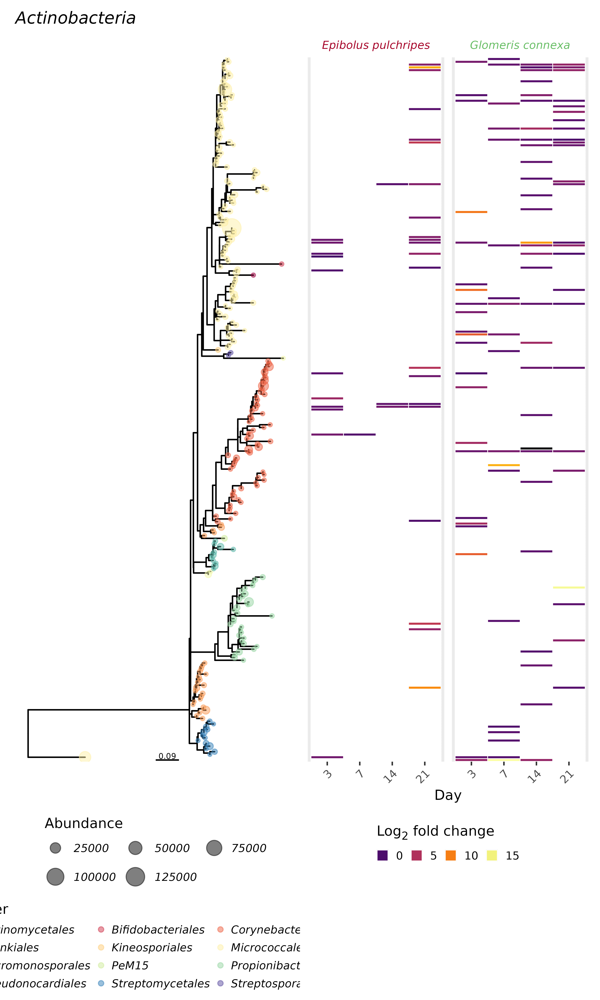
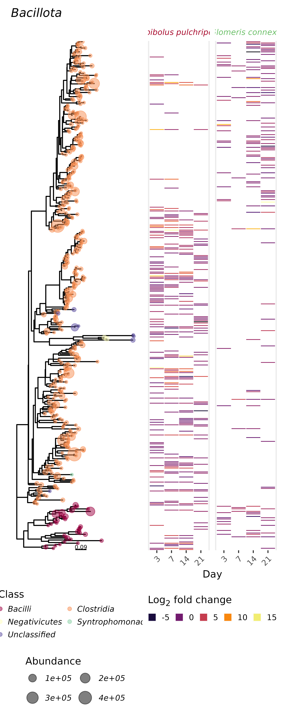
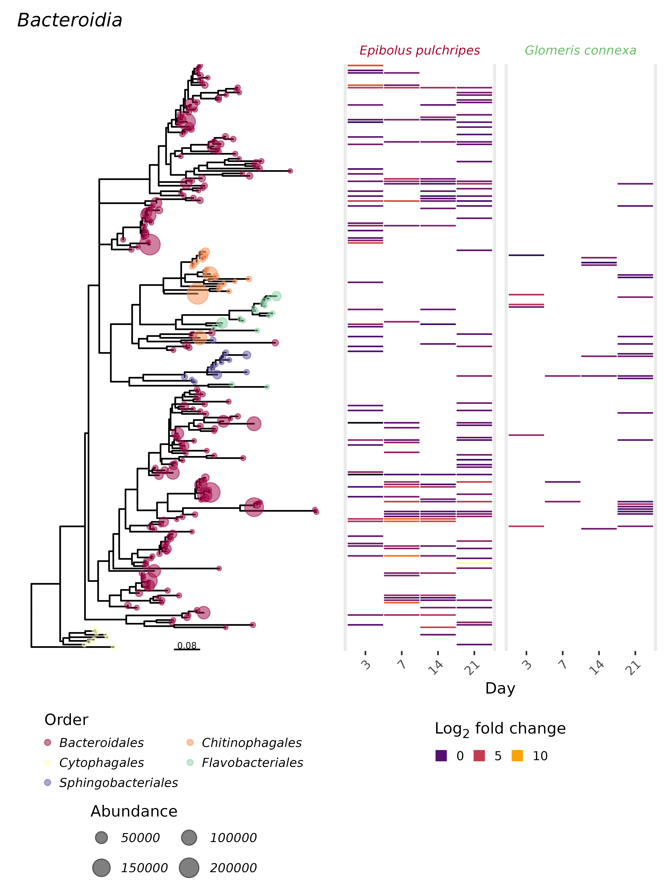
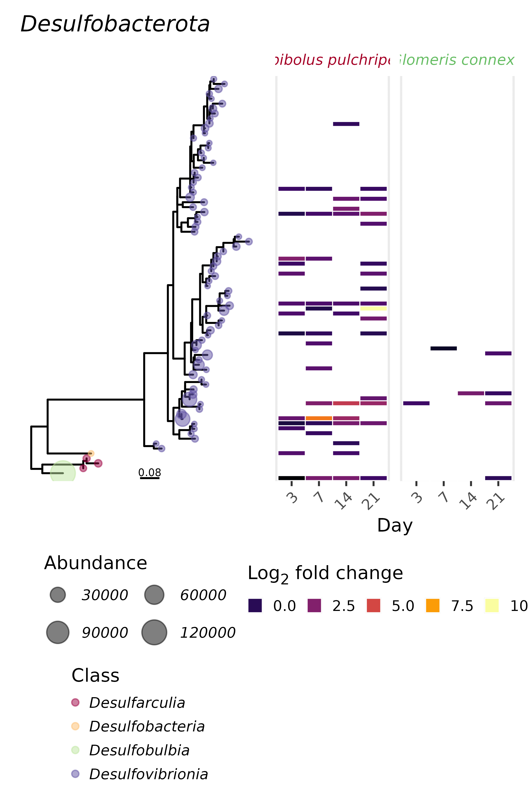
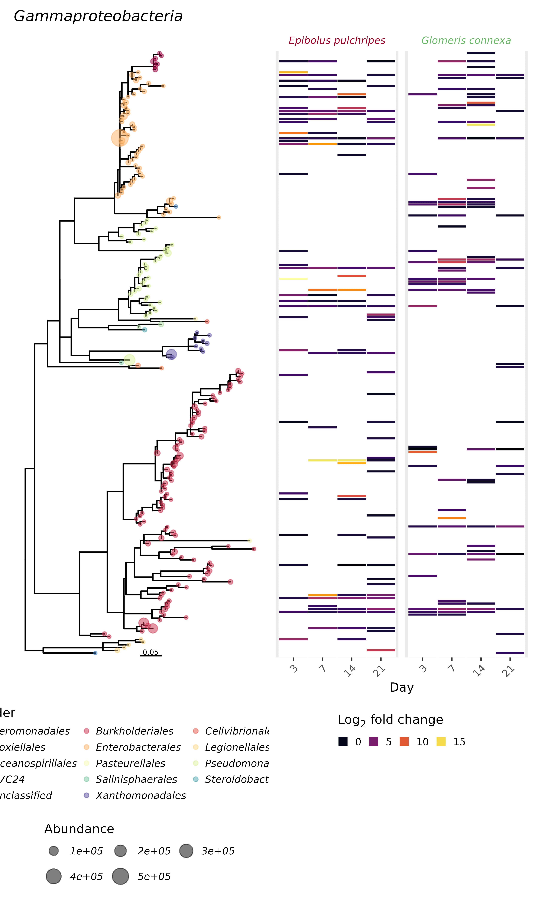
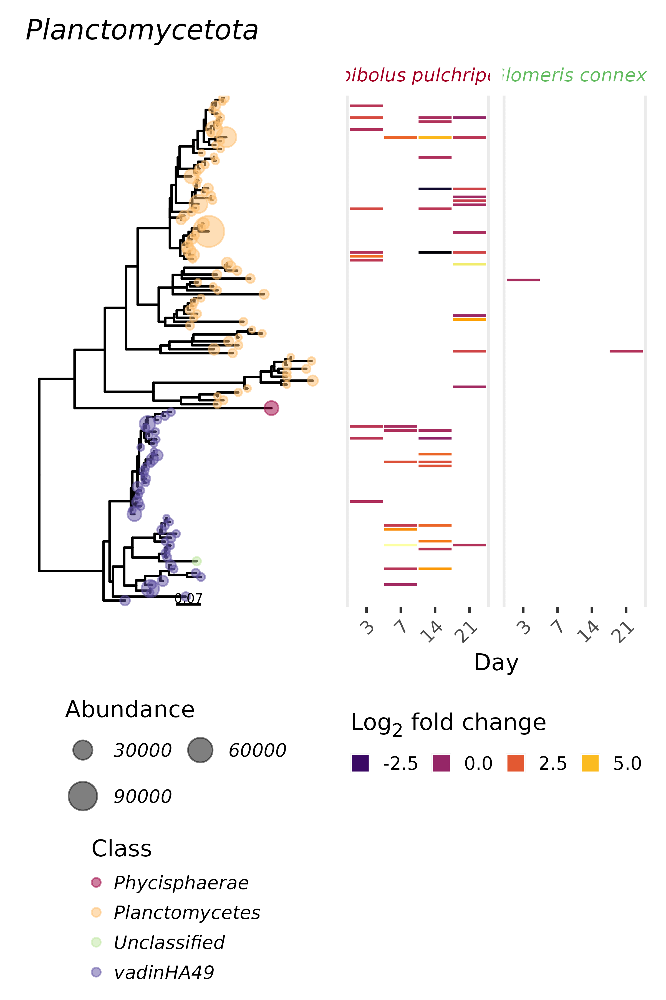
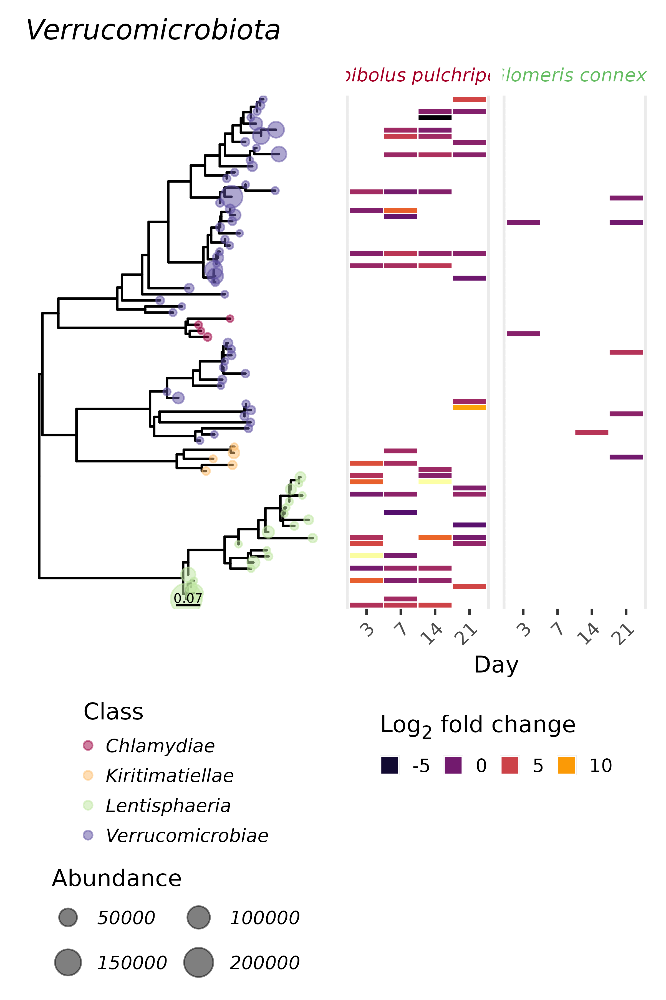

Millipedes SIP
05 SIP differential abundance modelling: comparing between gradients using DESeq2
Differential abundance modelling of SIP gradients
Here we attempt to detect ASVs that were labelled with 13C using differential abundance modelling. Using DESeq2 (Love, Huber and Anders 2014) we compare the relative abundance of each ASV in the fractions where 13C-labelled RNA is expected to be found (>1.795 g ml-1; AKA ‘heavy’ fractions) to the fractions where unlabelled RNA is expected to be found (<1.795 g ml-1; AKA ‘light’ fractions). The method has been previously described in Angel et al., (angel_application_2018?).
Setting general parameters:
set.seed(2021)
alpha_thresh <- 0.1 # only keep ASVs with a diff abundance p-value below this
LFC_thresh <- 0 # only keep ASVs with a diff abundance LFC above this
prev_thresh <- 2 # only keep ASVs that appear in at least X samples (fractions)
rep_thresh <- 1 # only keep ASVs that appear significant in at least X replicates
abund_thresh <- 100
rare_thresh <- 0.0045
vars2test <- "Label..13C."
ref_level <- "Unlabelled"
data_path <- "./37_DADA2_pseudo/"
Metadata_table <- "./37_Millipedes_SIP_metadata.csv"
# Seq_table <- "DADA2.seqtab_nochim_decontam.tsv"
# Seq_file <- "DADA2.Seqs_decontam.fa"
Proj_name <- "Millipedes_SIP"
Ps_file <- paste0(Proj_name, "_seq_prev_filt.Rds")
# Tree_file <- "./Tree/DADA2.Seqs_decontam_filtered.filtered.align.treefile"
Tree_file <- "./Tree/DADA2_reps_seq_prev_filt.filtered.align.treefile"
Var1 = "Replicate" # e.g sampling point / replicate
Var2 = "Day" # e.g. a treatment or a manipulation
Var3 = "Species" # e.g. a treatment/manipulation or an important covariant
Var4 = "Label..13C." # e.g. an important covariantRead phyloseq object
# Load phylogenetic tree
Tree <- read_tree(paste0(data_path, Tree_file))
# load and merge phyloseq object
readRDS(paste0(data_path, Ps_file)) %>%
merge_phyloseq(.,
phy_tree(Tree)
) -> Ps_obj_SIP Found more than one class "phylo" in cache; using the first, from namespace 'phyloseq'Also defined by 'tidytree'Found more than one class "phylo" in cache; using the first, from namespace 'phyloseq'Also defined by 'tidytree'Found more than one class "phylo" in cache; using the first, from namespace 'phyloseq'Also defined by 'tidytree'Found more than one class "phylo" in cache; using the first, from namespace 'phyloseq'Also defined by 'tidytree'Found more than one class "phylo" in cache; using the first, from namespace 'phyloseq'Also defined by 'tidytree'Found more than one class "phylo" in cache; using the first, from namespace 'phyloseq'Also defined by 'tidytree'Found more than one class "phylo" in cache; using the first, from namespace 'phyloseq'Also defined by 'tidytree'# Add 18S data
read_delim(Metadata_table,
delim = ",",
trim_ws = TRUE) %>%
dplyr::select("merged_sample_name", `18S_copies (undiluted RNA)`) ->
fungi_quantRows: 337 Columns: 27── Column specification ────────────────────────────────────────────────────────
Delimiter: ","
chr (10): sample_ID, merged_sample_name, Read1_file, Long_name, Species, Col...
dbl (16): Day, Replicate, TNA ext. batch, RNA (ng/ul), Volume per gradient (...
lgl (1): Control
ℹ Use `spec()` to retrieve the full column specification for this data.
ℹ Specify the column types or set `show_col_types = FALSE` to quiet this message.# Save filtered phyloseq object for PICRUSt
#Ps_obj_Labelled <- subset_samples(Ps_obj_SIP, Label..13C. == 'Labelled')
#seqs <- refseq(Ps_obj_Labelled)
#otab <- otu_table(Ps_obj_Labelled)
#write.table(seqs, "Ps_obj_Labelled_seqs.tsv", quote=FALSE)
#write.table(otab, "Ps_obj_Labelled_table.tsv", quote=FALSE,sep="\t")
# Then, run the seqs file through this one liner to clean it up and create a fasta file.
# grep -v '^x' Ps_obj_Labelled_seqs.tsv | awk '{print ">"$1"\n"$2}' > Ps_obj_Labelled_seqs.fa; rm Ps_obj_Labelled_seqs.tsv
get_variable(Ps_obj_SIP) %>%
left_join(., fungi_quant, by = "merged_sample_name") %>%
pull(`18S_copies (undiluted RNA)`) ->
sample_data(Ps_obj_SIP)$FungiQuantFound more than one class "phylo" in cache; using the first, from namespace 'phyloseq'
Also defined by 'tidytree'
Found more than one class "phylo" in cache; using the first, from namespace 'phyloseq'
Also defined by 'tidytree'
Found more than one class "phylo" in cache; using the first, from namespace 'phyloseq'
Also defined by 'tidytree'
Found more than one class "phylo" in cache; using the first, from namespace 'phyloseq'
Also defined by 'tidytree'sample_data(Ps_obj_SIP)$Group <- factor(paste0(sample_data(Ps_obj_SIP)$Label..13C., sample_data(Ps_obj_SIP)$Density.zone))Found more than one class "phylo" in cache; using the first, from namespace 'phyloseq'
Also defined by 'tidytree'
Found more than one class "phylo" in cache; using the first, from namespace 'phyloseq'
Also defined by 'tidytree'
Found more than one class "phylo" in cache; using the first, from namespace 'phyloseq'
Also defined by 'tidytree'
Found more than one class "phylo" in cache; using the first, from namespace 'phyloseq'
Also defined by 'tidytree'sample_data(Ps_obj_SIP)$Day <- factor(sample_data(Ps_obj_SIP)$Day, levels = c("3", "7", "14", "21"))Found more than one class "phylo" in cache; using the first, from namespace 'phyloseq'
Also defined by 'tidytree'
Found more than one class "phylo" in cache; using the first, from namespace 'phyloseq'
Also defined by 'tidytree'
Found more than one class "phylo" in cache; using the first, from namespace 'phyloseq'
Also defined by 'tidytree'
Found more than one class "phylo" in cache; using the first, from namespace 'phyloseq'
Also defined by 'tidytree'sample_data(Ps_obj_SIP)$Label..13C. <- factor(sample_data(Ps_obj_SIP)$Label..13C., levels = c("Labelled", "Unlabelled")) Found more than one class "phylo" in cache; using the first, from namespace 'phyloseq'
Also defined by 'tidytree'
Found more than one class "phylo" in cache; using the first, from namespace 'phyloseq'
Also defined by 'tidytree'
Found more than one class "phylo" in cache; using the first, from namespace 'phyloseq'
Also defined by 'tidytree'
Found more than one class "phylo" in cache; using the first, from namespace 'phyloseq'
Also defined by 'tidytree'sample_data(Ps_obj_SIP)$Species <- factor(sample_data(Ps_obj_SIP)$Species, levels = c("Epibolus pulchripes", "Glomeris connexa"))Found more than one class "phylo" in cache; using the first, from namespace 'phyloseq'
Also defined by 'tidytree'
Found more than one class "phylo" in cache; using the first, from namespace 'phyloseq'
Also defined by 'tidytree'
Found more than one class "phylo" in cache; using the first, from namespace 'phyloseq'
Also defined by 'tidytree'
Found more than one class "phylo" in cache; using the first, from namespace 'phyloseq'
Also defined by 'tidytree'sample_data(Ps_obj_SIP)$Fraction.no. <- factor(sample_data(Ps_obj_SIP)$Fraction.no., levels = c("2", "3", "4", "5", "6", "7", "8", "9", "10", "11"))Found more than one class "phylo" in cache; using the first, from namespace 'phyloseq'
Also defined by 'tidytree'
Found more than one class "phylo" in cache; using the first, from namespace 'phyloseq'
Also defined by 'tidytree'
Found more than one class "phylo" in cache; using the first, from namespace 'phyloseq'
Also defined by 'tidytree'
Found more than one class "phylo" in cache; using the first, from namespace 'phyloseq'
Also defined by 'tidytree'sample_data(Ps_obj_SIP)$Density.zone <- factor(ifelse(sample_data(Ps_obj_SIP)$Density..g.ml.1. > 1.8, "Heavy", "Light"), levels = c("Light", "Heavy"))Found more than one class "phylo" in cache; using the first, from namespace 'phyloseq'
Also defined by 'tidytree'
Found more than one class "phylo" in cache; using the first, from namespace 'phyloseq'
Also defined by 'tidytree'
Found more than one class "phylo" in cache; using the first, from namespace 'phyloseq'
Also defined by 'tidytree'
Found more than one class "phylo" in cache; using the first, from namespace 'phyloseq'
Also defined by 'tidytree'Ps_obj_SIP %>%
get_variable() %>%
group_by(!!sym(Var3), !!sym(Var2), !!sym(Var4), !!sym(Var1)) %>%
mutate(qPCR_fraction = X16S_copies..undiluted.RNA./sum(X16S_copies..undiluted.RNA.) * 10^6) %>% # times 10^6 is important to not end up with very small fractions!
mutate(fungi_quant_fraction = FungiQuant/sum(FungiQuant) * 10^6) ->
sample_data(Ps_obj_SIP)Assuming first column, `sample_ID`, contains the sample names
Found more than one class "phylo" in cache; using the first, from namespace 'phyloseq'
Also defined by 'tidytree'
Found more than one class "phylo" in cache; using the first, from namespace 'phyloseq'
Also defined by 'tidytree'
Found more than one class "phylo" in cache; using the first, from namespace 'phyloseq'
Also defined by 'tidytree'
Found more than one class "phylo" in cache; using the first, from namespace 'phyloseq'
Also defined by 'tidytree'Ps_obj_abs <- Ps_obj_SIP
otu_table(Ps_obj_abs) %<>%
transform_sample_counts(., function(x) x / sum(x) * 100) %>%
t() %>%
as("matrix") %>%
as.data.frame() %>%
map2_dfc(., get_variable(Ps_obj_abs, "qPCR_fraction") , `*`) %>%
data.frame(., row.names = taxa_names(Ps_obj_abs)) %>%
t() %>%
round() %>%
otu_table(., taxa_are_rows = FALSE)Found more than one class "phylo" in cache; using the first, from namespace 'phyloseq'
Also defined by 'tidytree'
Found more than one class "phylo" in cache; using the first, from namespace 'phyloseq'
Also defined by 'tidytree'
Found more than one class "phylo" in cache; using the first, from namespace 'phyloseq'
Also defined by 'tidytree'
Found more than one class "phylo" in cache; using the first, from namespace 'phyloseq'
Also defined by 'tidytree'# Mark rare taxa
Ps_obj_abs %<>% mark_rare_taxa(., rank = "Phylum", rare_thresh = rare_thresh)Found more than one class "phylo" in cache; using the first, from namespace 'phyloseq'
Also defined by 'tidytree'
Found more than one class "phylo" in cache; using the first, from namespace 'phyloseq'
Also defined by 'tidytree'
Found more than one class "phylo" in cache; using the first, from namespace 'phyloseq'
Also defined by 'tidytree'
Found more than one class "phylo" in cache; using the first, from namespace 'phyloseq'
Also defined by 'tidytree'
Found more than one class "phylo" in cache; using the first, from namespace 'phyloseq'
Also defined by 'tidytree'
Found more than one class "phylo" in cache; using the first, from namespace 'phyloseq'
Also defined by 'tidytree'
Found more than one class "phylo" in cache; using the first, from namespace 'phyloseq'
Also defined by 'tidytree'
Found more than one class "phylo" in cache; using the first, from namespace 'phyloseq'
Also defined by 'tidytree'
Found more than one class "phylo" in cache; using the first, from namespace 'phyloseq'
Also defined by 'tidytree'
Found more than one class "phylo" in cache; using the first, from namespace 'phyloseq'
Also defined by 'tidytree'
Found more than one class "phylo" in cache; using the first, from namespace 'phyloseq'
Also defined by 'tidytree'
Found more than one class "phylo" in cache; using the first, from namespace 'phyloseq'
Also defined by 'tidytree'
Found more than one class "phylo" in cache; using the first, from namespace 'phyloseq'
Also defined by 'tidytree'Warning: There was 1 warning in `mutate()`.
ℹ In argument: `across(rank, ~if_else(Phylum %in% Rare_phyla, "Rare",
Phylum))`.
Caused by warning:
! Using an external vector in selections was deprecated in tidyselect 1.1.0.
ℹ Please use `all_of()` or `any_of()` instead.
# Was:
data %>% select(rank)
# Now:
data %>% select(all_of(rank))
See <https://tidyselect.r-lib.org/reference/faq-external-vector.html>.Found more than one class "phylo" in cache; using the first, from namespace 'phyloseq'
Also defined by 'tidytree'
Found more than one class "phylo" in cache; using the first, from namespace 'phyloseq'
Also defined by 'tidytree'
Found more than one class "phylo" in cache; using the first, from namespace 'phyloseq'
Also defined by 'tidytree'
Found more than one class "phylo" in cache; using the first, from namespace 'phyloseq'
Also defined by 'tidytree'
Found more than one class "phylo" in cache; using the first, from namespace 'phyloseq'
Also defined by 'tidytree'
Found more than one class "phylo" in cache; using the first, from namespace 'phyloseq'
Also defined by 'tidytree'
Found more than one class "phylo" in cache; using the first, from namespace 'phyloseq'
Also defined by 'tidytree'
Found more than one class "phylo" in cache; using the first, from namespace 'phyloseq'
Also defined by 'tidytree'Plot the SIP gradients
First I’ll plot the 16S copy numbers vs density
get_variable(Ps_obj_abs) %>%
mutate(qPCR_fraction = qPCR_fraction/10^4,
fungi_quant_fraction = fungi_quant_fraction/10^4) %>% # bring it back from ppm to %
mutate(Rep_label = paste(Replicate, Label..13C.)) %>%
mutate(Rep_label = factor(dplyr::recode(Rep_label,
`1 Labelled` = "1",
`2 Labelled` = "2",
`3 Labelled` = "3",
`1 Unlabelled` = "Unlabelled"),
levels = c("Unlabelled", "1", "2", "3"))) %>%
mutate(Species = recode_factor(Species, `Epibolus pulchripes` = "*E. pulchripes*", `Glomeris connexa` = "*G. connexa*")) ->
qPCR_df
plot_SIP_fractions(qPCR_df,
colour = "Rep_label",
xticks = seq(1.71, 1.85, by = 0.03)) 
plot_SIP_fractions(qPCR_df,
y = "fungi_quant_fraction",
colour = "Rep_label",
xticks = seq(1.71, 1.85, by = 0.03)) +
labs(x = "Density (g ml<sup>-1</sup>)", y = "18S rRNA fungal copies (%)")
Beta Diversity Join Analysis
Let us look first at the dissimilarity in community composition between the different fractions. If the labelling was strong enough we should see a deviation of (some of) the heavy fractions from the light ones. However, a lack of a significant deviation does not mean unsuccessful labelling because if only a small minority of the community was labelled we might not see it here (but we will, hopefully, see it using DESeq2 modelling).
# Join analysis
plot_lib_dist(Ps_obj_abs)`stat_bin()` using `bins = 30`. Pick better value with `binwidth`.
(mod0 <- adonis2(vegdist(otu_table(Ps_obj_abs), method = "horn") ~ Lib.size,
data = get_variable(Ps_obj_abs),
permutations = 999
))Permutation test for adonis under reduced model
Terms added sequentially (first to last)
Permutation: free
Number of permutations: 999
adonis2(formula = vegdist(otu_table(Ps_obj_abs), method = "horn") ~ Lib.size, data = get_variable(Ps_obj_abs), permutations = 999)
Df SumOfSqs R2 F Pr(>F)
Lib.size 1 7.538 0.06726 22.859 0.001 ***
Residual 317 104.541 0.93274
Total 318 112.079 1.00000
---
Signif. codes: 0 '***' 0.001 '**' 0.01 '*' 0.05 '.' 0.1 ' ' 1(mod3 <- adonis2(vegdist(otu_table(Ps_obj_abs), method = "horn") ~ Species * Day + Species:Density.zone,
data = get_variable(Ps_obj_abs),
permutations = 999
))Permutation test for adonis under reduced model
Terms added sequentially (first to last)
Permutation: free
Number of permutations: 999
adonis2(formula = vegdist(otu_table(Ps_obj_abs), method = "horn") ~ Species * Day + Species:Density.zone, data = get_variable(Ps_obj_abs), permutations = 999)
Df SumOfSqs R2 F Pr(>F)
Species 1 28.610 0.25527 142.824 0.001 ***
Day 3 10.206 0.09106 16.983 0.001 ***
Species:Day 3 8.060 0.07191 13.412 0.001 ***
Species:Density.zone 2 3.304 0.02948 8.248 0.001 ***
Residual 309 61.899 0.55227
Total 318 112.079 1.00000
---
Signif. codes: 0 '***' 0.001 '**' 0.01 '*' 0.05 '.' 0.1 ' ' 1Species_disp <- betadisper(vegdist(otu_table(Ps_obj_abs), method = "horn"), get_variable(Ps_obj_abs, "Species"))
permutest(Species_disp)
Permutation test for homogeneity of multivariate dispersions
Permutation: free
Number of permutations: 999
Response: Distances
Df Sum Sq Mean Sq F N.Perm Pr(>F)
Groups 1 0.5582 0.55825 17.433 999 0.001 ***
Residuals 317 10.1510 0.03202
---
Signif. codes: 0 '***' 0.001 '**' 0.01 '*' 0.05 '.' 0.1 ' ' 1plot(Species_disp)
Day_disp <- betadisper(vegdist(otu_table(Ps_obj_abs), method = "horn"), get_variable(Ps_obj_abs, "Day"))
permutest(Day_disp)
Permutation test for homogeneity of multivariate dispersions
Permutation: free
Number of permutations: 999
Response: Distances
Df Sum Sq Mean Sq F N.Perm Pr(>F)
Groups 3 0.0373 0.012429 1.0283 999 0.417
Residuals 315 3.8073 0.012087 plot(Day_disp)
Density_disp <- betadisper(vegdist(otu_table(Ps_obj_abs), method = "horn"), get_variable(Ps_obj_abs, "Density.zone"))
permutest(Density_disp)
Permutation test for homogeneity of multivariate dispersions
Permutation: free
Number of permutations: 999
Response: Distances
Df Sum Sq Mean Sq F N.Perm Pr(>F)
Groups 1 0.03762 0.037623 4.7801 999 0.033 *
Residuals 317 2.49503 0.007871
---
Signif. codes: 0 '***' 0.001 '**' 0.01 '*' 0.05 '.' 0.1 ' ' 1plot(Density_disp)
Ord <- ordinate(Ps_obj_abs, "CAP", "horn",
formula = ~ Species * Day + Species:Density.zone)
explained <- as.numeric(format(round(eigenvals(Ord)/sum(eigenvals(Ord)) * 100, 1), nsmall = 1))
Ord_plt <- plot_ordination(Ps_obj_abs, Ord, type = "Sample.no.", color = "Label..13C.", justDF = TRUE)
p_ord_joint <- ggplot(Ord_plt) +
geom_point(aes(
x = CAP1,
y = CAP2,
color = Label..13C.,
size = Density..g.ml.1.,
shape = Species
), alpha = 2 / 3) +
guides(colour = guide_legend(title = "Labelling"),
size = guide_legend(title = "Density (g ml<sup>-1</sup>)"),
shape = guide_legend(title = "Species")) +
scale_colour_locuszoom() +
labs(x = sprintf("CAP1 (%s%%)", explained[1]),
y = sprintf("CAP2 (%s%%)", explained[2])) +
coord_fixed(ratio = sqrt(explained[2] / explained[1])) +
theme(legend.justification = "top",
legend.title = element_markdown(size = 11),
legend.direction='vertical',
legend.position = "bottom",
strip.text.y = element_text(face = "italic")
) +
scale_size_continuous(breaks = round(c(seq(min(Ord_plt$Density..g.ml.1.),
max(Ord_plt$Density..g.ml.1.),
length.out = 4),
1), 4),
range = c(1, 5)) +
guides(size = guide_legend(override.aes = list(size = seq(2, 5)))) +
facet_grid(Species ~ Day) +
ggtitle("") +
NULL
print(p_ord_joint)
# save_figure(paste0(fig.path, "Oridnation"),
# p_ord_joint,
# pwidth = 10,
# pheight = 8,
# dpi = 600)
#
# knitr::include_graphics(paste0(fig.path, "Oridnation", ".png"))Beta diversity analysis for Epibolus pulchripes
Ps_obj_Epi <- subset_samples(Ps_obj_abs, Species == 'Epibolus pulchripes')Found more than one class "phylo" in cache; using the first, from namespace 'phyloseq'Also defined by 'tidytree'Found more than one class "phylo" in cache; using the first, from namespace 'phyloseq'Also defined by 'tidytree'Found more than one class "phylo" in cache; using the first, from namespace 'phyloseq'Also defined by 'tidytree'Found more than one class "phylo" in cache; using the first, from namespace 'phyloseq'Also defined by 'tidytree'plot_lib_dist(Ps_obj_Epi)`stat_bin()` using `bins = 30`. Pick better value with `binwidth`.
(mod0 <- adonis2(vegdist(otu_table(Ps_obj_Epi), method = "horn") ~ Lib.size,
data = get_variable(Ps_obj_Epi),
permutations = 999
))Permutation test for adonis under reduced model
Terms added sequentially (first to last)
Permutation: free
Number of permutations: 999
adonis2(formula = vegdist(otu_table(Ps_obj_Epi), method = "horn") ~ Lib.size, data = get_variable(Ps_obj_Epi), permutations = 999)
Df SumOfSqs R2 F Pr(>F)
Lib.size 1 1.046 0.02881 4.6577 0.001 ***
Residual 157 35.251 0.97119
Total 158 36.297 1.00000
---
Signif. codes: 0 '***' 0.001 '**' 0.01 '*' 0.05 '.' 0.1 ' ' 1(mod1 <- adonis2(vegdist(otu_table(Ps_obj_Epi), method = "horn") ~ Day * Density.zone,
data = get_variable(Ps_obj_Epi),
permutations = 999
))Permutation test for adonis under reduced model
Terms added sequentially (first to last)
Permutation: free
Number of permutations: 999
adonis2(formula = vegdist(otu_table(Ps_obj_Epi), method = "horn") ~ Day * Density.zone, data = get_variable(Ps_obj_Epi), permutations = 999)
Df SumOfSqs R2 F Pr(>F)
Day 3 9.987 0.27516 21.2666 0.001 ***
Density.zone 1 2.083 0.05738 13.3047 0.001 ***
Day:Density.zone 3 0.589 0.01623 1.2544 0.195
Residual 151 23.638 0.65123
Total 158 36.297 1.00000
---
Signif. codes: 0 '***' 0.001 '**' 0.01 '*' 0.05 '.' 0.1 ' ' 1(mod2 <- adonis2(vegdist(otu_table(Ps_obj_Epi), method = "horn") ~ Day + Density.zone,
data = get_variable(Ps_obj_Epi),
permutations = 999
))Permutation test for adonis under reduced model
Terms added sequentially (first to last)
Permutation: free
Number of permutations: 999
adonis2(formula = vegdist(otu_table(Ps_obj_Epi), method = "horn") ~ Day + Density.zone, data = get_variable(Ps_obj_Epi), permutations = 999)
Df SumOfSqs R2 F Pr(>F)
Day 3 9.987 0.27516 21.162 0.001 ***
Density.zone 1 2.083 0.05738 13.239 0.001 ***
Residual 154 24.227 0.66746
Total 158 36.297 1.00000
---
Signif. codes: 0 '***' 0.001 '**' 0.01 '*' 0.05 '.' 0.1 ' ' 1mod2 %>%
kable(digits = 3, format = "pandoc") | Df SumOfSqs | R2 | F | Pr(>F) | ||
|---|---|---|---|---|---|
| Day | 3 | 9.987 | 0.275 | 21.162 | 0.001 |
| Density.zone | 1 | 2.083 | 0.057 | 13.239 | 0.001 |
| Residual | 154 | 24.227 | 0.667 | NA | NA |
| Total | 158 | 36.297 | 1.000 | NA | NA |
Day_disp <- betadisper(vegdist(otu_table(Ps_obj_Epi), method = "horn"), get_variable(Ps_obj_Epi, "Day"))
anova(Day_disp) %>%
kable(digits = 3, format = "pandoc") | Df Sum Sq | Mean | Sq F v | alue Pr( | >F) | |
|---|---|---|---|---|---|
| Groups | 3 | 0.830 | 0.277 | 8.482 | 0 |
| Residuals | 155 | 5.055 | 0.033 | NA | NA |
plot(Day_disp, main = "Day BetaDisper in Epibolus Hindgut Samples", cex.lab = 1.3, cex.axis = 1.5) 
Density_disp <- betadisper(vegdist(otu_table(Ps_obj_Epi), method = "horn"), get_variable(Ps_obj_Epi, "Density.zone"))
anova(Density_disp) %>%
kable(digits = 3, format = "pandoc") | Df Sum Sq | Mean | Sq F v | alue Pr( | >F) | |
|---|---|---|---|---|---|
| Groups | 1 | 0.337 | 0.337 | 9.466 | 0.002 |
| Residuals | 157 | 5.588 | 0.036 | NA | NA |
plot(Density_disp, main = "Density BetaDisper in Epibolus Hindgut Samples", cex.lab = 1.3, cex.axis = 1.5)
Ord <- ordinate(Ps_obj_Epi, "CAP", "horn",
formula = ~ Day + Density.zone)
explained <- as.numeric(format(round(eigenvals(Ord)/sum(eigenvals(Ord)) * 100, 1), nsmall = 1))
Ord_plt <- plot_ordination(Ps_obj_Epi, Ord, type = "Sample.no.", color = "Label..13C.", justDF = TRUE)
p_ord_EP <- ggplot(Ord_plt) +
geom_point(aes(
x = CAP1,
y = CAP2,
color = Label..13C.,
size = Density..g.ml.1.
), alpha = 2 / 3) +
guides(colour = guide_legend(title = "Labelling"),
size = guide_legend(title = "Density (g ml<sup>-1</sup>)"),
shape = guide_legend(title = "Species")) +
scale_colour_locuszoom() +
labs(x = sprintf("CAP1 (%s%%)", explained[1]),
y = sprintf("CAP2 (%s%%)", explained[2])) +
# coord_fixed(ratio = sqrt(explained[2] / explained[1])) +
theme(#legend.justification = "top",
# legend.title = element_markdown(size = 11),
# legend.direction='vertical',
legend.position = "none",
strip.text.y = element_text(face = "italic")
) +
scale_size_continuous(breaks = round(c(seq(min(Ord_plt$Density..g.ml.1.),
max(Ord_plt$Density..g.ml.1.),
length.out = 4),
1), 4),
range = c(1, 5)) +
# guides(size = guide_legend(override.aes = list(size = seq(2, 5)))) +
scale_x_continuous(breaks = round(seq(min(Ord_plt$CAP1), max(Ord_plt$CAP1), by = 1),1)) +
facet_grid(Species ~ Day) +
ggtitle("") +
NULL
print(p_ord_EP)
# save_figure(paste0(fig.path, "Oridnation for Epibolus pulchripes"),
# p_ord_joint,
# pwidth = 10,
# pheight = 8,
# dpi = 600)
#
# knitr::include_graphics(paste0(fig.path, "Oridnation for Epibolus pulchripes", ".png"))Beta diversity analysis for Glomeris connexa
Ps_obj_Glo <- subset_samples(Ps_obj_abs, Species == 'Glomeris connexa')Found more than one class "phylo" in cache; using the first, from namespace 'phyloseq'Also defined by 'tidytree'Found more than one class "phylo" in cache; using the first, from namespace 'phyloseq'Also defined by 'tidytree'Found more than one class "phylo" in cache; using the first, from namespace 'phyloseq'Also defined by 'tidytree'Found more than one class "phylo" in cache; using the first, from namespace 'phyloseq'Also defined by 'tidytree'plot_lib_dist(Ps_obj_Glo)`stat_bin()` using `bins = 30`. Pick better value with `binwidth`.
(mod0 <- adonis2(vegdist(otu_table(Ps_obj_Glo), method = "horn") ~ Lib.size,
data = get_variable(Ps_obj_Glo),
permutations = 999
))Permutation test for adonis under reduced model
Terms added sequentially (first to last)
Permutation: free
Number of permutations: 999
adonis2(formula = vegdist(otu_table(Ps_obj_Glo), method = "horn") ~ Lib.size, data = get_variable(Ps_obj_Glo), permutations = 999)
Df SumOfSqs R2 F Pr(>F)
Lib.size 1 1.444 0.03062 4.9901 0.001 ***
Residual 158 45.728 0.96938
Total 159 47.173 1.00000
---
Signif. codes: 0 '***' 0.001 '**' 0.01 '*' 0.05 '.' 0.1 ' ' 1(mod1 <- adonis2(vegdist(otu_table(Ps_obj_Glo), method = "horn") ~ Day * Density.zone,
data = get_variable(Ps_obj_Glo),
permutations = 999
))Permutation test for adonis under reduced model
Terms added sequentially (first to last)
Permutation: free
Number of permutations: 999
adonis2(formula = vegdist(otu_table(Ps_obj_Glo), method = "horn") ~ Day * Density.zone, data = get_variable(Ps_obj_Glo), permutations = 999)
Df SumOfSqs R2 F Pr(>F)
Day 3 8.279 0.17550 11.4582 0.001 ***
Density.zone 1 1.222 0.02590 5.0727 0.001 ***
Day:Density.zone 3 1.063 0.02254 1.4716 0.085 .
Residual 152 36.609 0.77606
Total 159 47.173 1.00000
---
Signif. codes: 0 '***' 0.001 '**' 0.01 '*' 0.05 '.' 0.1 ' ' 1(mod2 <- adonis2(vegdist(otu_table(Ps_obj_Glo), method = "horn") ~ Day + Density.zone,
data = get_variable(Ps_obj_Glo),
permutations = 999
))Permutation test for adonis under reduced model
Terms added sequentially (first to last)
Permutation: free
Number of permutations: 999
adonis2(formula = vegdist(otu_table(Ps_obj_Glo), method = "horn") ~ Day + Density.zone, data = get_variable(Ps_obj_Glo), permutations = 999)
Df SumOfSqs R2 F Pr(>F)
Day 3 8.279 0.1755 11.3545 0.001 ***
Density.zone 1 1.222 0.0259 5.0268 0.001 ***
Residual 155 37.672 0.7986
Total 159 47.173 1.0000
---
Signif. codes: 0 '***' 0.001 '**' 0.01 '*' 0.05 '.' 0.1 ' ' 1mod2 %>%
kable(digits = 3, format = "pandoc") %>%
kable_styling(bootstrap_options = c("striped", "hover", "condensed", "responsive"), full_width = F)Warning in kable_styling(., bootstrap_options = c("striped", "hover",
"condensed", : Please specify format in kable. kableExtra can customize either
HTML or LaTeX outputs. See https://haozhu233.github.io/kableExtra/ for details.| Df SumOfSqs | R2 | F | Pr(>F) | ||
|---|---|---|---|---|---|
| Day | 3 | 8.279 | 0.176 | 11.355 | 0.001 |
| Density.zone | 1 | 1.222 | 0.026 | 5.027 | 0.001 |
| Residual | 155 | 37.672 | 0.799 | NA | NA |
| Total | 159 | 47.173 | 1.000 | NA | NA |
Day_disp <- betadisper(vegdist(otu_table(Ps_obj_Glo), method = "horn"), get_variable(Ps_obj_Glo, "Day"))Warning in betadisper(vegdist(otu_table(Ps_obj_Glo), method = "horn"),
get_variable(Ps_obj_Glo, : some squared distances are negative and changed to
zeroanova(Day_disp) %>%
kable(digits = 3, format = "pandoc")| Df Sum Sq | Mean | Sq F v | alue Pr( | >F) | |
|---|---|---|---|---|---|
| Groups | 3 | 1.387 | 0.462 | 15.239 | 0 |
| Residuals | 156 | 4.732 | 0.030 | NA | NA |
plot(Day_disp, main = "Day BetaDisper in Glomeris Hindgut Samples", cex.lab = 1.3, cex.axis = 1.5)
Density_disp <- betadisper(vegdist(otu_table(Ps_obj_Glo), method = "horn"), get_variable(Ps_obj_Glo, "Density.zone"))
anova(Density_disp) %>%
kable(digits = 3, format = "pandoc")| Df Sum Sq | Mean | Sq F v | alue Pr( | >F) | |
|---|---|---|---|---|---|
| Groups | 1 | 0.063 | 0.063 | 2.818 | 0.095 |
| Residuals | 158 | 3.557 | 0.023 | NA | NA |
plot(Density_disp, main = "Density BetaDisper in Glomeris Hindgut Samples", cex.lab = 1.3, cex.axis = 1.5)
Ord <- ordinate(Ps_obj_Glo, "CAP", "horn",
formula = ~ Day + Density.zone)
explained <- as.numeric(format(round(eigenvals(Ord)/sum(eigenvals(Ord)) * 100, 1), nsmall = 1))
Ord_plt <- plot_ordination(Ps_obj_Glo, Ord, type = "Sample.no.", color = "Label..13C.", justDF = TRUE)
p_ord_GC <- ggplot(Ord_plt) +
geom_point(aes(
x = CAP1,
y = CAP2,
color = Label..13C.,
size = Density..g.ml.1.
), alpha = 2 / 3) +
guides(colour = guide_legend(title = "Labelling"),
size = guide_legend(title = "Density (g ml<sup>-1</sup>)"),
shape = guide_legend(title = "Species")) +
scale_colour_locuszoom() +
labs(x = sprintf("CAP1 (%s%%)", explained[1]),
y = sprintf("CAP2 (%s%%)", explained[2])) +
# coord_fixed(ratio = sqrt(explained[2] / explained[1])) +
theme(legend.justification = "top",
legend.title = element_markdown(size = 11),
legend.direction='vertical',
legend.position = "bottom",
strip.text.y = element_text(face = "italic")
) +
scale_size_continuous(breaks = round(c(seq(min(Ord_plt$Density..g.ml.1.),
max(Ord_plt$Density..g.ml.1.),
length.out = 4),
1), 4),
range = c(1, 5)) +
# guides(size = guide_legend(override.aes = list(size = seq(2, 5)))) +
scale_x_continuous(breaks = round(seq(min(Ord_plt$CAP1), max(Ord_plt$CAP1), by = 1),1)) +
facet_grid(Species ~ Day) +
ggtitle("") +
NULL
print(p_ord_GC)
patched_ord <- (p_ord_EP + p_ord_GC) +
plot_layout(ncol = 1)
save_figure(paste0(fig.path, "Patched_ordination"),
patched_ord,
pwidth = 10,
pheight = 8,
dpi = 300)
#
# knitr::include_graphics(paste0(fig.path, "Oridnation for Glomeris connexa", ".png"))Subset the dataset
Because the DESeq2 models will be run on each gradient separately, we need to subset the phyloseq object. This is easily done using HTSSIP::phyloseq_subset (Youngblut, Barnett and Buckley 2018)
# split, ignore time points (for labelled ASV plots)
## IT MIGHT BE POSSIBLE TO OMIT THE LABEL..13C. HERE
test_expr_1 <- "(Species == '${Species}' & Label..13C. == 'Unlabelled') | (Species == '${Species}' & Label..13C. == '${Label..13C.}')"
params_1 <- get_treatment_params(Ps_obj_abs, c("Species",
"Label..13C."),
"Label..13C. != 'Unlabelled'")Warning: `filter_()` was deprecated in dplyr 0.7.0.
ℹ Please use `filter()` instead.
ℹ See vignette('programming') for more help
ℹ The deprecated feature was likely used in the HTSSIP package.
Please report the issue to the authors.# Ps_obj_abs_noTime_l <- phyloseq_subset(subset_samples(Ps_obj_abs, Replicate == 1), params_1, test_expr_1)
# Generate a list of subsetted phyloseq objects
Ps_obj_abs %>%
# subset_samples(Density.zone == "Heavy") %>%
phyloseq_subset(., params_1, test_expr_1) %>%
map(., ~filter_taxa(.x, function(y) sum(y) > 0, TRUE)) %>% # remove 0-summed ASVs
rep(., 3) -> # replicate the list by the number of reps, we will then remove the replicates within each item
Ps_obj_abs_noTime_lWarning: `mutate_()` was deprecated in dplyr 0.7.0.
ℹ Please use `mutate()` instead.
ℹ See vignette('programming') for more help
ℹ The deprecated feature was likely used in the HTSSIP package.
Please report the issue to the authors.Found more than one class "phylo" in cache; using the first, from namespace 'phyloseq'Also defined by 'tidytree'Found more than one class "phylo" in cache; using the first, from namespace 'phyloseq'Also defined by 'tidytree'# Keep only one replicate plus the unlabelled control in each ps obj
Ps_obj_abs_noTime_l[1:2] %>%
map(., ~subset_samples(.x, Replicate == 1)) ->
Ps_obj_abs_noTime_l_R1Found more than one class "phylo" in cache; using the first, from namespace 'phyloseq'
Also defined by 'tidytree'Found more than one class "phylo" in cache; using the first, from namespace 'phyloseq'Also defined by 'tidytree'Found more than one class "phylo" in cache; using the first, from namespace 'phyloseq'Also defined by 'tidytree'Found more than one class "phylo" in cache; using the first, from namespace 'phyloseq'Also defined by 'tidytree'Found more than one class "phylo" in cache; using the first, from namespace 'phyloseq'Also defined by 'tidytree'Found more than one class "phylo" in cache; using the first, from namespace 'phyloseq'Also defined by 'tidytree'Found more than one class "phylo" in cache; using the first, from namespace 'phyloseq'Also defined by 'tidytree'Found more than one class "phylo" in cache; using the first, from namespace 'phyloseq'Also defined by 'tidytree'names(Ps_obj_abs_noTime_l_R1) %<>%
map(., ~paste(.x, "1"))
Ps_obj_abs_noTime_l[3:4] %>%
map(., ~subset_samples(.x, Label..13C. == "Unlabelled" | Replicate == 2)) ->
Ps_obj_abs_noTime_l_R2Found more than one class "phylo" in cache; using the first, from namespace 'phyloseq'
Also defined by 'tidytree'Found more than one class "phylo" in cache; using the first, from namespace 'phyloseq'Also defined by 'tidytree'Found more than one class "phylo" in cache; using the first, from namespace 'phyloseq'Also defined by 'tidytree'Found more than one class "phylo" in cache; using the first, from namespace 'phyloseq'Also defined by 'tidytree'Found more than one class "phylo" in cache; using the first, from namespace 'phyloseq'Also defined by 'tidytree'Found more than one class "phylo" in cache; using the first, from namespace 'phyloseq'Also defined by 'tidytree'Found more than one class "phylo" in cache; using the first, from namespace 'phyloseq'Also defined by 'tidytree'Found more than one class "phylo" in cache; using the first, from namespace 'phyloseq'Also defined by 'tidytree'names(Ps_obj_abs_noTime_l_R2) %<>%
map(., ~paste(.x, "2"))
Ps_obj_abs_noTime_l[5:6] %>%
map(., ~subset_samples(.x, Label..13C. == "Unlabelled" | Replicate == 3)) ->
Ps_obj_abs_noTime_l_R3Found more than one class "phylo" in cache; using the first, from namespace 'phyloseq'
Also defined by 'tidytree'Found more than one class "phylo" in cache; using the first, from namespace 'phyloseq'Also defined by 'tidytree'Found more than one class "phylo" in cache; using the first, from namespace 'phyloseq'Also defined by 'tidytree'Found more than one class "phylo" in cache; using the first, from namespace 'phyloseq'Also defined by 'tidytree'Found more than one class "phylo" in cache; using the first, from namespace 'phyloseq'Also defined by 'tidytree'Found more than one class "phylo" in cache; using the first, from namespace 'phyloseq'Also defined by 'tidytree'Found more than one class "phylo" in cache; using the first, from namespace 'phyloseq'Also defined by 'tidytree'Found more than one class "phylo" in cache; using the first, from namespace 'phyloseq'Also defined by 'tidytree'names(Ps_obj_abs_noTime_l_R3) %<>%
map(., ~paste(.x, "3"))
# rejoin all lists
Ps_obj_abs_noTime_l <- c(Ps_obj_abs_noTime_l_R1, Ps_obj_abs_noTime_l_R2, Ps_obj_abs_noTime_l_R3)
names(Ps_obj_abs_noTime_l) %<>%
map(., ~str_remove_all(.x, ".*\\s\\|\\s")) %>%
map(., ~str_remove_all(.x, "\\(|\\)|Species == |Label..13C. == |'")) %>%
map(., ~str_replace_all(.x, "\\s\\s", " "))
# map(., ~str_replace_all(.x, "& ([0-9]+) ", "& \\1 d & "))
# Order by name
Ps_obj_abs_noTime_l %<>%
.[order(names(.))]
# split, include time points (for DESeq2 modelling) (between gradient comparison)
test_expr_2 <- "(Species == '${Species}' & Day == '${Day}') | (Species == '${Species}' & Day == '${Day}')"
# test_expr_2 <- "(Species == '${Species}' & Day == '${Day}' & Replicate == '${Replicate}' ) | (Species == '${Species}' & Day == '${Day}' & Replicate == '${Replicate}' )"
params_2 <- get_treatment_params(Ps_obj_abs, c("Species",
"Day"))
# params_2 <- get_treatment_params(Ps_obj_abs, c("Species",
# "Day",
# "Replicate"))
# Generate a list of subsetted phyloseq objects
Ps_obj_abs %>%
# subset_samples(Density.zone == "Heavy") %>%
phyloseq_subset(., params_2, test_expr_2) %>%
map(., ~filter_taxa(.x, function(y) sum(y) > 0, TRUE)) %>% # remove 0-summed ASVs
rep(., 3) -> # replicate the list by the number of reps, we will then remove the replicates within each item
Ps_obj_abs_byTime_lFound more than one class "phylo" in cache; using the first, from namespace 'phyloseq'
Also defined by 'tidytree'Found more than one class "phylo" in cache; using the first, from namespace 'phyloseq'Also defined by 'tidytree'Found more than one class "phylo" in cache; using the first, from namespace 'phyloseq'Also defined by 'tidytree'Found more than one class "phylo" in cache; using the first, from namespace 'phyloseq'Also defined by 'tidytree'Found more than one class "phylo" in cache; using the first, from namespace 'phyloseq'Also defined by 'tidytree'Found more than one class "phylo" in cache; using the first, from namespace 'phyloseq'Also defined by 'tidytree'Found more than one class "phylo" in cache; using the first, from namespace 'phyloseq'Also defined by 'tidytree'Found more than one class "phylo" in cache; using the first, from namespace 'phyloseq'Also defined by 'tidytree'# Keep only one replicate plus the unlabelled control in each ps obj
Ps_obj_abs_byTime_l_R1 <- Ps_obj_abs_byTime_l[1:8] #
Ps_obj_abs_byTime_l_R1 %<>%
map(., ~subset_samples(.x, Replicate == 1)) Found more than one class "phylo" in cache; using the first, from namespace 'phyloseq'
Also defined by 'tidytree'Found more than one class "phylo" in cache; using the first, from namespace 'phyloseq'Also defined by 'tidytree'Found more than one class "phylo" in cache; using the first, from namespace 'phyloseq'Also defined by 'tidytree'Found more than one class "phylo" in cache; using the first, from namespace 'phyloseq'Also defined by 'tidytree'Found more than one class "phylo" in cache; using the first, from namespace 'phyloseq'Also defined by 'tidytree'Found more than one class "phylo" in cache; using the first, from namespace 'phyloseq'Also defined by 'tidytree'Found more than one class "phylo" in cache; using the first, from namespace 'phyloseq'Also defined by 'tidytree'Found more than one class "phylo" in cache; using the first, from namespace 'phyloseq'Also defined by 'tidytree'Found more than one class "phylo" in cache; using the first, from namespace 'phyloseq'Also defined by 'tidytree'Found more than one class "phylo" in cache; using the first, from namespace 'phyloseq'Also defined by 'tidytree'Found more than one class "phylo" in cache; using the first, from namespace 'phyloseq'Also defined by 'tidytree'Found more than one class "phylo" in cache; using the first, from namespace 'phyloseq'Also defined by 'tidytree'Found more than one class "phylo" in cache; using the first, from namespace 'phyloseq'Also defined by 'tidytree'Found more than one class "phylo" in cache; using the first, from namespace 'phyloseq'Also defined by 'tidytree'Found more than one class "phylo" in cache; using the first, from namespace 'phyloseq'Also defined by 'tidytree'Found more than one class "phylo" in cache; using the first, from namespace 'phyloseq'Also defined by 'tidytree'Found more than one class "phylo" in cache; using the first, from namespace 'phyloseq'Also defined by 'tidytree'Found more than one class "phylo" in cache; using the first, from namespace 'phyloseq'Also defined by 'tidytree'Found more than one class "phylo" in cache; using the first, from namespace 'phyloseq'Also defined by 'tidytree'Found more than one class "phylo" in cache; using the first, from namespace 'phyloseq'Also defined by 'tidytree'Found more than one class "phylo" in cache; using the first, from namespace 'phyloseq'Also defined by 'tidytree'Found more than one class "phylo" in cache; using the first, from namespace 'phyloseq'Also defined by 'tidytree'Found more than one class "phylo" in cache; using the first, from namespace 'phyloseq'Also defined by 'tidytree'Found more than one class "phylo" in cache; using the first, from namespace 'phyloseq'Also defined by 'tidytree'Found more than one class "phylo" in cache; using the first, from namespace 'phyloseq'Also defined by 'tidytree'Found more than one class "phylo" in cache; using the first, from namespace 'phyloseq'Also defined by 'tidytree'Found more than one class "phylo" in cache; using the first, from namespace 'phyloseq'Also defined by 'tidytree'Found more than one class "phylo" in cache; using the first, from namespace 'phyloseq'Also defined by 'tidytree'Found more than one class "phylo" in cache; using the first, from namespace 'phyloseq'Also defined by 'tidytree'Found more than one class "phylo" in cache; using the first, from namespace 'phyloseq'Also defined by 'tidytree'Found more than one class "phylo" in cache; using the first, from namespace 'phyloseq'Also defined by 'tidytree'Found more than one class "phylo" in cache; using the first, from namespace 'phyloseq'Also defined by 'tidytree'names(Ps_obj_abs_byTime_l_R1) %<>%
map(., ~paste(.x, "1"))
Ps_obj_abs_byTime_l_R2 <- Ps_obj_abs_byTime_l[9:16]
Ps_obj_abs_byTime_l_R2 %<>%
map(., ~subset_samples(.x, Label..13C. == "Unlabelled" | Replicate == 2)) Found more than one class "phylo" in cache; using the first, from namespace 'phyloseq'
Also defined by 'tidytree'Found more than one class "phylo" in cache; using the first, from namespace 'phyloseq'Also defined by 'tidytree'Found more than one class "phylo" in cache; using the first, from namespace 'phyloseq'Also defined by 'tidytree'Found more than one class "phylo" in cache; using the first, from namespace 'phyloseq'Also defined by 'tidytree'Found more than one class "phylo" in cache; using the first, from namespace 'phyloseq'Also defined by 'tidytree'Found more than one class "phylo" in cache; using the first, from namespace 'phyloseq'Also defined by 'tidytree'Found more than one class "phylo" in cache; using the first, from namespace 'phyloseq'Also defined by 'tidytree'Found more than one class "phylo" in cache; using the first, from namespace 'phyloseq'Also defined by 'tidytree'Found more than one class "phylo" in cache; using the first, from namespace 'phyloseq'Also defined by 'tidytree'Found more than one class "phylo" in cache; using the first, from namespace 'phyloseq'Also defined by 'tidytree'Found more than one class "phylo" in cache; using the first, from namespace 'phyloseq'Also defined by 'tidytree'Found more than one class "phylo" in cache; using the first, from namespace 'phyloseq'Also defined by 'tidytree'Found more than one class "phylo" in cache; using the first, from namespace 'phyloseq'Also defined by 'tidytree'Found more than one class "phylo" in cache; using the first, from namespace 'phyloseq'Also defined by 'tidytree'Found more than one class "phylo" in cache; using the first, from namespace 'phyloseq'Also defined by 'tidytree'Found more than one class "phylo" in cache; using the first, from namespace 'phyloseq'Also defined by 'tidytree'Found more than one class "phylo" in cache; using the first, from namespace 'phyloseq'Also defined by 'tidytree'Found more than one class "phylo" in cache; using the first, from namespace 'phyloseq'Also defined by 'tidytree'Found more than one class "phylo" in cache; using the first, from namespace 'phyloseq'Also defined by 'tidytree'Found more than one class "phylo" in cache; using the first, from namespace 'phyloseq'Also defined by 'tidytree'Found more than one class "phylo" in cache; using the first, from namespace 'phyloseq'Also defined by 'tidytree'Found more than one class "phylo" in cache; using the first, from namespace 'phyloseq'Also defined by 'tidytree'Found more than one class "phylo" in cache; using the first, from namespace 'phyloseq'Also defined by 'tidytree'Found more than one class "phylo" in cache; using the first, from namespace 'phyloseq'Also defined by 'tidytree'Found more than one class "phylo" in cache; using the first, from namespace 'phyloseq'Also defined by 'tidytree'Found more than one class "phylo" in cache; using the first, from namespace 'phyloseq'Also defined by 'tidytree'Found more than one class "phylo" in cache; using the first, from namespace 'phyloseq'Also defined by 'tidytree'Found more than one class "phylo" in cache; using the first, from namespace 'phyloseq'Also defined by 'tidytree'Found more than one class "phylo" in cache; using the first, from namespace 'phyloseq'Also defined by 'tidytree'Found more than one class "phylo" in cache; using the first, from namespace 'phyloseq'Also defined by 'tidytree'Found more than one class "phylo" in cache; using the first, from namespace 'phyloseq'Also defined by 'tidytree'Found more than one class "phylo" in cache; using the first, from namespace 'phyloseq'Also defined by 'tidytree'names(Ps_obj_abs_byTime_l_R2) %<>%
map(., ~paste(.x, "2"))
Ps_obj_abs_byTime_l_R3 <- Ps_obj_abs_byTime_l[17:24] %<>%
map(., ~subset_samples(.x, Label..13C. == "Unlabelled" | Replicate == 3)) Found more than one class "phylo" in cache; using the first, from namespace 'phyloseq'
Also defined by 'tidytree'Found more than one class "phylo" in cache; using the first, from namespace 'phyloseq'Also defined by 'tidytree'Found more than one class "phylo" in cache; using the first, from namespace 'phyloseq'Also defined by 'tidytree'Found more than one class "phylo" in cache; using the first, from namespace 'phyloseq'Also defined by 'tidytree'Found more than one class "phylo" in cache; using the first, from namespace 'phyloseq'Also defined by 'tidytree'Found more than one class "phylo" in cache; using the first, from namespace 'phyloseq'Also defined by 'tidytree'Found more than one class "phylo" in cache; using the first, from namespace 'phyloseq'Also defined by 'tidytree'Found more than one class "phylo" in cache; using the first, from namespace 'phyloseq'Also defined by 'tidytree'Found more than one class "phylo" in cache; using the first, from namespace 'phyloseq'Also defined by 'tidytree'Found more than one class "phylo" in cache; using the first, from namespace 'phyloseq'Also defined by 'tidytree'Found more than one class "phylo" in cache; using the first, from namespace 'phyloseq'Also defined by 'tidytree'Found more than one class "phylo" in cache; using the first, from namespace 'phyloseq'Also defined by 'tidytree'Found more than one class "phylo" in cache; using the first, from namespace 'phyloseq'Also defined by 'tidytree'Found more than one class "phylo" in cache; using the first, from namespace 'phyloseq'Also defined by 'tidytree'Found more than one class "phylo" in cache; using the first, from namespace 'phyloseq'Also defined by 'tidytree'Found more than one class "phylo" in cache; using the first, from namespace 'phyloseq'Also defined by 'tidytree'Found more than one class "phylo" in cache; using the first, from namespace 'phyloseq'Also defined by 'tidytree'Found more than one class "phylo" in cache; using the first, from namespace 'phyloseq'Also defined by 'tidytree'Found more than one class "phylo" in cache; using the first, from namespace 'phyloseq'Also defined by 'tidytree'Found more than one class "phylo" in cache; using the first, from namespace 'phyloseq'Also defined by 'tidytree'Found more than one class "phylo" in cache; using the first, from namespace 'phyloseq'Also defined by 'tidytree'Found more than one class "phylo" in cache; using the first, from namespace 'phyloseq'Also defined by 'tidytree'Found more than one class "phylo" in cache; using the first, from namespace 'phyloseq'Also defined by 'tidytree'Found more than one class "phylo" in cache; using the first, from namespace 'phyloseq'Also defined by 'tidytree'Found more than one class "phylo" in cache; using the first, from namespace 'phyloseq'Also defined by 'tidytree'Found more than one class "phylo" in cache; using the first, from namespace 'phyloseq'Also defined by 'tidytree'Found more than one class "phylo" in cache; using the first, from namespace 'phyloseq'Also defined by 'tidytree'Found more than one class "phylo" in cache; using the first, from namespace 'phyloseq'Also defined by 'tidytree'Found more than one class "phylo" in cache; using the first, from namespace 'phyloseq'Also defined by 'tidytree'Found more than one class "phylo" in cache; using the first, from namespace 'phyloseq'Also defined by 'tidytree'Found more than one class "phylo" in cache; using the first, from namespace 'phyloseq'Also defined by 'tidytree'Found more than one class "phylo" in cache; using the first, from namespace 'phyloseq'Also defined by 'tidytree'names(Ps_obj_abs_byTime_l_R3) %<>%
map(., ~paste(.x, "3"))
# rejoin all lists
Ps_obj_abs_byTime_l <- c(Ps_obj_abs_byTime_l_R1, Ps_obj_abs_byTime_l_R2, Ps_obj_abs_byTime_l_R3)
names(Ps_obj_abs_byTime_l) %<>%
map(., ~str_remove_all(.x, ".*\\s\\|\\s")) %>%
map(., ~str_remove_all(.x, "\\(|\\)|Species == |Day == |'")) %>%
map(., ~str_replace_all(.x, "& ([0-9]+) ", "& \\1 d & "))
# Order by name
Ps_obj_abs_byTime_l %<>%
.[order(names(.))]Differential abundance models
Now run the differential abundance models using DESeq2. We then filter the results to include only ASVs with Log_2_ fold change >LFC_thresh and significant at P<alpha_thresh. Lastly, we run ‘LFC-shrinking’ based on Stephens (stephens_fdr_2016?).
# generate a deseq object (see https://bioc.ism.ac.jp/packages/3.3/bioc/vignettes/DESeq2/inst/doc/DESeq2.pdf)
# filter by prevalence
# Ps_obj_abs_byTime_l <- Ps_obj_abs_byTime_l[1:2]
Ps_obj_abs_byTime_l %<>% mclapply(.,
function(x) {filter_ASVs_by_prevalence(ps_obj = x,
abund_thresh = abund_thresh,
prev_thresh = prev_thresh,
var2split = vars2test)},
mc.cores = length(Ps_obj_abs_byTime_l))
# Keep only "heavy" fractions
Ps_obj_abs_byTime_l %<>%
map(., ~subset_samples(.x, Density.zone == "Heavy")) %>%
# map(., ~subset_samples(., Fraction.no. != 2 | Label..13C. != "Labelled")) %>% # remove fraction 2
map(., ~filter_taxa(.x, function(y) sum(y) > 0, TRUE)) # remove 0-count ASVsFound more than one class "phylo" in cache; using the first, from namespace 'phyloseq'Also defined by 'tidytree'Found more than one class "phylo" in cache; using the first, from namespace 'phyloseq'Also defined by 'tidytree'Found more than one class "phylo" in cache; using the first, from namespace 'phyloseq'Also defined by 'tidytree'Found more than one class "phylo" in cache; using the first, from namespace 'phyloseq'Also defined by 'tidytree'Found more than one class "phylo" in cache; using the first, from namespace 'phyloseq'Also defined by 'tidytree'Found more than one class "phylo" in cache; using the first, from namespace 'phyloseq'Also defined by 'tidytree'Found more than one class "phylo" in cache; using the first, from namespace 'phyloseq'Also defined by 'tidytree'Found more than one class "phylo" in cache; using the first, from namespace 'phyloseq'Also defined by 'tidytree'Found more than one class "phylo" in cache; using the first, from namespace 'phyloseq'Also defined by 'tidytree'Found more than one class "phylo" in cache; using the first, from namespace 'phyloseq'Also defined by 'tidytree'Found more than one class "phylo" in cache; using the first, from namespace 'phyloseq'Also defined by 'tidytree'Found more than one class "phylo" in cache; using the first, from namespace 'phyloseq'Also defined by 'tidytree'Found more than one class "phylo" in cache; using the first, from namespace 'phyloseq'Also defined by 'tidytree'Found more than one class "phylo" in cache; using the first, from namespace 'phyloseq'Also defined by 'tidytree'Found more than one class "phylo" in cache; using the first, from namespace 'phyloseq'Also defined by 'tidytree'Found more than one class "phylo" in cache; using the first, from namespace 'phyloseq'Also defined by 'tidytree'Found more than one class "phylo" in cache; using the first, from namespace 'phyloseq'Also defined by 'tidytree'Found more than one class "phylo" in cache; using the first, from namespace 'phyloseq'Also defined by 'tidytree'Found more than one class "phylo" in cache; using the first, from namespace 'phyloseq'Also defined by 'tidytree'Found more than one class "phylo" in cache; using the first, from namespace 'phyloseq'Also defined by 'tidytree'Found more than one class "phylo" in cache; using the first, from namespace 'phyloseq'Also defined by 'tidytree'Found more than one class "phylo" in cache; using the first, from namespace 'phyloseq'Also defined by 'tidytree'Found more than one class "phylo" in cache; using the first, from namespace 'phyloseq'Also defined by 'tidytree'Found more than one class "phylo" in cache; using the first, from namespace 'phyloseq'Also defined by 'tidytree'Found more than one class "phylo" in cache; using the first, from namespace 'phyloseq'Also defined by 'tidytree'Found more than one class "phylo" in cache; using the first, from namespace 'phyloseq'Also defined by 'tidytree'Found more than one class "phylo" in cache; using the first, from namespace 'phyloseq'Also defined by 'tidytree'Found more than one class "phylo" in cache; using the first, from namespace 'phyloseq'Also defined by 'tidytree'Found more than one class "phylo" in cache; using the first, from namespace 'phyloseq'Also defined by 'tidytree'Found more than one class "phylo" in cache; using the first, from namespace 'phyloseq'Also defined by 'tidytree'Found more than one class "phylo" in cache; using the first, from namespace 'phyloseq'Also defined by 'tidytree'Found more than one class "phylo" in cache; using the first, from namespace 'phyloseq'Also defined by 'tidytree'Found more than one class "phylo" in cache; using the first, from namespace 'phyloseq'Also defined by 'tidytree'Found more than one class "phylo" in cache; using the first, from namespace 'phyloseq'Also defined by 'tidytree'Found more than one class "phylo" in cache; using the first, from namespace 'phyloseq'Also defined by 'tidytree'Found more than one class "phylo" in cache; using the first, from namespace 'phyloseq'Also defined by 'tidytree'Found more than one class "phylo" in cache; using the first, from namespace 'phyloseq'Also defined by 'tidytree'Found more than one class "phylo" in cache; using the first, from namespace 'phyloseq'Also defined by 'tidytree'Found more than one class "phylo" in cache; using the first, from namespace 'phyloseq'Also defined by 'tidytree'Found more than one class "phylo" in cache; using the first, from namespace 'phyloseq'Also defined by 'tidytree'Found more than one class "phylo" in cache; using the first, from namespace 'phyloseq'Also defined by 'tidytree'Found more than one class "phylo" in cache; using the first, from namespace 'phyloseq'Also defined by 'tidytree'Found more than one class "phylo" in cache; using the first, from namespace 'phyloseq'Also defined by 'tidytree'Found more than one class "phylo" in cache; using the first, from namespace 'phyloseq'Also defined by 'tidytree'Found more than one class "phylo" in cache; using the first, from namespace 'phyloseq'Also defined by 'tidytree'Found more than one class "phylo" in cache; using the first, from namespace 'phyloseq'Also defined by 'tidytree'Found more than one class "phylo" in cache; using the first, from namespace 'phyloseq'Also defined by 'tidytree'Found more than one class "phylo" in cache; using the first, from namespace 'phyloseq'Also defined by 'tidytree'Found more than one class "phylo" in cache; using the first, from namespace 'phyloseq'Also defined by 'tidytree'Found more than one class "phylo" in cache; using the first, from namespace 'phyloseq'Also defined by 'tidytree'Found more than one class "phylo" in cache; using the first, from namespace 'phyloseq'Also defined by 'tidytree'Found more than one class "phylo" in cache; using the first, from namespace 'phyloseq'Also defined by 'tidytree'Found more than one class "phylo" in cache; using the first, from namespace 'phyloseq'Also defined by 'tidytree'Found more than one class "phylo" in cache; using the first, from namespace 'phyloseq'Also defined by 'tidytree'Found more than one class "phylo" in cache; using the first, from namespace 'phyloseq'Also defined by 'tidytree'Found more than one class "phylo" in cache; using the first, from namespace 'phyloseq'Also defined by 'tidytree'Found more than one class "phylo" in cache; using the first, from namespace 'phyloseq'Also defined by 'tidytree'Found more than one class "phylo" in cache; using the first, from namespace 'phyloseq'Also defined by 'tidytree'Found more than one class "phylo" in cache; using the first, from namespace 'phyloseq'Also defined by 'tidytree'Found more than one class "phylo" in cache; using the first, from namespace 'phyloseq'Also defined by 'tidytree'Found more than one class "phylo" in cache; using the first, from namespace 'phyloseq'Also defined by 'tidytree'Found more than one class "phylo" in cache; using the first, from namespace 'phyloseq'Also defined by 'tidytree'Found more than one class "phylo" in cache; using the first, from namespace 'phyloseq'Also defined by 'tidytree'Found more than one class "phylo" in cache; using the first, from namespace 'phyloseq'Also defined by 'tidytree'Found more than one class "phylo" in cache; using the first, from namespace 'phyloseq'Also defined by 'tidytree'Found more than one class "phylo" in cache; using the first, from namespace 'phyloseq'Also defined by 'tidytree'Found more than one class "phylo" in cache; using the first, from namespace 'phyloseq'Also defined by 'tidytree'Found more than one class "phylo" in cache; using the first, from namespace 'phyloseq'Also defined by 'tidytree'Found more than one class "phylo" in cache; using the first, from namespace 'phyloseq'Also defined by 'tidytree'Found more than one class "phylo" in cache; using the first, from namespace 'phyloseq'Also defined by 'tidytree'Found more than one class "phylo" in cache; using the first, from namespace 'phyloseq'Also defined by 'tidytree'Found more than one class "phylo" in cache; using the first, from namespace 'phyloseq'Also defined by 'tidytree'Found more than one class "phylo" in cache; using the first, from namespace 'phyloseq'Also defined by 'tidytree'Found more than one class "phylo" in cache; using the first, from namespace 'phyloseq'Also defined by 'tidytree'Found more than one class "phylo" in cache; using the first, from namespace 'phyloseq'Also defined by 'tidytree'Found more than one class "phylo" in cache; using the first, from namespace 'phyloseq'Also defined by 'tidytree'Found more than one class "phylo" in cache; using the first, from namespace 'phyloseq'Also defined by 'tidytree'Found more than one class "phylo" in cache; using the first, from namespace 'phyloseq'Also defined by 'tidytree'Found more than one class "phylo" in cache; using the first, from namespace 'phyloseq'Also defined by 'tidytree'Found more than one class "phylo" in cache; using the first, from namespace 'phyloseq'Also defined by 'tidytree'Found more than one class "phylo" in cache; using the first, from namespace 'phyloseq'Also defined by 'tidytree'Found more than one class "phylo" in cache; using the first, from namespace 'phyloseq'Also defined by 'tidytree'Found more than one class "phylo" in cache; using the first, from namespace 'phyloseq'Also defined by 'tidytree'Found more than one class "phylo" in cache; using the first, from namespace 'phyloseq'Also defined by 'tidytree'Found more than one class "phylo" in cache; using the first, from namespace 'phyloseq'Also defined by 'tidytree'Found more than one class "phylo" in cache; using the first, from namespace 'phyloseq'Also defined by 'tidytree'Found more than one class "phylo" in cache; using the first, from namespace 'phyloseq'Also defined by 'tidytree'Found more than one class "phylo" in cache; using the first, from namespace 'phyloseq'Also defined by 'tidytree'Found more than one class "phylo" in cache; using the first, from namespace 'phyloseq'Also defined by 'tidytree'Found more than one class "phylo" in cache; using the first, from namespace 'phyloseq'Also defined by 'tidytree'Found more than one class "phylo" in cache; using the first, from namespace 'phyloseq'Also defined by 'tidytree'Found more than one class "phylo" in cache; using the first, from namespace 'phyloseq'Also defined by 'tidytree'Found more than one class "phylo" in cache; using the first, from namespace 'phyloseq'Also defined by 'tidytree'Found more than one class "phylo" in cache; using the first, from namespace 'phyloseq'Also defined by 'tidytree'Found more than one class "phylo" in cache; using the first, from namespace 'phyloseq'Also defined by 'tidytree'Found more than one class "phylo" in cache; using the first, from namespace 'phyloseq'Also defined by 'tidytree'Found more than one class "phylo" in cache; using the first, from namespace 'phyloseq'Also defined by 'tidytree'Found more than one class "phylo" in cache; using the first, from namespace 'phyloseq'Also defined by 'tidytree'Found more than one class "phylo" in cache; using the first, from namespace 'phyloseq'Also defined by 'tidytree'Found more than one class "phylo" in cache; using the first, from namespace 'phyloseq'Also defined by 'tidytree'Found more than one class "phylo" in cache; using the first, from namespace 'phyloseq'Also defined by 'tidytree'Found more than one class "phylo" in cache; using the first, from namespace 'phyloseq'Also defined by 'tidytree'Found more than one class "phylo" in cache; using the first, from namespace 'phyloseq'Also defined by 'tidytree'Found more than one class "phylo" in cache; using the first, from namespace 'phyloseq'Also defined by 'tidytree'Found more than one class "phylo" in cache; using the first, from namespace 'phyloseq'Also defined by 'tidytree'Found more than one class "phylo" in cache; using the first, from namespace 'phyloseq'Also defined by 'tidytree'Found more than one class "phylo" in cache; using the first, from namespace 'phyloseq'Also defined by 'tidytree'Found more than one class "phylo" in cache; using the first, from namespace 'phyloseq'Also defined by 'tidytree'Found more than one class "phylo" in cache; using the first, from namespace 'phyloseq'Also defined by 'tidytree'Found more than one class "phylo" in cache; using the first, from namespace 'phyloseq'Also defined by 'tidytree'Found more than one class "phylo" in cache; using the first, from namespace 'phyloseq'Also defined by 'tidytree'Found more than one class "phylo" in cache; using the first, from namespace 'phyloseq'Also defined by 'tidytree'Found more than one class "phylo" in cache; using the first, from namespace 'phyloseq'Also defined by 'tidytree'Found more than one class "phylo" in cache; using the first, from namespace 'phyloseq'Also defined by 'tidytree'Found more than one class "phylo" in cache; using the first, from namespace 'phyloseq'Also defined by 'tidytree'Found more than one class "phylo" in cache; using the first, from namespace 'phyloseq'Also defined by 'tidytree'Found more than one class "phylo" in cache; using the first, from namespace 'phyloseq'Also defined by 'tidytree'Found more than one class "phylo" in cache; using the first, from namespace 'phyloseq'Also defined by 'tidytree'Found more than one class "phylo" in cache; using the first, from namespace 'phyloseq'Also defined by 'tidytree'Found more than one class "phylo" in cache; using the first, from namespace 'phyloseq'Also defined by 'tidytree'Ps_obj_abs_byTime_l %>%
mclapply(., function(x){ntaxa(x)}) %>%
as_tibble() %>%
pivot_longer(everything(), values_to = "ntaxa") %>%
separate("name", c(Var3, Var2, Var1), sep = " & ") %>%
group_by(Species) %>%
summarise(mean = mean(ntaxa), se = sd(ntaxa)/sqrt(n())) %>%
kable() %>%
kable_styling(bootstrap_options = c("striped", "hover", "condensed", "responsive"), full_width = F)| Species | mean | se |
|---|---|---|
| Epibolus pulchripes | 889.0833 | 63.69178 |
| Glomeris connexa | 377.3333 | 24.50520 |
DESeq_obj_SIP_byTime_l <- mclapply(Ps_obj_abs_byTime_l,
function(x) {phyloseq_to_deseq2_safe(x,
test_condition = "Label..13C.",
ref_level = "Unlabelled")},
mc.cores = length(Ps_obj_abs_byTime_l))
# filter_ASVs_by_prevalence <- function (dds = dds_obj, abund = 10, prev = 5) {
# # Filter ASVs by count number and presence in a DESeq object
# keep <- rowSums(counts(dds) >= abund) >= prev
# print(keep)
# dds <- dds[keep,]
# return(dds)
# }
#
# DESeq_obj_SIP_byTime_l %<>% mclapply(.,
# function(x) {filter_ASVs_by_prevalence(dds = x,
# abund = 10,
# prev = 5)},
# mc.cores = length(Ps_obj_abs_byTime_l))
# run dds pipeline
DESeq_obj_SIP_byTime_l %<>% mclapply(.,
function(x) {DESeq(x,
test = "Wald",
fitType = "parametric")},
mc.cores = length(Ps_obj_abs_byTime_l)) # run dds pipeline
# extract results from a DESeq analysis
DESeq_res_SIP_byTime_l <- mclapply(DESeq_obj_SIP_byTime_l,
function(x) {
results(x,
altHypothesis = "greater",
alpha = alpha_thresh,
contrast = c("Label..13C.", "Labelled", "Unlabelled"))}, # redundant if phyloseq_to_deseq2_safe() was used but doesn't hurt
mc.cores = length(Ps_obj_abs_byTime_l))
DESeq_res_SIP_byTime_LFC_l <- mclapply(DESeq_obj_SIP_byTime_l,
function(x) {
results(x,
lfcThreshold = LFC_thresh,
altHypothesis = "greater",
alpha = alpha_thresh,
contrast = c("Label..13C.", "Labelled", "Unlabelled"))}, # redundant if phyloseq_to_deseq2_safe() was used but doesn't hurt
mc.cores = length(Ps_obj_abs_byTime_l)) # Extract results from a DESeq analysis
DESeq_res_SIP_byTime_LFC_shrink_l <- map(seq(length(DESeq_obj_SIP_byTime_l)),
~lfcShrink(DESeq_obj_SIP_byTime_l[[.x]],
res = DESeq_res_SIP_byTime_LFC_l[[.x]],
coef = "Label..13C._Labelled_vs_Unlabelled",
type = "apeglm"))using 'apeglm' for LFC shrinkage. If used in published research, please cite:
Zhu, A., Ibrahim, J.G., Love, M.I. (2018) Heavy-tailed prior distributions for
sequence count data: removing the noise and preserving large differences.
Bioinformatics. https://doi.org/10.1093/bioinformatics/bty895Warning in nbinomGLM(x = x, Y = YNZ, size = size, weights = weightsNZ, offset =
offsetNZ, : the moving direction increases the objective function valueusing 'apeglm' for LFC shrinkage. If used in published research, please cite:
Zhu, A., Ibrahim, J.G., Love, M.I. (2018) Heavy-tailed prior distributions for
sequence count data: removing the noise and preserving large differences.
Bioinformatics. https://doi.org/10.1093/bioinformatics/bty895using 'apeglm' for LFC shrinkage. If used in published research, please cite:
Zhu, A., Ibrahim, J.G., Love, M.I. (2018) Heavy-tailed prior distributions for
sequence count data: removing the noise and preserving large differences.
Bioinformatics. https://doi.org/10.1093/bioinformatics/bty895
using 'apeglm' for LFC shrinkage. If used in published research, please cite:
Zhu, A., Ibrahim, J.G., Love, M.I. (2018) Heavy-tailed prior distributions for
sequence count data: removing the noise and preserving large differences.
Bioinformatics. https://doi.org/10.1093/bioinformatics/bty895
using 'apeglm' for LFC shrinkage. If used in published research, please cite:
Zhu, A., Ibrahim, J.G., Love, M.I. (2018) Heavy-tailed prior distributions for
sequence count data: removing the noise and preserving large differences.
Bioinformatics. https://doi.org/10.1093/bioinformatics/bty895
using 'apeglm' for LFC shrinkage. If used in published research, please cite:
Zhu, A., Ibrahim, J.G., Love, M.I. (2018) Heavy-tailed prior distributions for
sequence count data: removing the noise and preserving large differences.
Bioinformatics. https://doi.org/10.1093/bioinformatics/bty895
using 'apeglm' for LFC shrinkage. If used in published research, please cite:
Zhu, A., Ibrahim, J.G., Love, M.I. (2018) Heavy-tailed prior distributions for
sequence count data: removing the noise and preserving large differences.
Bioinformatics. https://doi.org/10.1093/bioinformatics/bty895
using 'apeglm' for LFC shrinkage. If used in published research, please cite:
Zhu, A., Ibrahim, J.G., Love, M.I. (2018) Heavy-tailed prior distributions for
sequence count data: removing the noise and preserving large differences.
Bioinformatics. https://doi.org/10.1093/bioinformatics/bty895
using 'apeglm' for LFC shrinkage. If used in published research, please cite:
Zhu, A., Ibrahim, J.G., Love, M.I. (2018) Heavy-tailed prior distributions for
sequence count data: removing the noise and preserving large differences.
Bioinformatics. https://doi.org/10.1093/bioinformatics/bty895
using 'apeglm' for LFC shrinkage. If used in published research, please cite:
Zhu, A., Ibrahim, J.G., Love, M.I. (2018) Heavy-tailed prior distributions for
sequence count data: removing the noise and preserving large differences.
Bioinformatics. https://doi.org/10.1093/bioinformatics/bty895
using 'apeglm' for LFC shrinkage. If used in published research, please cite:
Zhu, A., Ibrahim, J.G., Love, M.I. (2018) Heavy-tailed prior distributions for
sequence count data: removing the noise and preserving large differences.
Bioinformatics. https://doi.org/10.1093/bioinformatics/bty895
using 'apeglm' for LFC shrinkage. If used in published research, please cite:
Zhu, A., Ibrahim, J.G., Love, M.I. (2018) Heavy-tailed prior distributions for
sequence count data: removing the noise and preserving large differences.
Bioinformatics. https://doi.org/10.1093/bioinformatics/bty895
using 'apeglm' for LFC shrinkage. If used in published research, please cite:
Zhu, A., Ibrahim, J.G., Love, M.I. (2018) Heavy-tailed prior distributions for
sequence count data: removing the noise and preserving large differences.
Bioinformatics. https://doi.org/10.1093/bioinformatics/bty895
using 'apeglm' for LFC shrinkage. If used in published research, please cite:
Zhu, A., Ibrahim, J.G., Love, M.I. (2018) Heavy-tailed prior distributions for
sequence count data: removing the noise and preserving large differences.
Bioinformatics. https://doi.org/10.1093/bioinformatics/bty895
using 'apeglm' for LFC shrinkage. If used in published research, please cite:
Zhu, A., Ibrahim, J.G., Love, M.I. (2018) Heavy-tailed prior distributions for
sequence count data: removing the noise and preserving large differences.
Bioinformatics. https://doi.org/10.1093/bioinformatics/bty895
using 'apeglm' for LFC shrinkage. If used in published research, please cite:
Zhu, A., Ibrahim, J.G., Love, M.I. (2018) Heavy-tailed prior distributions for
sequence count data: removing the noise and preserving large differences.
Bioinformatics. https://doi.org/10.1093/bioinformatics/bty895
using 'apeglm' for LFC shrinkage. If used in published research, please cite:
Zhu, A., Ibrahim, J.G., Love, M.I. (2018) Heavy-tailed prior distributions for
sequence count data: removing the noise and preserving large differences.
Bioinformatics. https://doi.org/10.1093/bioinformatics/bty895
using 'apeglm' for LFC shrinkage. If used in published research, please cite:
Zhu, A., Ibrahim, J.G., Love, M.I. (2018) Heavy-tailed prior distributions for
sequence count data: removing the noise and preserving large differences.
Bioinformatics. https://doi.org/10.1093/bioinformatics/bty895
using 'apeglm' for LFC shrinkage. If used in published research, please cite:
Zhu, A., Ibrahim, J.G., Love, M.I. (2018) Heavy-tailed prior distributions for
sequence count data: removing the noise and preserving large differences.
Bioinformatics. https://doi.org/10.1093/bioinformatics/bty895
using 'apeglm' for LFC shrinkage. If used in published research, please cite:
Zhu, A., Ibrahim, J.G., Love, M.I. (2018) Heavy-tailed prior distributions for
sequence count data: removing the noise and preserving large differences.
Bioinformatics. https://doi.org/10.1093/bioinformatics/bty895
using 'apeglm' for LFC shrinkage. If used in published research, please cite:
Zhu, A., Ibrahim, J.G., Love, M.I. (2018) Heavy-tailed prior distributions for
sequence count data: removing the noise and preserving large differences.
Bioinformatics. https://doi.org/10.1093/bioinformatics/bty895
using 'apeglm' for LFC shrinkage. If used in published research, please cite:
Zhu, A., Ibrahim, J.G., Love, M.I. (2018) Heavy-tailed prior distributions for
sequence count data: removing the noise and preserving large differences.
Bioinformatics. https://doi.org/10.1093/bioinformatics/bty895
using 'apeglm' for LFC shrinkage. If used in published research, please cite:
Zhu, A., Ibrahim, J.G., Love, M.I. (2018) Heavy-tailed prior distributions for
sequence count data: removing the noise and preserving large differences.
Bioinformatics. https://doi.org/10.1093/bioinformatics/bty895some rows did not converge in finding the MAPusing 'apeglm' for LFC shrinkage. If used in published research, please cite:
Zhu, A., Ibrahim, J.G., Love, M.I. (2018) Heavy-tailed prior distributions for
sequence count data: removing the noise and preserving large differences.
Bioinformatics. https://doi.org/10.1093/bioinformatics/bty895names(DESeq_res_SIP_byTime_LFC_shrink_l) <- names(DESeq_res_SIP_byTime_LFC_l)
# Compare
plotMA(DESeq_res_SIP_byTime_l[[2]], ylim = c(-10, 10))
plotMA(DESeq_res_SIP_byTime_LFC_l[[2]], ylim = c(-10, 10))
plotMA(DESeq_res_SIP_byTime_LFC_shrink_l[[2]], ylim = c(-10, 10))
# summarise results (lfcShrink doesn't change the values)
# map2(DESeq_res_SIP_byTime_l, print(names(DESeq_res_SIP_byTime_l)), ~summary(.x)) # summarise results
for (i in seq(1, length(DESeq_res_SIP_byTime_l))) { # didn't manage with map
print(names(DESeq_res_SIP_byTime_l[i]))
summary(DESeq_res_SIP_byTime_l[[i]])
}[1] "Epibolus pulchripes & 14 d & 1"
out of 1048 with nonzero total read count
adjusted p-value < 0.1
LFC > 0 (up) : 193, 18%
LFC < 0 (down) : 0, 0%
outliers [1] : 102, 9.7%
low counts [2] : 158, 15%
(mean count < 25)
[1] see 'cooksCutoff' argument of ?results
[2] see 'independentFiltering' argument of ?results
[1] "Epibolus pulchripes & 14 d & 2"
out of 1067 with nonzero total read count
adjusted p-value < 0.1
LFC > 0 (up) : 203, 19%
LFC < 0 (down) : 0, 0%
outliers [1] : 107, 10%
low counts [2] : 140, 13%
(mean count < 23)
[1] see 'cooksCutoff' argument of ?results
[2] see 'independentFiltering' argument of ?results
[1] "Epibolus pulchripes & 14 d & 3"
out of 1066 with nonzero total read count
adjusted p-value < 0.1
LFC > 0 (up) : 84, 7.9%
LFC < 0 (down) : 0, 0%
outliers [1] : 97, 9.1%
low counts [2] : 108, 10%
(mean count < 5)
[1] see 'cooksCutoff' argument of ?results
[2] see 'independentFiltering' argument of ?results
[1] "Epibolus pulchripes & 21 d & 1"
out of 1221 with nonzero total read count
adjusted p-value < 0.1
LFC > 0 (up) : 225, 18%
LFC < 0 (down) : 0, 0%
outliers [1] : 94, 7.7%
low counts [2] : 117, 9.6%
(mean count < 57)
[1] see 'cooksCutoff' argument of ?results
[2] see 'independentFiltering' argument of ?results
[1] "Epibolus pulchripes & 21 d & 2"
out of 843 with nonzero total read count
adjusted p-value < 0.1
LFC > 0 (up) : 128, 15%
LFC < 0 (down) : 0, 0%
outliers [1] : 99, 12%
low counts [2] : 0, 0%
(mean count < 3)
[1] see 'cooksCutoff' argument of ?results
[2] see 'independentFiltering' argument of ?results
[1] "Epibolus pulchripes & 21 d & 3"
out of 383 with nonzero total read count
adjusted p-value < 0.1
LFC > 0 (up) : 68, 18%
LFC < 0 (down) : 0, 0%
outliers [1] : 36, 9.4%
low counts [2] : 0, 0%
(mean count < 2)
[1] see 'cooksCutoff' argument of ?results
[2] see 'independentFiltering' argument of ?results
[1] "Epibolus pulchripes & 3 d & 1"
out of 755 with nonzero total read count
adjusted p-value < 0.1
LFC > 0 (up) : 201, 27%
LFC < 0 (down) : 0, 0%
outliers [1] : 14, 1.9%
low counts [2] : 164, 22%
(mean count < 2)
[1] see 'cooksCutoff' argument of ?results
[2] see 'independentFiltering' argument of ?results
[1] "Epibolus pulchripes & 3 d & 2"
out of 908 with nonzero total read count
adjusted p-value < 0.1
LFC > 0 (up) : 178, 20%
LFC < 0 (down) : 0, 0%
outliers [1] : 37, 4.1%
low counts [2] : 237, 26%
(mean count < 4)
[1] see 'cooksCutoff' argument of ?results
[2] see 'independentFiltering' argument of ?results
[1] "Epibolus pulchripes & 3 d & 3"
out of 819 with nonzero total read count
adjusted p-value < 0.1
LFC > 0 (up) : 70, 8.5%
LFC < 0 (down) : 0, 0%
outliers [1] : 141, 17%
low counts [2] : 298, 36%
(mean count < 16)
[1] see 'cooksCutoff' argument of ?results
[2] see 'independentFiltering' argument of ?results
[1] "Epibolus pulchripes & 7 d & 1"
out of 864 with nonzero total read count
adjusted p-value < 0.1
LFC > 0 (up) : 102, 12%
LFC < 0 (down) : 0, 0%
outliers [1] : 92, 11%
low counts [2] : 286, 33%
(mean count < 11)
[1] see 'cooksCutoff' argument of ?results
[2] see 'independentFiltering' argument of ?results
[1] "Epibolus pulchripes & 7 d & 2"
out of 687 with nonzero total read count
adjusted p-value < 0.1
LFC > 0 (up) : 182, 26%
LFC < 0 (down) : 0, 0%
outliers [1] : 54, 7.9%
low counts [2] : 14, 2%
(mean count < 3)
[1] see 'cooksCutoff' argument of ?results
[2] see 'independentFiltering' argument of ?results
[1] "Epibolus pulchripes & 7 d & 3"
out of 1008 with nonzero total read count
adjusted p-value < 0.1
LFC > 0 (up) : 139, 14%
LFC < 0 (down) : 0, 0%
outliers [1] : 131, 13%
low counts [2] : 225, 22%
(mean count < 6)
[1] see 'cooksCutoff' argument of ?results
[2] see 'independentFiltering' argument of ?results
[1] "Glomeris connexa & 14 d & 1"
out of 264 with nonzero total read count
adjusted p-value < 0.1
LFC > 0 (up) : 38, 14%
LFC < 0 (down) : 0, 0%
outliers [1] : 37, 14%
low counts [2] : 0, 0%
(mean count < 2)
[1] see 'cooksCutoff' argument of ?results
[2] see 'independentFiltering' argument of ?results
[1] "Glomeris connexa & 14 d & 2"
out of 369 with nonzero total read count
adjusted p-value < 0.1
LFC > 0 (up) : 116, 31%
LFC < 0 (down) : 0, 0%
outliers [1] : 25, 6.8%
low counts [2] : 0, 0%
(mean count < 1)
[1] see 'cooksCutoff' argument of ?results
[2] see 'independentFiltering' argument of ?results
[1] "Glomeris connexa & 14 d & 3"
out of 366 with nonzero total read count
adjusted p-value < 0.1
LFC > 0 (up) : 97, 27%
LFC < 0 (down) : 0, 0%
outliers [1] : 20, 5.5%
low counts [2] : 0, 0%
(mean count < 1)
[1] see 'cooksCutoff' argument of ?results
[2] see 'independentFiltering' argument of ?results
[1] "Glomeris connexa & 21 d & 1"
out of 454 with nonzero total read count
adjusted p-value < 0.1
LFC > 0 (up) : 96, 21%
LFC < 0 (down) : 0, 0%
outliers [1] : 48, 11%
low counts [2] : 47, 10%
(mean count < 101)
[1] see 'cooksCutoff' argument of ?results
[2] see 'independentFiltering' argument of ?results
[1] "Glomeris connexa & 21 d & 2"
out of 469 with nonzero total read count
adjusted p-value < 0.1
LFC > 0 (up) : 108, 23%
LFC < 0 (down) : 0, 0%
outliers [1] : 39, 8.3%
low counts [2] : 0, 0%
(mean count < 5)
[1] see 'cooksCutoff' argument of ?results
[2] see 'independentFiltering' argument of ?results
[1] "Glomeris connexa & 21 d & 3"
out of 238 with nonzero total read count
adjusted p-value < 0.1
LFC > 0 (up) : 20, 8.4%
LFC < 0 (down) : 0, 0%
outliers [1] : 36, 15%
low counts [2] : 148, 62%
(mean count < 1583)
[1] see 'cooksCutoff' argument of ?results
[2] see 'independentFiltering' argument of ?results
[1] "Glomeris connexa & 3 d & 1"
out of 363 with nonzero total read count
adjusted p-value < 0.1
LFC > 0 (up) : 63, 17%
LFC < 0 (down) : 0, 0%
outliers [1] : 29, 8%
low counts [2] : 28, 7.7%
(mean count < 5)
[1] see 'cooksCutoff' argument of ?results
[2] see 'independentFiltering' argument of ?results
[1] "Glomeris connexa & 3 d & 2"
out of 508 with nonzero total read count
adjusted p-value < 0.1
LFC > 0 (up) : 64, 13%
LFC < 0 (down) : 0, 0%
outliers [1] : 82, 16%
low counts [2] : 40, 7.9%
(mean count < 6)
[1] see 'cooksCutoff' argument of ?results
[2] see 'independentFiltering' argument of ?results
[1] "Glomeris connexa & 3 d & 3"
out of 450 with nonzero total read count
adjusted p-value < 0.1
LFC > 0 (up) : 68, 15%
LFC < 0 (down) : 0, 0%
outliers [1] : 34, 7.6%
low counts [2] : 68, 15%
(mean count < 5)
[1] see 'cooksCutoff' argument of ?results
[2] see 'independentFiltering' argument of ?results
[1] "Glomeris connexa & 7 d & 1"
out of 300 with nonzero total read count
adjusted p-value < 0.1
LFC > 0 (up) : 45, 15%
LFC < 0 (down) : 0, 0%
outliers [1] : 26, 8.7%
low counts [2] : 0, 0%
(mean count < 1)
[1] see 'cooksCutoff' argument of ?results
[2] see 'independentFiltering' argument of ?results
[1] "Glomeris connexa & 7 d & 2"
out of 329 with nonzero total read count
adjusted p-value < 0.1
LFC > 0 (up) : 58, 18%
LFC < 0 (down) : 0, 0%
outliers [1] : 33, 10%
low counts [2] : 0, 0%
(mean count < 2)
[1] see 'cooksCutoff' argument of ?results
[2] see 'independentFiltering' argument of ?results
[1] "Glomeris connexa & 7 d & 3"
out of 418 with nonzero total read count
adjusted p-value < 0.1
LFC > 0 (up) : 25, 6%
LFC < 0 (down) : 0, 0%
outliers [1] : 100, 24%
low counts [2] : 0, 0%
(mean count < 4)
[1] see 'cooksCutoff' argument of ?results
[2] see 'independentFiltering' argument of ?resultsfor (i in seq(1, length(DESeq_res_SIP_byTime_LFC_l))) { # didn't manage with map
print(names(DESeq_res_SIP_byTime_LFC_l[i]))
summary(DESeq_res_SIP_byTime_LFC_l[[i]])
}[1] "Epibolus pulchripes & 14 d & 1"
out of 1048 with nonzero total read count
adjusted p-value < 0.1
LFC > 0 (up) : 193, 18%
LFC < 0 (down) : 0, 0%
outliers [1] : 102, 9.7%
low counts [2] : 158, 15%
(mean count < 25)
[1] see 'cooksCutoff' argument of ?results
[2] see 'independentFiltering' argument of ?results
[1] "Epibolus pulchripes & 14 d & 2"
out of 1067 with nonzero total read count
adjusted p-value < 0.1
LFC > 0 (up) : 203, 19%
LFC < 0 (down) : 0, 0%
outliers [1] : 107, 10%
low counts [2] : 140, 13%
(mean count < 23)
[1] see 'cooksCutoff' argument of ?results
[2] see 'independentFiltering' argument of ?results
[1] "Epibolus pulchripes & 14 d & 3"
out of 1066 with nonzero total read count
adjusted p-value < 0.1
LFC > 0 (up) : 84, 7.9%
LFC < 0 (down) : 0, 0%
outliers [1] : 97, 9.1%
low counts [2] : 108, 10%
(mean count < 5)
[1] see 'cooksCutoff' argument of ?results
[2] see 'independentFiltering' argument of ?results
[1] "Epibolus pulchripes & 21 d & 1"
out of 1221 with nonzero total read count
adjusted p-value < 0.1
LFC > 0 (up) : 225, 18%
LFC < 0 (down) : 0, 0%
outliers [1] : 94, 7.7%
low counts [2] : 117, 9.6%
(mean count < 57)
[1] see 'cooksCutoff' argument of ?results
[2] see 'independentFiltering' argument of ?results
[1] "Epibolus pulchripes & 21 d & 2"
out of 843 with nonzero total read count
adjusted p-value < 0.1
LFC > 0 (up) : 128, 15%
LFC < 0 (down) : 0, 0%
outliers [1] : 99, 12%
low counts [2] : 0, 0%
(mean count < 3)
[1] see 'cooksCutoff' argument of ?results
[2] see 'independentFiltering' argument of ?results
[1] "Epibolus pulchripes & 21 d & 3"
out of 383 with nonzero total read count
adjusted p-value < 0.1
LFC > 0 (up) : 68, 18%
LFC < 0 (down) : 0, 0%
outliers [1] : 36, 9.4%
low counts [2] : 0, 0%
(mean count < 2)
[1] see 'cooksCutoff' argument of ?results
[2] see 'independentFiltering' argument of ?results
[1] "Epibolus pulchripes & 3 d & 1"
out of 755 with nonzero total read count
adjusted p-value < 0.1
LFC > 0 (up) : 201, 27%
LFC < 0 (down) : 0, 0%
outliers [1] : 14, 1.9%
low counts [2] : 164, 22%
(mean count < 2)
[1] see 'cooksCutoff' argument of ?results
[2] see 'independentFiltering' argument of ?results
[1] "Epibolus pulchripes & 3 d & 2"
out of 908 with nonzero total read count
adjusted p-value < 0.1
LFC > 0 (up) : 178, 20%
LFC < 0 (down) : 0, 0%
outliers [1] : 37, 4.1%
low counts [2] : 237, 26%
(mean count < 4)
[1] see 'cooksCutoff' argument of ?results
[2] see 'independentFiltering' argument of ?results
[1] "Epibolus pulchripes & 3 d & 3"
out of 819 with nonzero total read count
adjusted p-value < 0.1
LFC > 0 (up) : 70, 8.5%
LFC < 0 (down) : 0, 0%
outliers [1] : 141, 17%
low counts [2] : 298, 36%
(mean count < 16)
[1] see 'cooksCutoff' argument of ?results
[2] see 'independentFiltering' argument of ?results
[1] "Epibolus pulchripes & 7 d & 1"
out of 864 with nonzero total read count
adjusted p-value < 0.1
LFC > 0 (up) : 102, 12%
LFC < 0 (down) : 0, 0%
outliers [1] : 92, 11%
low counts [2] : 286, 33%
(mean count < 11)
[1] see 'cooksCutoff' argument of ?results
[2] see 'independentFiltering' argument of ?results
[1] "Epibolus pulchripes & 7 d & 2"
out of 687 with nonzero total read count
adjusted p-value < 0.1
LFC > 0 (up) : 182, 26%
LFC < 0 (down) : 0, 0%
outliers [1] : 54, 7.9%
low counts [2] : 14, 2%
(mean count < 3)
[1] see 'cooksCutoff' argument of ?results
[2] see 'independentFiltering' argument of ?results
[1] "Epibolus pulchripes & 7 d & 3"
out of 1008 with nonzero total read count
adjusted p-value < 0.1
LFC > 0 (up) : 139, 14%
LFC < 0 (down) : 0, 0%
outliers [1] : 131, 13%
low counts [2] : 225, 22%
(mean count < 6)
[1] see 'cooksCutoff' argument of ?results
[2] see 'independentFiltering' argument of ?results
[1] "Glomeris connexa & 14 d & 1"
out of 264 with nonzero total read count
adjusted p-value < 0.1
LFC > 0 (up) : 38, 14%
LFC < 0 (down) : 0, 0%
outliers [1] : 37, 14%
low counts [2] : 0, 0%
(mean count < 2)
[1] see 'cooksCutoff' argument of ?results
[2] see 'independentFiltering' argument of ?results
[1] "Glomeris connexa & 14 d & 2"
out of 369 with nonzero total read count
adjusted p-value < 0.1
LFC > 0 (up) : 116, 31%
LFC < 0 (down) : 0, 0%
outliers [1] : 25, 6.8%
low counts [2] : 0, 0%
(mean count < 1)
[1] see 'cooksCutoff' argument of ?results
[2] see 'independentFiltering' argument of ?results
[1] "Glomeris connexa & 14 d & 3"
out of 366 with nonzero total read count
adjusted p-value < 0.1
LFC > 0 (up) : 97, 27%
LFC < 0 (down) : 0, 0%
outliers [1] : 20, 5.5%
low counts [2] : 0, 0%
(mean count < 1)
[1] see 'cooksCutoff' argument of ?results
[2] see 'independentFiltering' argument of ?results
[1] "Glomeris connexa & 21 d & 1"
out of 454 with nonzero total read count
adjusted p-value < 0.1
LFC > 0 (up) : 96, 21%
LFC < 0 (down) : 0, 0%
outliers [1] : 48, 11%
low counts [2] : 47, 10%
(mean count < 101)
[1] see 'cooksCutoff' argument of ?results
[2] see 'independentFiltering' argument of ?results
[1] "Glomeris connexa & 21 d & 2"
out of 469 with nonzero total read count
adjusted p-value < 0.1
LFC > 0 (up) : 108, 23%
LFC < 0 (down) : 0, 0%
outliers [1] : 39, 8.3%
low counts [2] : 0, 0%
(mean count < 5)
[1] see 'cooksCutoff' argument of ?results
[2] see 'independentFiltering' argument of ?results
[1] "Glomeris connexa & 21 d & 3"
out of 238 with nonzero total read count
adjusted p-value < 0.1
LFC > 0 (up) : 20, 8.4%
LFC < 0 (down) : 0, 0%
outliers [1] : 36, 15%
low counts [2] : 148, 62%
(mean count < 1583)
[1] see 'cooksCutoff' argument of ?results
[2] see 'independentFiltering' argument of ?results
[1] "Glomeris connexa & 3 d & 1"
out of 363 with nonzero total read count
adjusted p-value < 0.1
LFC > 0 (up) : 63, 17%
LFC < 0 (down) : 0, 0%
outliers [1] : 29, 8%
low counts [2] : 28, 7.7%
(mean count < 5)
[1] see 'cooksCutoff' argument of ?results
[2] see 'independentFiltering' argument of ?results
[1] "Glomeris connexa & 3 d & 2"
out of 508 with nonzero total read count
adjusted p-value < 0.1
LFC > 0 (up) : 64, 13%
LFC < 0 (down) : 0, 0%
outliers [1] : 82, 16%
low counts [2] : 40, 7.9%
(mean count < 6)
[1] see 'cooksCutoff' argument of ?results
[2] see 'independentFiltering' argument of ?results
[1] "Glomeris connexa & 3 d & 3"
out of 450 with nonzero total read count
adjusted p-value < 0.1
LFC > 0 (up) : 68, 15%
LFC < 0 (down) : 0, 0%
outliers [1] : 34, 7.6%
low counts [2] : 68, 15%
(mean count < 5)
[1] see 'cooksCutoff' argument of ?results
[2] see 'independentFiltering' argument of ?results
[1] "Glomeris connexa & 7 d & 1"
out of 300 with nonzero total read count
adjusted p-value < 0.1
LFC > 0 (up) : 45, 15%
LFC < 0 (down) : 0, 0%
outliers [1] : 26, 8.7%
low counts [2] : 0, 0%
(mean count < 1)
[1] see 'cooksCutoff' argument of ?results
[2] see 'independentFiltering' argument of ?results
[1] "Glomeris connexa & 7 d & 2"
out of 329 with nonzero total read count
adjusted p-value < 0.1
LFC > 0 (up) : 58, 18%
LFC < 0 (down) : 0, 0%
outliers [1] : 33, 10%
low counts [2] : 0, 0%
(mean count < 2)
[1] see 'cooksCutoff' argument of ?results
[2] see 'independentFiltering' argument of ?results
[1] "Glomeris connexa & 7 d & 3"
out of 418 with nonzero total read count
adjusted p-value < 0.1
LFC > 0 (up) : 25, 6%
LFC < 0 (down) : 0, 0%
outliers [1] : 100, 24%
low counts [2] : 0, 0%
(mean count < 4)
[1] see 'cooksCutoff' argument of ?results
[2] see 'independentFiltering' argument of ?resultsDESeq_res_SIP_byTime_LFC_shrink_l %<>% mclapply(., function(x) {mark_sig_DESeq_ASVs(x,
two_way = F,
sig_level = alpha_thresh,
LFC = LFC_thresh,
vars2test = "Label..13C.")})
# Store labelled ASVs and save them to a file
DESeq_res_SIP_byTime_LFC_shrink_l %>%
# map(., ~subset(.x, padj < alpha_thresh & log2FoldChange > LFC_thresh)) %>%
map(., ~subset(.x, Significance == "Pass")) %>% # only significant ones
map(., ~as.data.frame(.x)) %>%
map(., ~rownames_to_column(.x, "ASV")) %>%
bind_rows(., .id = "Comparison") %>%
arrange(Comparison, desc(baseMean)) %>%
# arrange(Comparison, desc(baseMean)) %>%
separate(., "Comparison" ,c(Var3, Var2, Var1), sep = " & ", remove = FALSE) %>%
# filter the results and keep only ASVs that appear in at least prev_thresh replicate from each species
group_by(ASV, !!sym(Var3)) %>% # group by species
mutate(ASV_count = n()) %>% # count ASV occurance
filter(ASV_count > prev_thresh) %>% # keep only those that appear in more than prev_thresh samples per species
ungroup() %T>%
write_tsv(., file = paste0("DESeq_byTime_a-", alpha_thresh, "_", LFC_thresh, "_prev.tsv")) ->
DESeq_res_SIP_byTime_sig_prev_df
# Make a new list of DESeq2 results with means across replicates
DESeq_res_SIP_byTime_LFC_shrink_l %>%
# map(., ~subset(.x, padj < alpha_thresh & log2FoldChange > LFC_thresh)) %>%
map(., ~as.data.frame(.x)) %>%
map(., ~rownames_to_column(.x, "ASV")) %>%
bind_rows(., .id = "Comparison") %>%
arrange(Comparison, desc(baseMean)) %>%
# arrange(Comparison, desc(baseMean)) %>%
separate(., "Comparison" ,c(Var3, Var2, Var1), sep = " & ", remove = FALSE) %>%
group_by(ASV, !!sym(Var3)) %>% # group by species
mutate(ASV_count = n()) %>% # count ASV occurrence
mutate(sig_log = if_else(Significance == "Pass", TRUE, FALSE)) %>% # make a logical variable from significance
group_by(Species, Day, ASV) %>%
summarise(log2FoldChange = mean(log2FoldChange),
lfcSE = mean(lfcSE, na.rm = TRUE),
pvalue = min(pvalue, na.rm = TRUE),
padj = min(padj, na.rm = TRUE),
ASV_count = mean(ASV_count, na.rm = TRUE),
count_per_group = n(), # this is ASV count but per group from group_by()
Significance = if_else(purrr::reduce(sig_log, `+`) >= rep_thresh, "Pass", "Fail")
) %>% # only keep ASV that are significant in >= rep_thresh replicates per group
# the names need to be fixed with glue
# mutate(Significance = if_else(get(paste(vars2test, "- P adj.")) < sig_level &
# !is.na(get(paste(vars2test, "- P adj."))) &
# abs(`log2 fold change`) > LFC &
# ASV_count > prev_thresh, "Pass", "Fail")) %>% # sig ASV only those that appear in more than prev_thresh gradients per species
arrange(Species, Day) %>%
# left_join(.,
# dplyr::select(distinct(DESeq_res_SIP_byTime_sig_prev_df, Species, Day, ASV, .keep_all= TRUE), Species, Day, ASV, Significance),
# join_by(Species, Day, ASV), keep = FALSE) %>%
# mutate(Significance = replace_na(Significance, "Fail")) %T>%
write_tsv(., file = paste0("DESeq_byTime_a-", alpha_thresh, "_", LFC_thresh, "_prev_concensus.tsv")) %>% # save to file
assign("DESeq_res_SIP_byTime_LFC_sig_prev_con_df", ., envir = .GlobalEnv) %>% # also save to data frame
group_by(Species, Day) %>%
group_split() ->
DESeq_res_SIP_byTime_LFC_sig_prev_con_lWarning: There were 1991 warnings in `summarise()`.
The first warning was:
ℹ In argument: `pvalue = min(pvalue, na.rm = TRUE)`.
ℹ In group 9: `Species = "Epibolus pulchripes"`, `Day = "14 d"`, `ASV =
"Seq_1016"`.
Caused by warning in `min()`:
! no non-missing arguments to min; returning Inf
ℹ Run `dplyr::last_dplyr_warnings()` to see the 1990 remaining warnings.`summarise()` has grouped output by 'Species', 'Day'. You can override using
the `.groups` argument.#
DESeq_res_SIP_byTime_LFC_sig_prev_con_l %>%
map(., ~transmute(.x, name = paste(Species, Day))[1, ]) %>%
map(., ~pull(.x)) ->
# map(., ~str_remove(.x, " & [0-9]$")) ->
names(DESeq_res_SIP_byTime_LFC_sig_prev_con_l)Inspect results
DESeq_res_SIP_byTime_sig_prev_df %>%
# get_variable() %>%
dplyr::select(where(is.numeric)) %>%
vis_value()
DESeq_res_SIP_byTime_sig_prev_df %>%
# get_variable() %>%
select_if(is.numeric) %>%
vis_cor()
Plot differential abundance models
# ps_obj <- Ps_obj_abs
# DESeq_results <- DESeq_res_SIP_byTime_LFC_l[12]
# plot_DESeq(DESeq_results, ps_obj, plot_title = names(DESeq_results))
DESeq_plots <- map(seq(length(DESeq_res_SIP_byTime_LFC_shrink_l)),
~plot_DESeq(DESeq_res_SIP_byTime_LFC_shrink_l[.x],
Ps_obj_abs, plot_title = names(DESeq_res_SIP_byTime_LFC_shrink_l[.x])))Found more than one class "phylo" in cache; using the first, from namespace 'phyloseq'Also defined by 'tidytree'Found more than one class "phylo" in cache; using the first, from namespace 'phyloseq'Also defined by 'tidytree'Found more than one class "phylo" in cache; using the first, from namespace 'phyloseq'Also defined by 'tidytree'Found more than one class "phylo" in cache; using the first, from namespace 'phyloseq'Also defined by 'tidytree'Found more than one class "phylo" in cache; using the first, from namespace 'phyloseq'Also defined by 'tidytree'Found more than one class "phylo" in cache; using the first, from namespace 'phyloseq'Also defined by 'tidytree'Found more than one class "phylo" in cache; using the first, from namespace 'phyloseq'Also defined by 'tidytree'Found more than one class "phylo" in cache; using the first, from namespace 'phyloseq'Also defined by 'tidytree'Found more than one class "phylo" in cache; using the first, from namespace 'phyloseq'Also defined by 'tidytree'Found more than one class "phylo" in cache; using the first, from namespace 'phyloseq'Also defined by 'tidytree'Found more than one class "phylo" in cache; using the first, from namespace 'phyloseq'Also defined by 'tidytree'Found more than one class "phylo" in cache; using the first, from namespace 'phyloseq'Also defined by 'tidytree'Found more than one class "phylo" in cache; using the first, from namespace 'phyloseq'Also defined by 'tidytree'Found more than one class "phylo" in cache; using the first, from namespace 'phyloseq'Also defined by 'tidytree'Found more than one class "phylo" in cache; using the first, from namespace 'phyloseq'Also defined by 'tidytree'Found more than one class "phylo" in cache; using the first, from namespace 'phyloseq'Also defined by 'tidytree'Found more than one class "phylo" in cache; using the first, from namespace 'phyloseq'Also defined by 'tidytree'Found more than one class "phylo" in cache; using the first, from namespace 'phyloseq'Also defined by 'tidytree'Found more than one class "phylo" in cache; using the first, from namespace 'phyloseq'Also defined by 'tidytree'Found more than one class "phylo" in cache; using the first, from namespace 'phyloseq'Also defined by 'tidytree'Warning: There was 1 warning in `group_by()`.
ℹ In argument: `across(rank)`.
Caused by warning:
! Using an external vector in selections was deprecated in tidyselect 1.1.0.
ℹ Please use `all_of()` or `any_of()` instead.
# Was:
data %>% select(rank)
# Now:
data %>% select(all_of(rank))
See <https://tidyselect.r-lib.org/reference/faq-external-vector.html>.Found more than one class "phylo" in cache; using the first, from namespace 'phyloseq'
Also defined by 'tidytree'Found more than one class "phylo" in cache; using the first, from namespace 'phyloseq'Also defined by 'tidytree'Found more than one class "phylo" in cache; using the first, from namespace 'phyloseq'Also defined by 'tidytree'Found more than one class "phylo" in cache; using the first, from namespace 'phyloseq'Also defined by 'tidytree'Found more than one class "phylo" in cache; using the first, from namespace 'phyloseq'Also defined by 'tidytree'Found more than one class "phylo" in cache; using the first, from namespace 'phyloseq'Also defined by 'tidytree'Found more than one class "phylo" in cache; using the first, from namespace 'phyloseq'Also defined by 'tidytree'Found more than one class "phylo" in cache; using the first, from namespace 'phyloseq'Also defined by 'tidytree'Found more than one class "phylo" in cache; using the first, from namespace 'phyloseq'Also defined by 'tidytree'Found more than one class "phylo" in cache; using the first, from namespace 'phyloseq'Also defined by 'tidytree'Found more than one class "phylo" in cache; using the first, from namespace 'phyloseq'Also defined by 'tidytree'Found more than one class "phylo" in cache; using the first, from namespace 'phyloseq'Also defined by 'tidytree'Found more than one class "phylo" in cache; using the first, from namespace 'phyloseq'Also defined by 'tidytree'Found more than one class "phylo" in cache; using the first, from namespace 'phyloseq'Also defined by 'tidytree'Found more than one class "phylo" in cache; using the first, from namespace 'phyloseq'Also defined by 'tidytree'Found more than one class "phylo" in cache; using the first, from namespace 'phyloseq'Also defined by 'tidytree'Found more than one class "phylo" in cache; using the first, from namespace 'phyloseq'Also defined by 'tidytree'Found more than one class "phylo" in cache; using the first, from namespace 'phyloseq'Also defined by 'tidytree'Found more than one class "phylo" in cache; using the first, from namespace 'phyloseq'Also defined by 'tidytree'Found more than one class "phylo" in cache; using the first, from namespace 'phyloseq'Also defined by 'tidytree'Found more than one class "phylo" in cache; using the first, from namespace 'phyloseq'Also defined by 'tidytree'Found more than one class "phylo" in cache; using the first, from namespace 'phyloseq'Also defined by 'tidytree'Found more than one class "phylo" in cache; using the first, from namespace 'phyloseq'Also defined by 'tidytree'Found more than one class "phylo" in cache; using the first, from namespace 'phyloseq'Also defined by 'tidytree'Found more than one class "phylo" in cache; using the first, from namespace 'phyloseq'Also defined by 'tidytree'Found more than one class "phylo" in cache; using the first, from namespace 'phyloseq'Also defined by 'tidytree'Found more than one class "phylo" in cache; using the first, from namespace 'phyloseq'Also defined by 'tidytree'Found more than one class "phylo" in cache; using the first, from namespace 'phyloseq'Also defined by 'tidytree'Found more than one class "phylo" in cache; using the first, from namespace 'phyloseq'Also defined by 'tidytree'Found more than one class "phylo" in cache; using the first, from namespace 'phyloseq'Also defined by 'tidytree'Found more than one class "phylo" in cache; using the first, from namespace 'phyloseq'Also defined by 'tidytree'Found more than one class "phylo" in cache; using the first, from namespace 'phyloseq'Also defined by 'tidytree'Found more than one class "phylo" in cache; using the first, from namespace 'phyloseq'Also defined by 'tidytree'Found more than one class "phylo" in cache; using the first, from namespace 'phyloseq'Also defined by 'tidytree'Found more than one class "phylo" in cache; using the first, from namespace 'phyloseq'Also defined by 'tidytree'Found more than one class "phylo" in cache; using the first, from namespace 'phyloseq'Also defined by 'tidytree'Found more than one class "phylo" in cache; using the first, from namespace 'phyloseq'Also defined by 'tidytree'Found more than one class "phylo" in cache; using the first, from namespace 'phyloseq'Also defined by 'tidytree'Found more than one class "phylo" in cache; using the first, from namespace 'phyloseq'Also defined by 'tidytree'Found more than one class "phylo" in cache; using the first, from namespace 'phyloseq'Also defined by 'tidytree'Found more than one class "phylo" in cache; using the first, from namespace 'phyloseq'Also defined by 'tidytree'Found more than one class "phylo" in cache; using the first, from namespace 'phyloseq'Also defined by 'tidytree'Found more than one class "phylo" in cache; using the first, from namespace 'phyloseq'Also defined by 'tidytree'Found more than one class "phylo" in cache; using the first, from namespace 'phyloseq'Also defined by 'tidytree'Found more than one class "phylo" in cache; using the first, from namespace 'phyloseq'Also defined by 'tidytree'Found more than one class "phylo" in cache; using the first, from namespace 'phyloseq'Also defined by 'tidytree'Found more than one class "phylo" in cache; using the first, from namespace 'phyloseq'Also defined by 'tidytree'Found more than one class "phylo" in cache; using the first, from namespace 'phyloseq'Also defined by 'tidytree'Found more than one class "phylo" in cache; using the first, from namespace 'phyloseq'Also defined by 'tidytree'Found more than one class "phylo" in cache; using the first, from namespace 'phyloseq'Also defined by 'tidytree'Found more than one class "phylo" in cache; using the first, from namespace 'phyloseq'Also defined by 'tidytree'Found more than one class "phylo" in cache; using the first, from namespace 'phyloseq'Also defined by 'tidytree'Found more than one class "phylo" in cache; using the first, from namespace 'phyloseq'Also defined by 'tidytree'Found more than one class "phylo" in cache; using the first, from namespace 'phyloseq'Also defined by 'tidytree'Found more than one class "phylo" in cache; using the first, from namespace 'phyloseq'Also defined by 'tidytree'Found more than one class "phylo" in cache; using the first, from namespace 'phyloseq'Also defined by 'tidytree'Found more than one class "phylo" in cache; using the first, from namespace 'phyloseq'Also defined by 'tidytree'Found more than one class "phylo" in cache; using the first, from namespace 'phyloseq'Also defined by 'tidytree'Found more than one class "phylo" in cache; using the first, from namespace 'phyloseq'Also defined by 'tidytree'Found more than one class "phylo" in cache; using the first, from namespace 'phyloseq'Also defined by 'tidytree'Found more than one class "phylo" in cache; using the first, from namespace 'phyloseq'Also defined by 'tidytree'Found more than one class "phylo" in cache; using the first, from namespace 'phyloseq'Also defined by 'tidytree'Found more than one class "phylo" in cache; using the first, from namespace 'phyloseq'Also defined by 'tidytree'Found more than one class "phylo" in cache; using the first, from namespace 'phyloseq'Also defined by 'tidytree'Found more than one class "phylo" in cache; using the first, from namespace 'phyloseq'Also defined by 'tidytree'Found more than one class "phylo" in cache; using the first, from namespace 'phyloseq'Also defined by 'tidytree'Found more than one class "phylo" in cache; using the first, from namespace 'phyloseq'Also defined by 'tidytree'Found more than one class "phylo" in cache; using the first, from namespace 'phyloseq'Also defined by 'tidytree'Found more than one class "phylo" in cache; using the first, from namespace 'phyloseq'Also defined by 'tidytree'Found more than one class "phylo" in cache; using the first, from namespace 'phyloseq'Also defined by 'tidytree'Found more than one class "phylo" in cache; using the first, from namespace 'phyloseq'Also defined by 'tidytree'Found more than one class "phylo" in cache; using the first, from namespace 'phyloseq'Also defined by 'tidytree'Found more than one class "phylo" in cache; using the first, from namespace 'phyloseq'Also defined by 'tidytree'Found more than one class "phylo" in cache; using the first, from namespace 'phyloseq'Also defined by 'tidytree'Found more than one class "phylo" in cache; using the first, from namespace 'phyloseq'Also defined by 'tidytree'Found more than one class "phylo" in cache; using the first, from namespace 'phyloseq'Also defined by 'tidytree'Found more than one class "phylo" in cache; using the first, from namespace 'phyloseq'Also defined by 'tidytree'Found more than one class "phylo" in cache; using the first, from namespace 'phyloseq'Also defined by 'tidytree'Found more than one class "phylo" in cache; using the first, from namespace 'phyloseq'Also defined by 'tidytree'Found more than one class "phylo" in cache; using the first, from namespace 'phyloseq'Also defined by 'tidytree'Found more than one class "phylo" in cache; using the first, from namespace 'phyloseq'Also defined by 'tidytree'Found more than one class "phylo" in cache; using the first, from namespace 'phyloseq'Also defined by 'tidytree'Found more than one class "phylo" in cache; using the first, from namespace 'phyloseq'Also defined by 'tidytree'Found more than one class "phylo" in cache; using the first, from namespace 'phyloseq'Also defined by 'tidytree'Found more than one class "phylo" in cache; using the first, from namespace 'phyloseq'Also defined by 'tidytree'Found more than one class "phylo" in cache; using the first, from namespace 'phyloseq'Also defined by 'tidytree'Found more than one class "phylo" in cache; using the first, from namespace 'phyloseq'Also defined by 'tidytree'Found more than one class "phylo" in cache; using the first, from namespace 'phyloseq'Also defined by 'tidytree'Found more than one class "phylo" in cache; using the first, from namespace 'phyloseq'Also defined by 'tidytree'Found more than one class "phylo" in cache; using the first, from namespace 'phyloseq'Also defined by 'tidytree'Found more than one class "phylo" in cache; using the first, from namespace 'phyloseq'Also defined by 'tidytree'Found more than one class "phylo" in cache; using the first, from namespace 'phyloseq'Also defined by 'tidytree'Found more than one class "phylo" in cache; using the first, from namespace 'phyloseq'Also defined by 'tidytree'Found more than one class "phylo" in cache; using the first, from namespace 'phyloseq'Also defined by 'tidytree'Found more than one class "phylo" in cache; using the first, from namespace 'phyloseq'Also defined by 'tidytree'Found more than one class "phylo" in cache; using the first, from namespace 'phyloseq'Also defined by 'tidytree'Found more than one class "phylo" in cache; using the first, from namespace 'phyloseq'Also defined by 'tidytree'Found more than one class "phylo" in cache; using the first, from namespace 'phyloseq'Also defined by 'tidytree'Found more than one class "phylo" in cache; using the first, from namespace 'phyloseq'Also defined by 'tidytree'Found more than one class "phylo" in cache; using the first, from namespace 'phyloseq'Also defined by 'tidytree'Found more than one class "phylo" in cache; using the first, from namespace 'phyloseq'Also defined by 'tidytree'Found more than one class "phylo" in cache; using the first, from namespace 'phyloseq'Also defined by 'tidytree'Found more than one class "phylo" in cache; using the first, from namespace 'phyloseq'Also defined by 'tidytree'Found more than one class "phylo" in cache; using the first, from namespace 'phyloseq'Also defined by 'tidytree'Found more than one class "phylo" in cache; using the first, from namespace 'phyloseq'Also defined by 'tidytree'Found more than one class "phylo" in cache; using the first, from namespace 'phyloseq'Also defined by 'tidytree'Found more than one class "phylo" in cache; using the first, from namespace 'phyloseq'Also defined by 'tidytree'Found more than one class "phylo" in cache; using the first, from namespace 'phyloseq'Also defined by 'tidytree'Found more than one class "phylo" in cache; using the first, from namespace 'phyloseq'Also defined by 'tidytree'Found more than one class "phylo" in cache; using the first, from namespace 'phyloseq'Also defined by 'tidytree'Found more than one class "phylo" in cache; using the first, from namespace 'phyloseq'Also defined by 'tidytree'Found more than one class "phylo" in cache; using the first, from namespace 'phyloseq'Also defined by 'tidytree'Found more than one class "phylo" in cache; using the first, from namespace 'phyloseq'Also defined by 'tidytree'Found more than one class "phylo" in cache; using the first, from namespace 'phyloseq'Also defined by 'tidytree'Found more than one class "phylo" in cache; using the first, from namespace 'phyloseq'Also defined by 'tidytree'Found more than one class "phylo" in cache; using the first, from namespace 'phyloseq'Also defined by 'tidytree'Found more than one class "phylo" in cache; using the first, from namespace 'phyloseq'Also defined by 'tidytree'Found more than one class "phylo" in cache; using the first, from namespace 'phyloseq'Also defined by 'tidytree'Found more than one class "phylo" in cache; using the first, from namespace 'phyloseq'Also defined by 'tidytree'Found more than one class "phylo" in cache; using the first, from namespace 'phyloseq'Also defined by 'tidytree'Found more than one class "phylo" in cache; using the first, from namespace 'phyloseq'Also defined by 'tidytree'Found more than one class "phylo" in cache; using the first, from namespace 'phyloseq'Also defined by 'tidytree'Found more than one class "phylo" in cache; using the first, from namespace 'phyloseq'Also defined by 'tidytree'Found more than one class "phylo" in cache; using the first, from namespace 'phyloseq'Also defined by 'tidytree'Found more than one class "phylo" in cache; using the first, from namespace 'phyloseq'Also defined by 'tidytree'Found more than one class "phylo" in cache; using the first, from namespace 'phyloseq'Also defined by 'tidytree'Found more than one class "phylo" in cache; using the first, from namespace 'phyloseq'Also defined by 'tidytree'Found more than one class "phylo" in cache; using the first, from namespace 'phyloseq'Also defined by 'tidytree'Found more than one class "phylo" in cache; using the first, from namespace 'phyloseq'Also defined by 'tidytree'Found more than one class "phylo" in cache; using the first, from namespace 'phyloseq'Also defined by 'tidytree'Found more than one class "phylo" in cache; using the first, from namespace 'phyloseq'Also defined by 'tidytree'Found more than one class "phylo" in cache; using the first, from namespace 'phyloseq'Also defined by 'tidytree'Found more than one class "phylo" in cache; using the first, from namespace 'phyloseq'Also defined by 'tidytree'Found more than one class "phylo" in cache; using the first, from namespace 'phyloseq'Also defined by 'tidytree'Found more than one class "phylo" in cache; using the first, from namespace 'phyloseq'Also defined by 'tidytree'Found more than one class "phylo" in cache; using the first, from namespace 'phyloseq'Also defined by 'tidytree'Found more than one class "phylo" in cache; using the first, from namespace 'phyloseq'Also defined by 'tidytree'Found more than one class "phylo" in cache; using the first, from namespace 'phyloseq'Also defined by 'tidytree'Found more than one class "phylo" in cache; using the first, from namespace 'phyloseq'Also defined by 'tidytree'Found more than one class "phylo" in cache; using the first, from namespace 'phyloseq'Also defined by 'tidytree'Found more than one class "phylo" in cache; using the first, from namespace 'phyloseq'Also defined by 'tidytree'Found more than one class "phylo" in cache; using the first, from namespace 'phyloseq'Also defined by 'tidytree'Found more than one class "phylo" in cache; using the first, from namespace 'phyloseq'Also defined by 'tidytree'Found more than one class "phylo" in cache; using the first, from namespace 'phyloseq'Also defined by 'tidytree'Found more than one class "phylo" in cache; using the first, from namespace 'phyloseq'Also defined by 'tidytree'Found more than one class "phylo" in cache; using the first, from namespace 'phyloseq'Also defined by 'tidytree'Found more than one class "phylo" in cache; using the first, from namespace 'phyloseq'Also defined by 'tidytree'Found more than one class "phylo" in cache; using the first, from namespace 'phyloseq'Also defined by 'tidytree'Found more than one class "phylo" in cache; using the first, from namespace 'phyloseq'Also defined by 'tidytree'Found more than one class "phylo" in cache; using the first, from namespace 'phyloseq'Also defined by 'tidytree'Found more than one class "phylo" in cache; using the first, from namespace 'phyloseq'Also defined by 'tidytree'Found more than one class "phylo" in cache; using the first, from namespace 'phyloseq'Also defined by 'tidytree'Found more than one class "phylo" in cache; using the first, from namespace 'phyloseq'Also defined by 'tidytree'Found more than one class "phylo" in cache; using the first, from namespace 'phyloseq'Also defined by 'tidytree'Found more than one class "phylo" in cache; using the first, from namespace 'phyloseq'Also defined by 'tidytree'Found more than one class "phylo" in cache; using the first, from namespace 'phyloseq'Also defined by 'tidytree'Found more than one class "phylo" in cache; using the first, from namespace 'phyloseq'Also defined by 'tidytree'Found more than one class "phylo" in cache; using the first, from namespace 'phyloseq'Also defined by 'tidytree'Found more than one class "phylo" in cache; using the first, from namespace 'phyloseq'Also defined by 'tidytree'Found more than one class "phylo" in cache; using the first, from namespace 'phyloseq'Also defined by 'tidytree'Found more than one class "phylo" in cache; using the first, from namespace 'phyloseq'Also defined by 'tidytree'Found more than one class "phylo" in cache; using the first, from namespace 'phyloseq'Also defined by 'tidytree'Found more than one class "phylo" in cache; using the first, from namespace 'phyloseq'Also defined by 'tidytree'Found more than one class "phylo" in cache; using the first, from namespace 'phyloseq'Also defined by 'tidytree'Found more than one class "phylo" in cache; using the first, from namespace 'phyloseq'Also defined by 'tidytree'Found more than one class "phylo" in cache; using the first, from namespace 'phyloseq'Also defined by 'tidytree'Found more than one class "phylo" in cache; using the first, from namespace 'phyloseq'Also defined by 'tidytree'Found more than one class "phylo" in cache; using the first, from namespace 'phyloseq'Also defined by 'tidytree'Found more than one class "phylo" in cache; using the first, from namespace 'phyloseq'Also defined by 'tidytree'Found more than one class "phylo" in cache; using the first, from namespace 'phyloseq'Also defined by 'tidytree'Found more than one class "phylo" in cache; using the first, from namespace 'phyloseq'Also defined by 'tidytree'Found more than one class "phylo" in cache; using the first, from namespace 'phyloseq'Also defined by 'tidytree'Found more than one class "phylo" in cache; using the first, from namespace 'phyloseq'Also defined by 'tidytree'Found more than one class "phylo" in cache; using the first, from namespace 'phyloseq'Also defined by 'tidytree'Found more than one class "phylo" in cache; using the first, from namespace 'phyloseq'Also defined by 'tidytree'Found more than one class "phylo" in cache; using the first, from namespace 'phyloseq'Also defined by 'tidytree'Found more than one class "phylo" in cache; using the first, from namespace 'phyloseq'Also defined by 'tidytree'Found more than one class "phylo" in cache; using the first, from namespace 'phyloseq'Also defined by 'tidytree'Found more than one class "phylo" in cache; using the first, from namespace 'phyloseq'Also defined by 'tidytree'Found more than one class "phylo" in cache; using the first, from namespace 'phyloseq'Also defined by 'tidytree'Found more than one class "phylo" in cache; using the first, from namespace 'phyloseq'Also defined by 'tidytree'Found more than one class "phylo" in cache; using the first, from namespace 'phyloseq'Also defined by 'tidytree'Found more than one class "phylo" in cache; using the first, from namespace 'phyloseq'Also defined by 'tidytree'Found more than one class "phylo" in cache; using the first, from namespace 'phyloseq'Also defined by 'tidytree'Found more than one class "phylo" in cache; using the first, from namespace 'phyloseq'Also defined by 'tidytree'Found more than one class "phylo" in cache; using the first, from namespace 'phyloseq'Also defined by 'tidytree'Found more than one class "phylo" in cache; using the first, from namespace 'phyloseq'Also defined by 'tidytree'Found more than one class "phylo" in cache; using the first, from namespace 'phyloseq'Also defined by 'tidytree'Found more than one class "phylo" in cache; using the first, from namespace 'phyloseq'Also defined by 'tidytree'Found more than one class "phylo" in cache; using the first, from namespace 'phyloseq'Also defined by 'tidytree'Found more than one class "phylo" in cache; using the first, from namespace 'phyloseq'Also defined by 'tidytree'Found more than one class "phylo" in cache; using the first, from namespace 'phyloseq'Also defined by 'tidytree'Found more than one class "phylo" in cache; using the first, from namespace 'phyloseq'Also defined by 'tidytree'Found more than one class "phylo" in cache; using the first, from namespace 'phyloseq'Also defined by 'tidytree'Found more than one class "phylo" in cache; using the first, from namespace 'phyloseq'Also defined by 'tidytree'Found more than one class "phylo" in cache; using the first, from namespace 'phyloseq'Also defined by 'tidytree'Found more than one class "phylo" in cache; using the first, from namespace 'phyloseq'Also defined by 'tidytree'Found more than one class "phylo" in cache; using the first, from namespace 'phyloseq'Also defined by 'tidytree'Found more than one class "phylo" in cache; using the first, from namespace 'phyloseq'Also defined by 'tidytree'Found more than one class "phylo" in cache; using the first, from namespace 'phyloseq'Also defined by 'tidytree'Found more than one class "phylo" in cache; using the first, from namespace 'phyloseq'Also defined by 'tidytree'Found more than one class "phylo" in cache; using the first, from namespace 'phyloseq'Also defined by 'tidytree'Found more than one class "phylo" in cache; using the first, from namespace 'phyloseq'Also defined by 'tidytree'Found more than one class "phylo" in cache; using the first, from namespace 'phyloseq'Also defined by 'tidytree'Found more than one class "phylo" in cache; using the first, from namespace 'phyloseq'Also defined by 'tidytree'Found more than one class "phylo" in cache; using the first, from namespace 'phyloseq'Also defined by 'tidytree'Found more than one class "phylo" in cache; using the first, from namespace 'phyloseq'Also defined by 'tidytree'Found more than one class "phylo" in cache; using the first, from namespace 'phyloseq'Also defined by 'tidytree'Found more than one class "phylo" in cache; using the first, from namespace 'phyloseq'Also defined by 'tidytree'Found more than one class "phylo" in cache; using the first, from namespace 'phyloseq'Also defined by 'tidytree'Found more than one class "phylo" in cache; using the first, from namespace 'phyloseq'Also defined by 'tidytree'Found more than one class "phylo" in cache; using the first, from namespace 'phyloseq'Also defined by 'tidytree'Found more than one class "phylo" in cache; using the first, from namespace 'phyloseq'Also defined by 'tidytree'Found more than one class "phylo" in cache; using the first, from namespace 'phyloseq'Also defined by 'tidytree'Found more than one class "phylo" in cache; using the first, from namespace 'phyloseq'Also defined by 'tidytree'Found more than one class "phylo" in cache; using the first, from namespace 'phyloseq'Also defined by 'tidytree'Found more than one class "phylo" in cache; using the first, from namespace 'phyloseq'Also defined by 'tidytree'Found more than one class "phylo" in cache; using the first, from namespace 'phyloseq'Also defined by 'tidytree'Found more than one class "phylo" in cache; using the first, from namespace 'phyloseq'Also defined by 'tidytree'Found more than one class "phylo" in cache; using the first, from namespace 'phyloseq'Also defined by 'tidytree'Found more than one class "phylo" in cache; using the first, from namespace 'phyloseq'Also defined by 'tidytree'Found more than one class "phylo" in cache; using the first, from namespace 'phyloseq'Also defined by 'tidytree'Found more than one class "phylo" in cache; using the first, from namespace 'phyloseq'Also defined by 'tidytree'Found more than one class "phylo" in cache; using the first, from namespace 'phyloseq'Also defined by 'tidytree'Found more than one class "phylo" in cache; using the first, from namespace 'phyloseq'Also defined by 'tidytree'Found more than one class "phylo" in cache; using the first, from namespace 'phyloseq'Also defined by 'tidytree'Found more than one class "phylo" in cache; using the first, from namespace 'phyloseq'Also defined by 'tidytree'Found more than one class "phylo" in cache; using the first, from namespace 'phyloseq'Also defined by 'tidytree'Found more than one class "phylo" in cache; using the first, from namespace 'phyloseq'Also defined by 'tidytree'Found more than one class "phylo" in cache; using the first, from namespace 'phyloseq'Also defined by 'tidytree'Found more than one class "phylo" in cache; using the first, from namespace 'phyloseq'Also defined by 'tidytree'Found more than one class "phylo" in cache; using the first, from namespace 'phyloseq'Also defined by 'tidytree'Found more than one class "phylo" in cache; using the first, from namespace 'phyloseq'Also defined by 'tidytree'Found more than one class "phylo" in cache; using the first, from namespace 'phyloseq'Also defined by 'tidytree'Found more than one class "phylo" in cache; using the first, from namespace 'phyloseq'Also defined by 'tidytree'Found more than one class "phylo" in cache; using the first, from namespace 'phyloseq'Also defined by 'tidytree'Found more than one class "phylo" in cache; using the first, from namespace 'phyloseq'Also defined by 'tidytree'Found more than one class "phylo" in cache; using the first, from namespace 'phyloseq'Also defined by 'tidytree'Found more than one class "phylo" in cache; using the first, from namespace 'phyloseq'Also defined by 'tidytree'Found more than one class "phylo" in cache; using the first, from namespace 'phyloseq'Also defined by 'tidytree'Found more than one class "phylo" in cache; using the first, from namespace 'phyloseq'Also defined by 'tidytree'Found more than one class "phylo" in cache; using the first, from namespace 'phyloseq'Also defined by 'tidytree'Found more than one class "phylo" in cache; using the first, from namespace 'phyloseq'Also defined by 'tidytree'Found more than one class "phylo" in cache; using the first, from namespace 'phyloseq'Also defined by 'tidytree'Found more than one class "phylo" in cache; using the first, from namespace 'phyloseq'Also defined by 'tidytree'Found more than one class "phylo" in cache; using the first, from namespace 'phyloseq'Also defined by 'tidytree'Found more than one class "phylo" in cache; using the first, from namespace 'phyloseq'Also defined by 'tidytree'Found more than one class "phylo" in cache; using the first, from namespace 'phyloseq'Also defined by 'tidytree'Found more than one class "phylo" in cache; using the first, from namespace 'phyloseq'Also defined by 'tidytree'Found more than one class "phylo" in cache; using the first, from namespace 'phyloseq'Also defined by 'tidytree'Found more than one class "phylo" in cache; using the first, from namespace 'phyloseq'Also defined by 'tidytree'Found more than one class "phylo" in cache; using the first, from namespace 'phyloseq'Also defined by 'tidytree'Found more than one class "phylo" in cache; using the first, from namespace 'phyloseq'Also defined by 'tidytree'Found more than one class "phylo" in cache; using the first, from namespace 'phyloseq'Also defined by 'tidytree'Found more than one class "phylo" in cache; using the first, from namespace 'phyloseq'Also defined by 'tidytree'Found more than one class "phylo" in cache; using the first, from namespace 'phyloseq'Also defined by 'tidytree'Found more than one class "phylo" in cache; using the first, from namespace 'phyloseq'Also defined by 'tidytree'Found more than one class "phylo" in cache; using the first, from namespace 'phyloseq'Also defined by 'tidytree'Found more than one class "phylo" in cache; using the first, from namespace 'phyloseq'Also defined by 'tidytree'Found more than one class "phylo" in cache; using the first, from namespace 'phyloseq'Also defined by 'tidytree'Found more than one class "phylo" in cache; using the first, from namespace 'phyloseq'Also defined by 'tidytree'Found more than one class "phylo" in cache; using the first, from namespace 'phyloseq'Also defined by 'tidytree'Found more than one class "phylo" in cache; using the first, from namespace 'phyloseq'Also defined by 'tidytree'Found more than one class "phylo" in cache; using the first, from namespace 'phyloseq'Also defined by 'tidytree'Found more than one class "phylo" in cache; using the first, from namespace 'phyloseq'Also defined by 'tidytree'Found more than one class "phylo" in cache; using the first, from namespace 'phyloseq'Also defined by 'tidytree'Found more than one class "phylo" in cache; using the first, from namespace 'phyloseq'Also defined by 'tidytree'Found more than one class "phylo" in cache; using the first, from namespace 'phyloseq'Also defined by 'tidytree'Found more than one class "phylo" in cache; using the first, from namespace 'phyloseq'Also defined by 'tidytree'Found more than one class "phylo" in cache; using the first, from namespace 'phyloseq'Also defined by 'tidytree'Found more than one class "phylo" in cache; using the first, from namespace 'phyloseq'Also defined by 'tidytree'Found more than one class "phylo" in cache; using the first, from namespace 'phyloseq'Also defined by 'tidytree'Found more than one class "phylo" in cache; using the first, from namespace 'phyloseq'Also defined by 'tidytree'Found more than one class "phylo" in cache; using the first, from namespace 'phyloseq'Also defined by 'tidytree'Found more than one class "phylo" in cache; using the first, from namespace 'phyloseq'Also defined by 'tidytree'Found more than one class "phylo" in cache; using the first, from namespace 'phyloseq'Also defined by 'tidytree'Found more than one class "phylo" in cache; using the first, from namespace 'phyloseq'Also defined by 'tidytree'Found more than one class "phylo" in cache; using the first, from namespace 'phyloseq'Also defined by 'tidytree'Found more than one class "phylo" in cache; using the first, from namespace 'phyloseq'Also defined by 'tidytree'Found more than one class "phylo" in cache; using the first, from namespace 'phyloseq'Also defined by 'tidytree'Found more than one class "phylo" in cache; using the first, from namespace 'phyloseq'Also defined by 'tidytree'Found more than one class "phylo" in cache; using the first, from namespace 'phyloseq'Also defined by 'tidytree'Found more than one class "phylo" in cache; using the first, from namespace 'phyloseq'Also defined by 'tidytree'Found more than one class "phylo" in cache; using the first, from namespace 'phyloseq'Also defined by 'tidytree'Found more than one class "phylo" in cache; using the first, from namespace 'phyloseq'Also defined by 'tidytree'Found more than one class "phylo" in cache; using the first, from namespace 'phyloseq'Also defined by 'tidytree'Found more than one class "phylo" in cache; using the first, from namespace 'phyloseq'Also defined by 'tidytree'Found more than one class "phylo" in cache; using the first, from namespace 'phyloseq'Also defined by 'tidytree'Found more than one class "phylo" in cache; using the first, from namespace 'phyloseq'Also defined by 'tidytree'Found more than one class "phylo" in cache; using the first, from namespace 'phyloseq'Also defined by 'tidytree'Found more than one class "phylo" in cache; using the first, from namespace 'phyloseq'Also defined by 'tidytree'Found more than one class "phylo" in cache; using the first, from namespace 'phyloseq'Also defined by 'tidytree'Found more than one class "phylo" in cache; using the first, from namespace 'phyloseq'Also defined by 'tidytree'Found more than one class "phylo" in cache; using the first, from namespace 'phyloseq'Also defined by 'tidytree'Found more than one class "phylo" in cache; using the first, from namespace 'phyloseq'Also defined by 'tidytree'Found more than one class "phylo" in cache; using the first, from namespace 'phyloseq'Also defined by 'tidytree'Found more than one class "phylo" in cache; using the first, from namespace 'phyloseq'Also defined by 'tidytree'Found more than one class "phylo" in cache; using the first, from namespace 'phyloseq'Also defined by 'tidytree'Found more than one class "phylo" in cache; using the first, from namespace 'phyloseq'Also defined by 'tidytree'Found more than one class "phylo" in cache; using the first, from namespace 'phyloseq'Also defined by 'tidytree'Found more than one class "phylo" in cache; using the first, from namespace 'phyloseq'Also defined by 'tidytree'Found more than one class "phylo" in cache; using the first, from namespace 'phyloseq'Also defined by 'tidytree'Found more than one class "phylo" in cache; using the first, from namespace 'phyloseq'Also defined by 'tidytree'Found more than one class "phylo" in cache; using the first, from namespace 'phyloseq'Also defined by 'tidytree'Found more than one class "phylo" in cache; using the first, from namespace 'phyloseq'Also defined by 'tidytree'Found more than one class "phylo" in cache; using the first, from namespace 'phyloseq'Also defined by 'tidytree'Found more than one class "phylo" in cache; using the first, from namespace 'phyloseq'Also defined by 'tidytree'Found more than one class "phylo" in cache; using the first, from namespace 'phyloseq'Also defined by 'tidytree'Found more than one class "phylo" in cache; using the first, from namespace 'phyloseq'Also defined by 'tidytree'Found more than one class "phylo" in cache; using the first, from namespace 'phyloseq'Also defined by 'tidytree'Found more than one class "phylo" in cache; using the first, from namespace 'phyloseq'Also defined by 'tidytree'Found more than one class "phylo" in cache; using the first, from namespace 'phyloseq'Also defined by 'tidytree'Found more than one class "phylo" in cache; using the first, from namespace 'phyloseq'Also defined by 'tidytree'Found more than one class "phylo" in cache; using the first, from namespace 'phyloseq'Also defined by 'tidytree'Found more than one class "phylo" in cache; using the first, from namespace 'phyloseq'Also defined by 'tidytree'Found more than one class "phylo" in cache; using the first, from namespace 'phyloseq'Also defined by 'tidytree'Found more than one class "phylo" in cache; using the first, from namespace 'phyloseq'Also defined by 'tidytree'Found more than one class "phylo" in cache; using the first, from namespace 'phyloseq'Also defined by 'tidytree'Found more than one class "phylo" in cache; using the first, from namespace 'phyloseq'Also defined by 'tidytree'Found more than one class "phylo" in cache; using the first, from namespace 'phyloseq'Also defined by 'tidytree'Found more than one class "phylo" in cache; using the first, from namespace 'phyloseq'Also defined by 'tidytree'Found more than one class "phylo" in cache; using the first, from namespace 'phyloseq'Also defined by 'tidytree'Found more than one class "phylo" in cache; using the first, from namespace 'phyloseq'Also defined by 'tidytree'Found more than one class "phylo" in cache; using the first, from namespace 'phyloseq'Also defined by 'tidytree'Found more than one class "phylo" in cache; using the first, from namespace 'phyloseq'Also defined by 'tidytree'Found more than one class "phylo" in cache; using the first, from namespace 'phyloseq'Also defined by 'tidytree'Found more than one class "phylo" in cache; using the first, from namespace 'phyloseq'Also defined by 'tidytree'Found more than one class "phylo" in cache; using the first, from namespace 'phyloseq'Also defined by 'tidytree'Found more than one class "phylo" in cache; using the first, from namespace 'phyloseq'Also defined by 'tidytree'Found more than one class "phylo" in cache; using the first, from namespace 'phyloseq'Also defined by 'tidytree'Found more than one class "phylo" in cache; using the first, from namespace 'phyloseq'Also defined by 'tidytree'Found more than one class "phylo" in cache; using the first, from namespace 'phyloseq'Also defined by 'tidytree'Found more than one class "phylo" in cache; using the first, from namespace 'phyloseq'Also defined by 'tidytree'Found more than one class "phylo" in cache; using the first, from namespace 'phyloseq'Also defined by 'tidytree'Found more than one class "phylo" in cache; using the first, from namespace 'phyloseq'Also defined by 'tidytree'Found more than one class "phylo" in cache; using the first, from namespace 'phyloseq'Also defined by 'tidytree'Found more than one class "phylo" in cache; using the first, from namespace 'phyloseq'Also defined by 'tidytree'Found more than one class "phylo" in cache; using the first, from namespace 'phyloseq'Also defined by 'tidytree'Found more than one class "phylo" in cache; using the first, from namespace 'phyloseq'Also defined by 'tidytree'Found more than one class "phylo" in cache; using the first, from namespace 'phyloseq'Also defined by 'tidytree'Found more than one class "phylo" in cache; using the first, from namespace 'phyloseq'Also defined by 'tidytree'Found more than one class "phylo" in cache; using the first, from namespace 'phyloseq'Also defined by 'tidytree'Found more than one class "phylo" in cache; using the first, from namespace 'phyloseq'Also defined by 'tidytree'Found more than one class "phylo" in cache; using the first, from namespace 'phyloseq'Also defined by 'tidytree'Found more than one class "phylo" in cache; using the first, from namespace 'phyloseq'Also defined by 'tidytree'Found more than one class "phylo" in cache; using the first, from namespace 'phyloseq'Also defined by 'tidytree'Found more than one class "phylo" in cache; using the first, from namespace 'phyloseq'Also defined by 'tidytree'Found more than one class "phylo" in cache; using the first, from namespace 'phyloseq'Also defined by 'tidytree'Found more than one class "phylo" in cache; using the first, from namespace 'phyloseq'Also defined by 'tidytree'Found more than one class "phylo" in cache; using the first, from namespace 'phyloseq'Also defined by 'tidytree'Found more than one class "phylo" in cache; using the first, from namespace 'phyloseq'Also defined by 'tidytree'Found more than one class "phylo" in cache; using the first, from namespace 'phyloseq'Also defined by 'tidytree'Found more than one class "phylo" in cache; using the first, from namespace 'phyloseq'Also defined by 'tidytree'Found more than one class "phylo" in cache; using the first, from namespace 'phyloseq'Also defined by 'tidytree'Found more than one class "phylo" in cache; using the first, from namespace 'phyloseq'Also defined by 'tidytree'Found more than one class "phylo" in cache; using the first, from namespace 'phyloseq'Also defined by 'tidytree'Found more than one class "phylo" in cache; using the first, from namespace 'phyloseq'Also defined by 'tidytree'Found more than one class "phylo" in cache; using the first, from namespace 'phyloseq'Also defined by 'tidytree'Found more than one class "phylo" in cache; using the first, from namespace 'phyloseq'Also defined by 'tidytree'Found more than one class "phylo" in cache; using the first, from namespace 'phyloseq'Also defined by 'tidytree'Found more than one class "phylo" in cache; using the first, from namespace 'phyloseq'Also defined by 'tidytree'Found more than one class "phylo" in cache; using the first, from namespace 'phyloseq'Also defined by 'tidytree'Found more than one class "phylo" in cache; using the first, from namespace 'phyloseq'Also defined by 'tidytree'Found more than one class "phylo" in cache; using the first, from namespace 'phyloseq'Also defined by 'tidytree'Found more than one class "phylo" in cache; using the first, from namespace 'phyloseq'Also defined by 'tidytree'Found more than one class "phylo" in cache; using the first, from namespace 'phyloseq'Also defined by 'tidytree'Found more than one class "phylo" in cache; using the first, from namespace 'phyloseq'Also defined by 'tidytree'Found more than one class "phylo" in cache; using the first, from namespace 'phyloseq'Also defined by 'tidytree'Found more than one class "phylo" in cache; using the first, from namespace 'phyloseq'Also defined by 'tidytree'Found more than one class "phylo" in cache; using the first, from namespace 'phyloseq'Also defined by 'tidytree'Found more than one class "phylo" in cache; using the first, from namespace 'phyloseq'Also defined by 'tidytree'Found more than one class "phylo" in cache; using the first, from namespace 'phyloseq'Also defined by 'tidytree'Found more than one class "phylo" in cache; using the first, from namespace 'phyloseq'Also defined by 'tidytree'Found more than one class "phylo" in cache; using the first, from namespace 'phyloseq'Also defined by 'tidytree'Found more than one class "phylo" in cache; using the first, from namespace 'phyloseq'Also defined by 'tidytree'Found more than one class "phylo" in cache; using the first, from namespace 'phyloseq'Also defined by 'tidytree'Found more than one class "phylo" in cache; using the first, from namespace 'phyloseq'Also defined by 'tidytree'Found more than one class "phylo" in cache; using the first, from namespace 'phyloseq'Also defined by 'tidytree'Found more than one class "phylo" in cache; using the first, from namespace 'phyloseq'Also defined by 'tidytree'Found more than one class "phylo" in cache; using the first, from namespace 'phyloseq'Also defined by 'tidytree'Found more than one class "phylo" in cache; using the first, from namespace 'phyloseq'Also defined by 'tidytree'Found more than one class "phylo" in cache; using the first, from namespace 'phyloseq'Also defined by 'tidytree'Found more than one class "phylo" in cache; using the first, from namespace 'phyloseq'Also defined by 'tidytree'Found more than one class "phylo" in cache; using the first, from namespace 'phyloseq'Also defined by 'tidytree'Found more than one class "phylo" in cache; using the first, from namespace 'phyloseq'Also defined by 'tidytree'Found more than one class "phylo" in cache; using the first, from namespace 'phyloseq'Also defined by 'tidytree'Found more than one class "phylo" in cache; using the first, from namespace 'phyloseq'Also defined by 'tidytree'Found more than one class "phylo" in cache; using the first, from namespace 'phyloseq'Also defined by 'tidytree'Found more than one class "phylo" in cache; using the first, from namespace 'phyloseq'Also defined by 'tidytree'Found more than one class "phylo" in cache; using the first, from namespace 'phyloseq'Also defined by 'tidytree'Found more than one class "phylo" in cache; using the first, from namespace 'phyloseq'Also defined by 'tidytree'Epibolus_DESeq <- ((DESeq_plots[[7]] +
theme(legend.position = "none") +
theme(axis.text.x = element_blank()) +
ylim(-30, 30)) +
(DESeq_plots[[8]] +
theme(legend.position = "none",
axis.text.x = element_blank(),
axis.title.y = element_blank()) +
ylim(-30, 30)) +
(DESeq_plots[[9]] +
theme(legend.position = "none",
axis.text.x = element_blank(),
axis.title.y = element_blank()) +
ylim(-30, 30)) +
(DESeq_plots[[10]] +
theme(legend.position = "none",
axis.text.x = element_blank()) +
ylim(-30, 30)) +
(DESeq_plots[[11]] +
theme(legend.position = "none",
axis.text.x = element_blank(),
axis.title.y = element_blank()) +
ylim(-30, 30)) +
(DESeq_plots[[12]] +
theme(legend.position = "none",
axis.text.x = element_blank(),
axis.title.y = element_blank()) +
ylim(-30, 30)) +
(DESeq_plots[[1]] +
theme(legend.position = "none",
axis.text.x = element_blank()) +
ylim(-30, 30)) +
(DESeq_plots[[2]] +
theme(legend.position = "none",
axis.text.x = element_blank(),
axis.title.y = element_blank()) +
ylim(-30, 30)) +
(DESeq_plots[[3]] +
theme(legend.position = "none",
axis.text.x = element_blank(),
axis.title.y = element_blank()) +
ylim(-30, 30)) +
(DESeq_plots[[4]] +
theme(legend.position = "none") +
ylim(-30, 30)) +
(DESeq_plots[[5]] +
theme(legend.position = "none",
axis.title.y = element_blank()) +
ylim(-30, 30)) +
(DESeq_plots[[6]] +
theme(legend.position = "none",
axis.title.y = element_blank()) +
ylim(-30, 30))+
plot_layout(ncol = 3, guides = "collect") &
theme(legend.position = 'bottom'))
save_figure(paste0(fig.path, "Epibolus_all_DESeq2"),
Epibolus_DESeq,
pwidth = 14,
pheight = 12,
dpi = 600)Warning: Removed 554 rows containing missing values or values outside the scale range
(`geom_segment()`).Warning: Removed 730 rows containing missing values or values outside the scale range
(`geom_segment()`).Warning: Removed 749 rows containing missing values or values outside the scale range
(`geom_segment()`).Warning: Removed 762 rows containing missing values or values outside the scale range
(`geom_segment()`).Warning: Removed 505 rows containing missing values or values outside the scale range
(`geom_segment()`).Warning: Removed 869 rows containing missing values or values outside the scale range
(`geom_segment()`).Warning: Removed 855 rows containing missing values or values outside the scale range
(`geom_segment()`).Warning: Removed 864 rows containing missing values or values outside the scale range
(`geom_segment()`).Warning: Removed 982 rows containing missing values or values outside the scale range
(`geom_segment()`).Warning: Removed 996 rows containing missing values or values outside the scale range
(`geom_segment()`).Warning: Removed 715 rows containing missing values or values outside the scale range
(`geom_segment()`).Warning: Removed 315 rows containing missing values or values outside the scale range
(`geom_segment()`).Warning: Removed 554 rows containing missing values or values outside the scale range
(`geom_segment()`).Warning: Removed 730 rows containing missing values or values outside the scale range
(`geom_segment()`).Warning: Removed 749 rows containing missing values or values outside the scale range
(`geom_segment()`).Warning: Removed 762 rows containing missing values or values outside the scale range
(`geom_segment()`).Warning: Removed 505 rows containing missing values or values outside the scale range
(`geom_segment()`).Warning: Removed 869 rows containing missing values or values outside the scale range
(`geom_segment()`).Warning: Removed 855 rows containing missing values or values outside the scale range
(`geom_segment()`).Warning: Removed 864 rows containing missing values or values outside the scale range
(`geom_segment()`).Warning: Removed 982 rows containing missing values or values outside the scale range
(`geom_segment()`).Warning: Removed 996 rows containing missing values or values outside the scale range
(`geom_segment()`).Warning: Removed 715 rows containing missing values or values outside the scale range
(`geom_segment()`).Warning: Removed 315 rows containing missing values or values outside the scale range
(`geom_segment()`).knitr::include_graphics(paste0(fig.path, "Epibolus_all_DESeq2", ".png"))
Glomeris_DESeq <- ((DESeq_plots[[19]] +
theme(legend.position = "none") +
theme(axis.text.x = element_blank()) +
ylim(-30, 30)) +
(DESeq_plots[[20]] +
theme(legend.position = "none",
axis.text.x = element_blank(),
axis.title.y = element_blank()) +
ylim(-30, 30)) +
(DESeq_plots[[21]] +
theme(legend.position = "none",
axis.text.x = element_blank(),
axis.title.y = element_blank()) +
ylim(-30, 30)) +
(DESeq_plots[[22]] +
theme(legend.position = "none",
axis.text.x = element_blank()) +
ylim(-30, 30)) +
(DESeq_plots[[23]] +
theme(legend.position = "none",
axis.text.x = element_blank(),
axis.title.y = element_blank()) +
ylim(-30, 30)) +
(DESeq_plots[[24]] +
theme(legend.position = "none",
axis.text.x = element_blank(),
axis.title.y = element_blank()) +
ylim(-30, 30)) +
(DESeq_plots[[13]] +
theme(legend.position = "none",
axis.text.x = element_blank()) +
ylim(-30, 30)) +
(DESeq_plots[[14]] +
theme(legend.position = "none",
axis.text.x = element_blank(),
axis.title.y = element_blank()) +
ylim(-30, 30)) +
(DESeq_plots[[15]] +
theme(legend.position = "none",
axis.text.x = element_blank(),
axis.title.y = element_blank()) +
ylim(-30, 30)) +
(DESeq_plots[[16]] +
theme(legend.position = "none") +
ylim(-30, 30)) +
(DESeq_plots[[17]] +
theme(legend.position = "none",
axis.title.y = element_blank()) +
ylim(-30, 30)) +
(DESeq_plots[[18]] +
theme(legend.position = "none",
axis.title.y = element_blank()) +
ylim(-30, 30)) +
plot_layout(ncol = 3, guides = "collect") &
theme(legend.position = 'bottom'))
save_figure(paste0(fig.path, "Glomeris_DESeq2"),
Glomeris_DESeq,
pwidth = 14,
pheight = 12,
dpi = 600)Warning: Removed 300 rows containing missing values or values outside the scale range
(`geom_segment()`).Warning: Removed 444 rows containing missing values or values outside the scale range
(`geom_segment()`).Warning: Removed 382 rows containing missing values or values outside the scale range
(`geom_segment()`).Warning: Removed 255 rows containing missing values or values outside the scale range
(`geom_segment()`).Warning: Removed 272 rows containing missing values or values outside the scale range
(`geom_segment()`).Warning: Removed 393 rows containing missing values or values outside the scale range
(`geom_segment()`).Warning: Removed 226 rows containing missing values or values outside the scale range
(`geom_segment()`).Warning: Removed 253 rows containing missing values or values outside the scale range
(`geom_segment()`).Warning: Removed 269 rows containing missing values or values outside the scale range
(`geom_segment()`).Warning: Removed 358 rows containing missing values or values outside the scale range
(`geom_segment()`).Warning: Removed 361 rows containing missing values or values outside the scale range
(`geom_segment()`).Warning: Removed 218 rows containing missing values or values outside the scale range
(`geom_segment()`).Warning: Removed 300 rows containing missing values or values outside the scale range
(`geom_segment()`).Warning: Removed 444 rows containing missing values or values outside the scale range
(`geom_segment()`).Warning: Removed 382 rows containing missing values or values outside the scale range
(`geom_segment()`).Warning: Removed 255 rows containing missing values or values outside the scale range
(`geom_segment()`).Warning: Removed 272 rows containing missing values or values outside the scale range
(`geom_segment()`).Warning: Removed 393 rows containing missing values or values outside the scale range
(`geom_segment()`).Warning: Removed 226 rows containing missing values or values outside the scale range
(`geom_segment()`).Warning: Removed 253 rows containing missing values or values outside the scale range
(`geom_segment()`).Warning: Removed 269 rows containing missing values or values outside the scale range
(`geom_segment()`).Warning: Removed 358 rows containing missing values or values outside the scale range
(`geom_segment()`).Warning: Removed 361 rows containing missing values or values outside the scale range
(`geom_segment()`).Warning: Removed 218 rows containing missing values or values outside the scale range
(`geom_segment()`).knitr::include_graphics(paste0(fig.path, "Glomeris_DESeq2", ".png"))
DESeq_plots_con <- map(seq(length(DESeq_res_SIP_byTime_LFC_sig_prev_con_l)),
~plot_DESeq(DESeq_res_SIP_byTime_LFC_sig_prev_con_l[.x],
Ps_obj_abs, plot_title = "", plot_empty = "TRUE"))Found more than one class "phylo" in cache; using the first, from namespace 'phyloseq'
Also defined by 'tidytree'Found more than one class "phylo" in cache; using the first, from namespace 'phyloseq'Also defined by 'tidytree'Found more than one class "phylo" in cache; using the first, from namespace 'phyloseq'Also defined by 'tidytree'Found more than one class "phylo" in cache; using the first, from namespace 'phyloseq'Also defined by 'tidytree'Found more than one class "phylo" in cache; using the first, from namespace 'phyloseq'Also defined by 'tidytree'Found more than one class "phylo" in cache; using the first, from namespace 'phyloseq'Also defined by 'tidytree'Found more than one class "phylo" in cache; using the first, from namespace 'phyloseq'Also defined by 'tidytree'Found more than one class "phylo" in cache; using the first, from namespace 'phyloseq'Also defined by 'tidytree'Found more than one class "phylo" in cache; using the first, from namespace 'phyloseq'Also defined by 'tidytree'Found more than one class "phylo" in cache; using the first, from namespace 'phyloseq'Also defined by 'tidytree'Found more than one class "phylo" in cache; using the first, from namespace 'phyloseq'Also defined by 'tidytree'Found more than one class "phylo" in cache; using the first, from namespace 'phyloseq'Also defined by 'tidytree'Found more than one class "phylo" in cache; using the first, from namespace 'phyloseq'Also defined by 'tidytree'Found more than one class "phylo" in cache; using the first, from namespace 'phyloseq'Also defined by 'tidytree'Found more than one class "phylo" in cache; using the first, from namespace 'phyloseq'Also defined by 'tidytree'Found more than one class "phylo" in cache; using the first, from namespace 'phyloseq'Also defined by 'tidytree'Found more than one class "phylo" in cache; using the first, from namespace 'phyloseq'Also defined by 'tidytree'Found more than one class "phylo" in cache; using the first, from namespace 'phyloseq'Also defined by 'tidytree'Found more than one class "phylo" in cache; using the first, from namespace 'phyloseq'Also defined by 'tidytree'Found more than one class "phylo" in cache; using the first, from namespace 'phyloseq'Also defined by 'tidytree'Found more than one class "phylo" in cache; using the first, from namespace 'phyloseq'Also defined by 'tidytree'Found more than one class "phylo" in cache; using the first, from namespace 'phyloseq'Also defined by 'tidytree'Found more than one class "phylo" in cache; using the first, from namespace 'phyloseq'Also defined by 'tidytree'Found more than one class "phylo" in cache; using the first, from namespace 'phyloseq'Also defined by 'tidytree'Found more than one class "phylo" in cache; using the first, from namespace 'phyloseq'Also defined by 'tidytree'Found more than one class "phylo" in cache; using the first, from namespace 'phyloseq'Also defined by 'tidytree'Found more than one class "phylo" in cache; using the first, from namespace 'phyloseq'Also defined by 'tidytree'Found more than one class "phylo" in cache; using the first, from namespace 'phyloseq'Also defined by 'tidytree'Found more than one class "phylo" in cache; using the first, from namespace 'phyloseq'Also defined by 'tidytree'Found more than one class "phylo" in cache; using the first, from namespace 'phyloseq'Also defined by 'tidytree'Found more than one class "phylo" in cache; using the first, from namespace 'phyloseq'Also defined by 'tidytree'Found more than one class "phylo" in cache; using the first, from namespace 'phyloseq'Also defined by 'tidytree'Found more than one class "phylo" in cache; using the first, from namespace 'phyloseq'Also defined by 'tidytree'Found more than one class "phylo" in cache; using the first, from namespace 'phyloseq'Also defined by 'tidytree'Found more than one class "phylo" in cache; using the first, from namespace 'phyloseq'Also defined by 'tidytree'Found more than one class "phylo" in cache; using the first, from namespace 'phyloseq'Also defined by 'tidytree'Found more than one class "phylo" in cache; using the first, from namespace 'phyloseq'Also defined by 'tidytree'Found more than one class "phylo" in cache; using the first, from namespace 'phyloseq'Also defined by 'tidytree'Found more than one class "phylo" in cache; using the first, from namespace 'phyloseq'Also defined by 'tidytree'Found more than one class "phylo" in cache; using the first, from namespace 'phyloseq'Also defined by 'tidytree'Found more than one class "phylo" in cache; using the first, from namespace 'phyloseq'Also defined by 'tidytree'Found more than one class "phylo" in cache; using the first, from namespace 'phyloseq'Also defined by 'tidytree'Found more than one class "phylo" in cache; using the first, from namespace 'phyloseq'Also defined by 'tidytree'Found more than one class "phylo" in cache; using the first, from namespace 'phyloseq'Also defined by 'tidytree'Found more than one class "phylo" in cache; using the first, from namespace 'phyloseq'Also defined by 'tidytree'Found more than one class "phylo" in cache; using the first, from namespace 'phyloseq'Also defined by 'tidytree'Found more than one class "phylo" in cache; using the first, from namespace 'phyloseq'Also defined by 'tidytree'Found more than one class "phylo" in cache; using the first, from namespace 'phyloseq'Also defined by 'tidytree'Found more than one class "phylo" in cache; using the first, from namespace 'phyloseq'Also defined by 'tidytree'Found more than one class "phylo" in cache; using the first, from namespace 'phyloseq'Also defined by 'tidytree'Found more than one class "phylo" in cache; using the first, from namespace 'phyloseq'Also defined by 'tidytree'Found more than one class "phylo" in cache; using the first, from namespace 'phyloseq'Also defined by 'tidytree'Found more than one class "phylo" in cache; using the first, from namespace 'phyloseq'Also defined by 'tidytree'Found more than one class "phylo" in cache; using the first, from namespace 'phyloseq'Also defined by 'tidytree'Found more than one class "phylo" in cache; using the first, from namespace 'phyloseq'Also defined by 'tidytree'Found more than one class "phylo" in cache; using the first, from namespace 'phyloseq'Also defined by 'tidytree'Found more than one class "phylo" in cache; using the first, from namespace 'phyloseq'Also defined by 'tidytree'Found more than one class "phylo" in cache; using the first, from namespace 'phyloseq'Also defined by 'tidytree'Found more than one class "phylo" in cache; using the first, from namespace 'phyloseq'Also defined by 'tidytree'Found more than one class "phylo" in cache; using the first, from namespace 'phyloseq'Also defined by 'tidytree'Found more than one class "phylo" in cache; using the first, from namespace 'phyloseq'Also defined by 'tidytree'Found more than one class "phylo" in cache; using the first, from namespace 'phyloseq'Also defined by 'tidytree'Found more than one class "phylo" in cache; using the first, from namespace 'phyloseq'Also defined by 'tidytree'Found more than one class "phylo" in cache; using the first, from namespace 'phyloseq'Also defined by 'tidytree'Found more than one class "phylo" in cache; using the first, from namespace 'phyloseq'Also defined by 'tidytree'Found more than one class "phylo" in cache; using the first, from namespace 'phyloseq'Also defined by 'tidytree'Found more than one class "phylo" in cache; using the first, from namespace 'phyloseq'Also defined by 'tidytree'Found more than one class "phylo" in cache; using the first, from namespace 'phyloseq'Also defined by 'tidytree'Found more than one class "phylo" in cache; using the first, from namespace 'phyloseq'Also defined by 'tidytree'Found more than one class "phylo" in cache; using the first, from namespace 'phyloseq'Also defined by 'tidytree'Found more than one class "phylo" in cache; using the first, from namespace 'phyloseq'Also defined by 'tidytree'Found more than one class "phylo" in cache; using the first, from namespace 'phyloseq'Also defined by 'tidytree'Found more than one class "phylo" in cache; using the first, from namespace 'phyloseq'Also defined by 'tidytree'Found more than one class "phylo" in cache; using the first, from namespace 'phyloseq'Also defined by 'tidytree'Found more than one class "phylo" in cache; using the first, from namespace 'phyloseq'Also defined by 'tidytree'Found more than one class "phylo" in cache; using the first, from namespace 'phyloseq'Also defined by 'tidytree'Found more than one class "phylo" in cache; using the first, from namespace 'phyloseq'Also defined by 'tidytree'Found more than one class "phylo" in cache; using the first, from namespace 'phyloseq'Also defined by 'tidytree'Found more than one class "phylo" in cache; using the first, from namespace 'phyloseq'Also defined by 'tidytree'Found more than one class "phylo" in cache; using the first, from namespace 'phyloseq'Also defined by 'tidytree'Found more than one class "phylo" in cache; using the first, from namespace 'phyloseq'Also defined by 'tidytree'Found more than one class "phylo" in cache; using the first, from namespace 'phyloseq'Also defined by 'tidytree'Found more than one class "phylo" in cache; using the first, from namespace 'phyloseq'Also defined by 'tidytree'Found more than one class "phylo" in cache; using the first, from namespace 'phyloseq'Also defined by 'tidytree'Found more than one class "phylo" in cache; using the first, from namespace 'phyloseq'Also defined by 'tidytree'Found more than one class "phylo" in cache; using the first, from namespace 'phyloseq'Also defined by 'tidytree'Found more than one class "phylo" in cache; using the first, from namespace 'phyloseq'Also defined by 'tidytree'Found more than one class "phylo" in cache; using the first, from namespace 'phyloseq'Also defined by 'tidytree'Found more than one class "phylo" in cache; using the first, from namespace 'phyloseq'Also defined by 'tidytree'Found more than one class "phylo" in cache; using the first, from namespace 'phyloseq'Also defined by 'tidytree'Found more than one class "phylo" in cache; using the first, from namespace 'phyloseq'Also defined by 'tidytree'Found more than one class "phylo" in cache; using the first, from namespace 'phyloseq'Also defined by 'tidytree'Found more than one class "phylo" in cache; using the first, from namespace 'phyloseq'Also defined by 'tidytree'Found more than one class "phylo" in cache; using the first, from namespace 'phyloseq'Also defined by 'tidytree'Found more than one class "phylo" in cache; using the first, from namespace 'phyloseq'Also defined by 'tidytree'Found more than one class "phylo" in cache; using the first, from namespace 'phyloseq'Also defined by 'tidytree'Found more than one class "phylo" in cache; using the first, from namespace 'phyloseq'Also defined by 'tidytree'Found more than one class "phylo" in cache; using the first, from namespace 'phyloseq'Also defined by 'tidytree'Found more than one class "phylo" in cache; using the first, from namespace 'phyloseq'Also defined by 'tidytree'Found more than one class "phylo" in cache; using the first, from namespace 'phyloseq'Also defined by 'tidytree'Found more than one class "phylo" in cache; using the first, from namespace 'phyloseq'Also defined by 'tidytree'Found more than one class "phylo" in cache; using the first, from namespace 'phyloseq'Also defined by 'tidytree'Found more than one class "phylo" in cache; using the first, from namespace 'phyloseq'Also defined by 'tidytree'Found more than one class "phylo" in cache; using the first, from namespace 'phyloseq'Also defined by 'tidytree'Found more than one class "phylo" in cache; using the first, from namespace 'phyloseq'Also defined by 'tidytree'Found more than one class "phylo" in cache; using the first, from namespace 'phyloseq'Also defined by 'tidytree'Found more than one class "phylo" in cache; using the first, from namespace 'phyloseq'Also defined by 'tidytree'Found more than one class "phylo" in cache; using the first, from namespace 'phyloseq'Also defined by 'tidytree'Found more than one class "phylo" in cache; using the first, from namespace 'phyloseq'Also defined by 'tidytree'Found more than one class "phylo" in cache; using the first, from namespace 'phyloseq'Also defined by 'tidytree'Found more than one class "phylo" in cache; using the first, from namespace 'phyloseq'Also defined by 'tidytree'Found more than one class "phylo" in cache; using the first, from namespace 'phyloseq'Also defined by 'tidytree'Found more than one class "phylo" in cache; using the first, from namespace 'phyloseq'Also defined by 'tidytree'Found more than one class "phylo" in cache; using the first, from namespace 'phyloseq'Also defined by 'tidytree'Found more than one class "phylo" in cache; using the first, from namespace 'phyloseq'Also defined by 'tidytree'Found more than one class "phylo" in cache; using the first, from namespace 'phyloseq'Also defined by 'tidytree'Found more than one class "phylo" in cache; using the first, from namespace 'phyloseq'Also defined by 'tidytree'Found more than one class "phylo" in cache; using the first, from namespace 'phyloseq'Also defined by 'tidytree'Found more than one class "phylo" in cache; using the first, from namespace 'phyloseq'Also defined by 'tidytree'Found more than one class "phylo" in cache; using the first, from namespace 'phyloseq'Also defined by 'tidytree'Found more than one class "phylo" in cache; using the first, from namespace 'phyloseq'Also defined by 'tidytree'Found more than one class "phylo" in cache; using the first, from namespace 'phyloseq'Also defined by 'tidytree'Found more than one class "phylo" in cache; using the first, from namespace 'phyloseq'Also defined by 'tidytree'Found more than one class "phylo" in cache; using the first, from namespace 'phyloseq'Also defined by 'tidytree'Found more than one class "phylo" in cache; using the first, from namespace 'phyloseq'Also defined by 'tidytree'Found more than one class "phylo" in cache; using the first, from namespace 'phyloseq'Also defined by 'tidytree'Found more than one class "phylo" in cache; using the first, from namespace 'phyloseq'Also defined by 'tidytree'Found more than one class "phylo" in cache; using the first, from namespace 'phyloseq'Also defined by 'tidytree'Found more than one class "phylo" in cache; using the first, from namespace 'phyloseq'Also defined by 'tidytree'Found more than one class "phylo" in cache; using the first, from namespace 'phyloseq'Also defined by 'tidytree'Found more than one class "phylo" in cache; using the first, from namespace 'phyloseq'Also defined by 'tidytree'Found more than one class "phylo" in cache; using the first, from namespace 'phyloseq'Also defined by 'tidytree'Found more than one class "phylo" in cache; using the first, from namespace 'phyloseq'Also defined by 'tidytree'Found more than one class "phylo" in cache; using the first, from namespace 'phyloseq'Also defined by 'tidytree'Found more than one class "phylo" in cache; using the first, from namespace 'phyloseq'Also defined by 'tidytree'Found more than one class "phylo" in cache; using the first, from namespace 'phyloseq'Also defined by 'tidytree'design <- "
1234
5678
9999
"
All_DESeq <- ((DESeq_plots_con[[3]] +
theme(legend.position = "none",
axis.text.x = element_blank(),
axis.title.y = element_blank()) +
ylim(-20, 20) +
facet_grid(. ~ Day)) +
(DESeq_plots_con[[4]] +
theme(legend.position = "none",
axis.text.x = element_blank(),
axis.title.y = element_blank()) +
ylim(-20, 20) +
facet_grid(. ~ Day)) +
(DESeq_plots_con[[1]] +
theme(legend.position = "none",
axis.text.x = element_blank(),
axis.title.y = element_blank()) +
ylim(-20, 20) +
facet_grid(. ~ Day)) +
(DESeq_plots_con[[2]] +
theme(legend.position = "none",
axis.text.x = element_blank(),
axis.title.y = element_blank(),
strip.text.y = element_text(face = "italic")) +
ylim(-20, 20) +
facet_grid(Species ~ Day)) +
(DESeq_plots_con[[7]] +
theme(legend.position = "none") +
ylim(-20, 20)) +
(DESeq_plots_con[[8]] +
theme(legend.position = "none",
axis.title.y = element_blank()) +
ylim(-20, 20)) +
(DESeq_plots_con[[5]] +
theme(legend.position = "none",
axis.title.y = element_blank()) +
ylim(-20, 20)) +
(DESeq_plots_con[[6]] +
theme(legend.position = "none",
axis.title.y = element_blank(),
strip.text.y = element_text(face = "italic")) +
ylim(-20, 20) +
facet_grid(Species ~ .)) +
as_ggplot(get_legend(DESeq_plots_con[[1]]))) +
plot_layout(design = design, guides = "collect", heights = c(6, 6, 1)) Warning: Removed 1126 rows containing missing values or values outside the scale range
(`geom_segment()`).save_figure(paste0(fig.path, "All_DESeq"),
All_DESeq,
pwidth = 14,
pheight = 10,
dpi = 600)Warning: Removed 828 rows containing missing values or values outside the scale range
(`geom_segment()`).Warning: Removed 982 rows containing missing values or values outside the scale range
(`geom_segment()`).Warning: Removed 1126 rows containing missing values or values outside the scale range
(`geom_segment()`).Warning: Removed 1041 rows containing missing values or values outside the scale range
(`geom_segment()`).Warning: Removed 533 rows containing missing values or values outside the scale range
(`geom_segment()`).Warning: Removed 519 rows containing missing values or values outside the scale range
(`geom_segment()`).Warning: Removed 299 rows containing missing values or values outside the scale range
(`geom_segment()`).Warning: Removed 396 rows containing missing values or values outside the scale range
(`geom_segment()`).Warning: Removed 828 rows containing missing values or values outside the scale range
(`geom_segment()`).Warning: Removed 982 rows containing missing values or values outside the scale range
(`geom_segment()`).Warning: Removed 1126 rows containing missing values or values outside the scale range
(`geom_segment()`).Warning: Removed 1041 rows containing missing values or values outside the scale range
(`geom_segment()`).Warning: Removed 533 rows containing missing values or values outside the scale range
(`geom_segment()`).Warning: Removed 519 rows containing missing values or values outside the scale range
(`geom_segment()`).Warning: Removed 299 rows containing missing values or values outside the scale range
(`geom_segment()`).Warning: Removed 396 rows containing missing values or values outside the scale range
(`geom_segment()`).knitr::include_graphics(paste0(fig.path, "All_DESeq", ".png"))
Plot labelled ASVs
# plot_combinations <- crossing(Species = c("Epibolus pulchripes", "Glomeris connexa"))
params2plot <- get_treatment_params(Ps_obj_abs, c("Species",
"Label..13C.",
"Replicate"),
"Label..13C. != 'Unlabelled'")
Ps_obj_abs %>%
transform_sample_counts(., function(x) x / sum(x) * 100) %>%
taxa_sums(.) %>%
map_dbl(~(.x / nsamples(Ps_obj_abs))) %>%
enframe(name = "ASV", value = "baseMean") ->
baseMeanFound more than one class "phylo" in cache; using the first, from namespace 'phyloseq'Also defined by 'tidytree'Found more than one class "phylo" in cache; using the first, from namespace 'phyloseq'Also defined by 'tidytree'Found more than one class "phylo" in cache; using the first, from namespace 'phyloseq'Also defined by 'tidytree'Found more than one class "phylo" in cache; using the first, from namespace 'phyloseq'Also defined by 'tidytree'# DESeq_res_SIP_byTime_sig_prev_df %>%
# group_by(ASV) %>%
# left_join(., baseMean, by = "ASV") %>% # add mean abundance to results table
# mutate(tot_mean_abund = mean(baseMean)) %>%
# filter(tot_mean_abund > 0.01) %>%
# group_by(ASV, !!sym(Var3)) %>%
# mutate(ASV_count = n()) %>%
# filter(ASV_count > prev_thresh) %>%
# ungroup() %>% View
# # add here a filter for only ASVs labelled in at least two time points
# mutate(across(all_of(Var1), ~as.numeric(.))) -> # make Replicate numeric
# abund_ASV_2_plot
DESeq_res_SIP_byTime_LFC_sig_prev_con_df %>%
group_by(ASV) %>%
left_join(., baseMean, by = "ASV") %>% # add mean abundance to results table
mutate(tot_mean_abund = mean(baseMean)) %>%
filter(tot_mean_abund > 0.01) %>%
filter(log2FoldChange > 1.7) %>%
filter(Significance == "Pass") %>%
filter(count_per_group > 2) %>%
add_count(ASV) %>%
filter(n > 1) %>%
group_by(ASV, !!sym(Var3)) %>%
# mutate(ASV_count = n()) %>%
filter(count_per_group > prev_thresh) %>%
ungroup() -> # make Replicate numeric
abund_ASV_2_plot
# Labelled_ASVs <- map(seq(length(Ps_obj_abs_noTime_l)), ~plot_otus_by_density(Ps_obj_abs_noTime_l[[.x]],
# ASV2plot = filter(abund_ASV_2_plot, Species == params2plot$Species[.x], Replicate == params2plot$Replicate[.x]))) #
Labelled_ASVs <- map(seq(length(Ps_obj_abs_noTime_l)), ~plot_otus_by_density(Ps_obj_abs_noTime_l[[.x]],
ASV2plot = filter(abund_ASV_2_plot,
Species == params2plot$Species[.x]),
relative = FALSE,
title = names(Ps_obj_abs_noTime_l[.x]))) #Loading required package: ggpomologicalFound more than one class "phylo" in cache; using the first, from namespace 'phyloseq'Also defined by 'tidytree'Found more than one class "phylo" in cache; using the first, from namespace 'phyloseq'Also defined by 'tidytree'Found more than one class "phylo" in cache; using the first, from namespace 'phyloseq'Also defined by 'tidytree'Found more than one class "phylo" in cache; using the first, from namespace 'phyloseq'Also defined by 'tidytree'Found more than one class "phylo" in cache; using the first, from namespace 'phyloseq'Also defined by 'tidytree'Found more than one class "phylo" in cache; using the first, from namespace 'phyloseq'Also defined by 'tidytree'Found more than one class "phylo" in cache; using the first, from namespace 'phyloseq'Also defined by 'tidytree'Found more than one class "phylo" in cache; using the first, from namespace 'phyloseq'Also defined by 'tidytree'Found more than one class "phylo" in cache; using the first, from namespace 'phyloseq'Also defined by 'tidytree'Found more than one class "phylo" in cache; using the first, from namespace 'phyloseq'Also defined by 'tidytree'Found more than one class "phylo" in cache; using the first, from namespace 'phyloseq'Also defined by 'tidytree'Found more than one class "phylo" in cache; using the first, from namespace 'phyloseq'Also defined by 'tidytree'map(seq(length(Ps_obj_abs_noTime_l)),
~save_figure(paste0(fig.path, "Labelled_ASVs_", paste(params2plot$Species[.x], params2plot$Replicate[.x], sep = "_")),
Labelled_ASVs[[.x]],
pwidth = 16,
pheight = 12,
dpi = 500))[[1]]
[1] "05_SIP_diff_abund_between_DESeq2_figures/Labelled_ASVs_Epibolus pulchripes_1.svgz"
[[2]]
[1] "05_SIP_diff_abund_between_DESeq2_figures/Labelled_ASVs_Epibolus pulchripes_2.svgz"
[[3]]
[1] "05_SIP_diff_abund_between_DESeq2_figures/Labelled_ASVs_Epibolus pulchripes_3.svgz"
[[4]]
[1] "05_SIP_diff_abund_between_DESeq2_figures/Labelled_ASVs_Glomeris connexa_1.svgz"
[[5]]
[1] "05_SIP_diff_abund_between_DESeq2_figures/Labelled_ASVs_Glomeris connexa_2.svgz"
[[6]]
[1] "05_SIP_diff_abund_between_DESeq2_figures/Labelled_ASVs_Glomeris connexa_3.svgz"plots2display <- list.files(path = paste0(fig.path),
pattern = "^Labelled_ASVs_(.*).png$",
full.names = TRUE)
knitr::include_graphics(plots2display)


Plot phylogenetic trees with heatmaps
Prepare data for plotting
# c("Epibolus pulchripes 3 Day", "Epibolus pulchripes 7 Day", "Epibolus pulchripes 14 Day", "Glomeris connexa 3 Day", "Glomeris connexa 7 Day", "Glomeris connexa 14 Day") ->
# col_order
DESeq_res_SIP_byTime_LFC_sig_prev_con_l %>%
# DESeq_SIP_byTime_l %>%
map(., ~as.data.frame(.x)) %>%
# map(., ~rownames_to_column(.x, "ASV")) %>%
bind_rows(., .id = "Comparison") %>%
# filter(str_detect(Comparison, "Labelled")) %>% # remove unlabelled samples [c(-7, -8, -9, -10, -11, -12)]
# mutate(Significance = ifelse(is.na(paste(vars2test, "- P adj.")) < alpha_thresh & `log2 fold change` > LFC_thresh, "Passed", "Failed")) %>%
# mutate(Labelled = ifelse(ASV %in% DESeq_res_SIP_byTime_LFC_sig_prev_df$ASV, "Labelled", "Unlabelled")) %>%
group_by(ASV) %>%
left_join(., baseMean, by = "ASV") %>%
ungroup() %>%
# separate(., "Comparison" ,c("Species","Day", "Replicate"), sep = " & ") %>%
mutate(across(c("Day"), ~gsub(" d", "", .))) %>%
mutate(across(c("Day"), ~as.numeric(.))) %>%
mutate(Day = factor(paste0(Day),
levels = c("3", "7", "14", "21"))) %>%
# mutate(Species_Day = paste(Species, Day)) %>%
# mutate(across(Species_Day, ~factor(., levels = col_order))) %>%
mutate(Species = factor(paste0(Species),
levels = c("Epibolus pulchripes", "Glomeris connexa"))) %>%
# mutate(Species = paste(Species)) %>%
identity() ->
DESeq_res_SIP_byTime_all_df
# Summarise number of labelled and unlabelled ASVs
DESeq_res_SIP_byTime_all_df %>%
group_by(Significance) %>%
summarise(n = n()) # A tibble: 2 × 2
Significance n
<chr> <int>
1 Fail 5722
2 Pass 1796# remove taxa with NA from DESeq analysis
DESeq_res_SIP_byTime_all_df %<>%
filter(!is.na(Significance)) # %>%
# pull(Labelled) ->
# bad_seqs
# remove NA taxa from PS obj
Ps_obj_abs %>%
prune_taxa(setdiff(taxa_names(Ps_obj_abs), ""), .) %>% # outlier
prune_taxa(DESeq_res_SIP_byTime_all_df$ASV, .) ->
Ps_obj_abs4tree_plotFound more than one class "phylo" in cache; using the first, from namespace 'phyloseq'Also defined by 'tidytree'Found more than one class "phylo" in cache; using the first, from namespace 'phyloseq'Also defined by 'tidytree'# Remove long name
# tax_table(Ps_obj_abs4tree_plot)[, "Order"] %<>% str_replace_all(., "Gammaproteobacteria Incertae Sedis", "Incertae Sedis")Plot heatmap to show the difference between the replicates
# get top Epi ASVs
DESeq_res_SIP_byTime_sig_prev_df %>%
filter(Species == "Epibolus pulchripes") %>%
arrange(desc(baseMean)) %>%
distinct(ASV) %>%
slice_head(n = 200) %>%
pull(ASV) ->
top_Epi_ASVs
# make data frame to plot
DESeq_res_SIP_byTime_sig_prev_df %>%
filter(Species == "Epibolus pulchripes") %>%
filter(ASV %in% top_Epi_ASVs) %>%
mutate(across(Day, ~factor(., levels = c("3 d", "7 d", "14 d", "21 d")))) ->
DESeq_res_SIP_byTime_LFC_sig_Epi_top_df
plot_reps_heatmap(DESeq_res_SIP_byTime_LFC_sig_Epi_top_df, HM_title = "*Epibolus pulchirpes*")Warning: Using `size` aesthetic for lines was deprecated in ggplot2 3.4.0.
ℹ Please use `linewidth` instead.
# get top Glo ASVs
DESeq_res_SIP_byTime_sig_prev_df %>%
filter(Species == "Glomeris connexa") %>%
arrange(desc(baseMean)) %>%
distinct(ASV) %>%
slice_head(n = 200) %>%
pull(ASV) ->
top_Glo_ASVs
# make data frame to plot
DESeq_res_SIP_byTime_sig_prev_df %>%
filter(Species == "Glomeris connexa") %>%
filter(ASV %in% top_Glo_ASVs) %>%
mutate(across(Day, ~factor(., levels = c("3 d", "7 d", "14 d", "21 d")))) ->
DESeq_res_SIP_byTime_LFC_sig_Glo_top_df
plot_reps_heatmap(DESeq_res_SIP_byTime_LFC_sig_Glo_top_df, HM_title = "*Glomeris connexa*")
Now plot the phylogenetic trees with heatmaps
# Define plot grid
taxa2plot <- tibble(rank = c(rep("Class", 4), rep("Phylum", 4)),
subrank = c(rep("Order", 4), rep("Class", 4)),
Taxa2plot = c("Actinobacteria",
"Alphaproteobacteria",
"Gammaproteobacteria",
"Bacteroidia",
"Desulfobacterota",
"Bacillota",
"Planctomycetota",
"Verrucomicrobiota"),
l_rows = c(4, 5, 6, 3, 4, 4, 4, 4),
pwidth = c(6, 6, 6, 6, 4, 4, 4, 4),
pheight = c(10, 10, 10, 8, 6, 10, 6, 6))
tree_p_l <- map(seq(nrow(taxa2plot)),
~wrap_tree_heatmap(Ps_obj_abs4tree_plot,
DESeq_res_SIP_byTime_all_df,
rank = taxa2plot$rank[.x],
subrank = taxa2plot$subrank[.x],
Taxa2plot = taxa2plot$Taxa2plot[.x],
x = "Day",
facet_names = "Species",
ntaxa = 400,
l_rows = taxa2plot$l_rows[.x],
pwidth = taxa2plot$pwidth[.x],
pheight = taxa2plot$pheight[.x])) Found more than one class "phylo" in cache; using the first, from namespace 'phyloseq'Also defined by 'tidytree'Found more than one class "phylo" in cache; using the first, from namespace 'phyloseq'Also defined by 'tidytree'Found more than one class "phylo" in cache; using the first, from namespace 'phyloseq'Also defined by 'tidytree'Found more than one class "phylo" in cache; using the first, from namespace 'phyloseq'Also defined by 'tidytree'Found more than one class "phylo" in cache; using the first, from namespace 'phyloseq'Also defined by 'tidytree'Loading required package: RColorBrewerFound more than one class "phylo" in cache; using the first, from namespace 'phyloseq'Also defined by 'tidytree'Found more than one class "phylo" in cache; using the first, from namespace 'phyloseq'Also defined by 'tidytree'Found more than one class "phylo" in cache; using the first, from namespace 'phyloseq'Also defined by 'tidytree'Found more than one class "phylo" in cache; using the first, from namespace 'phyloseq'Also defined by 'tidytree'Found more than one class "phylo" in cache; using the first, from namespace 'phyloseq'Also defined by 'tidytree'Found more than one class "phylo" in cache; using the first, from namespace 'phyloseq'Also defined by 'tidytree'Found more than one class "phylo" in cache; using the first, from namespace 'phyloseq'Also defined by 'tidytree'Found more than one class "phylo" in cache; using the first, from namespace 'phyloseq'Also defined by 'tidytree'Found more than one class "phylo" in cache; using the first, from namespace 'phyloseq'Also defined by 'tidytree'Found more than one class "phylo" in cache; using the first, from namespace 'phyloseq'Also defined by 'tidytree'Found more than one class "phylo" in cache; using the first, from namespace 'phyloseq'Also defined by 'tidytree'Found more than one class "phylo" in cache; using the first, from namespace 'phyloseq'Also defined by 'tidytree'Found more than one class "phylo" in cache; using the first, from namespace 'phyloseq'Also defined by 'tidytree'Found more than one class "phylo" in cache; using the first, from namespace 'phyloseq'Also defined by 'tidytree'Found more than one class "phylo" in cache; using the first, from namespace 'phyloseq'Also defined by 'tidytree'Found more than one class "phylo" in cache; using the first, from namespace 'phyloseq'Also defined by 'tidytree'Found more than one class "phylo" in cache; using the first, from namespace 'phyloseq'Also defined by 'tidytree'Found more than one class "phylo" in cache; using the first, from namespace 'phyloseq'Also defined by 'tidytree'Found more than one class "phylo" in cache; using the first, from namespace 'phyloseq'Also defined by 'tidytree'Found more than one class "phylo" in cache; using the first, from namespace 'phyloseq'Also defined by 'tidytree'Found more than one class "phylo" in cache; using the first, from namespace 'phyloseq'Also defined by 'tidytree'Found more than one class "phylo" in cache; using the first, from namespace 'phyloseq'Also defined by 'tidytree'Found more than one class "phylo" in cache; using the first, from namespace 'phyloseq'Also defined by 'tidytree'Found more than one class "phylo" in cache; using the first, from namespace 'phyloseq'Also defined by 'tidytree'Found more than one class "phylo" in cache; using the first, from namespace 'phyloseq'Also defined by 'tidytree'Found more than one class "phylo" in cache; using the first, from namespace 'phyloseq'Also defined by 'tidytree'Found more than one class "phylo" in cache; using the first, from namespace 'phyloseq'Also defined by 'tidytree'Found more than one class "phylo" in cache; using the first, from namespace 'phyloseq'Also defined by 'tidytree'Found more than one class "phylo" in cache; using the first, from namespace 'phyloseq'Also defined by 'tidytree'Found more than one class "phylo" in cache; using the first, from namespace 'phyloseq'Also defined by 'tidytree'Found more than one class "phylo" in cache; using the first, from namespace 'phyloseq'Also defined by 'tidytree'Found more than one class "phylo" in cache; using the first, from namespace 'phyloseq'Also defined by 'tidytree'Found more than one class "phylo" in cache; using the first, from namespace 'phyloseq'Also defined by 'tidytree'Found more than one class "phylo" in cache; using the first, from namespace 'phyloseq'Also defined by 'tidytree'Found more than one class "phylo" in cache; using the first, from namespace 'phyloseq'Also defined by 'tidytree'DESeq_res_SIP_byTime_all_df %>%
left_join(rownames_to_column(as.data.frame(tax_table(Ps_obj_abs4tree_plot)), "ASV"), by = "ASV") %>%
write_tsv(., file = "DESeq2_byTime_a-0.051_wTax.tsv")
trees2display <- list.files(path = paste0(fig.path),
pattern = "^Tree_HM_(.*).png$",
full.names = TRUE)
knitr::include_graphics(trees2display)







# all_trees <- ((tree_p_l[[1]] | tree_p_l[[2]] + guides(fill = FALSE) | tree_p_l[[3]] + guides(fill = FALSE) | tree_p_l[[4]] + guides(fill = FALSE)) / (tree_p_l[[5]] | plot_spacer())) + plot_layout(heights = c(2, 1))
#
# save_figure(paste0(fig.path, "all_trees"),
# all_trees,
# pwidth = 16,
# pheight = 18,
# dpi = 900)How abundant were the labelled ASVs?
Ps_obj_abs %>%
transform_sample_counts(function(x) {x/sum(x)}) %>%
prune_taxa(filter(DESeq_res_SIP_byTime_LFC_sig_prev_con_df,
Species == "Epibolus pulchripes" & Significance == "Pass")$ASV, .) %>%
subset_samples(Species == "Epibolus pulchripes" & Group == "LabelledHeavy") ->
Ps_obj_abs_EPFound more than one class "phylo" in cache; using the first, from namespace 'phyloseq'Also defined by 'tidytree'Found more than one class "phylo" in cache; using the first, from namespace 'phyloseq'Also defined by 'tidytree'Found more than one class "phylo" in cache; using the first, from namespace 'phyloseq'Also defined by 'tidytree'Found more than one class "phylo" in cache; using the first, from namespace 'phyloseq'Also defined by 'tidytree'Found more than one class "phylo" in cache; using the first, from namespace 'phyloseq'Also defined by 'tidytree'Found more than one class "phylo" in cache; using the first, from namespace 'phyloseq'Also defined by 'tidytree'Found more than one class "phylo" in cache; using the first, from namespace 'phyloseq'Also defined by 'tidytree'Found more than one class "phylo" in cache; using the first, from namespace 'phyloseq'Also defined by 'tidytree'Found more than one class "phylo" in cache; using the first, from namespace 'phyloseq'Also defined by 'tidytree'Ps_obj_abs_EP %>%
otu_table() %>%
as(., "matrix") %>%
rowSums() %>%
data.frame(Tot_rel_abund = . * 100) %>%
rownames_to_column("sample_ID") %>%
full_join(rownames_to_column(get_variable(Ps_obj_abs_EP), "sample_ID"), ., by = "sample_ID") %>%
filter(`Label..13C.` == "Labelled") %>%
dplyr::select(Species, Day, Tot_rel_abund) %>%
group_by(Species, Day) %>%
summarise_if(is.numeric, mean) ->
EP
Ps_obj_abs %>%
transform_sample_counts(function(x) {x/sum(x)}) %>%
prune_taxa(filter(DESeq_res_SIP_byTime_LFC_sig_prev_con_df,
Species == "Glomeris connexa" & Significance == "Pass")$ASV, .) %>%
subset_samples(Species == "Glomeris connexa") ->
Ps_obj_abs_GCFound more than one class "phylo" in cache; using the first, from namespace 'phyloseq'
Also defined by 'tidytree'Found more than one class "phylo" in cache; using the first, from namespace 'phyloseq'Also defined by 'tidytree'Found more than one class "phylo" in cache; using the first, from namespace 'phyloseq'Also defined by 'tidytree'Found more than one class "phylo" in cache; using the first, from namespace 'phyloseq'Also defined by 'tidytree'Found more than one class "phylo" in cache; using the first, from namespace 'phyloseq'Also defined by 'tidytree'Found more than one class "phylo" in cache; using the first, from namespace 'phyloseq'Also defined by 'tidytree'Found more than one class "phylo" in cache; using the first, from namespace 'phyloseq'Also defined by 'tidytree'Found more than one class "phylo" in cache; using the first, from namespace 'phyloseq'Also defined by 'tidytree'Found more than one class "phylo" in cache; using the first, from namespace 'phyloseq'Also defined by 'tidytree'Ps_obj_abs_GC %>%
otu_table() %>%
as(., "matrix") %>%
rowSums() %>%
data.frame(Tot_rel_abund = . * 100) %>%
rownames_to_column("sample_ID") %>%
full_join(rownames_to_column(get_variable(Ps_obj_abs_GC), "sample_ID"), ., by = "sample_ID") %>%
filter(`Label..13C.` == "Labelled") %>%
dplyr::select(Species, Day, Tot_rel_abund) %>%
group_by(Species, Day) %>%
summarise_if(is.numeric, mean) ->
GC
bind_rows(EP, GC) %>%
kable(., digits = c(3)) %>%
kable_styling(bootstrap_options = c("striped", "hover", "condensed", "responsive"),
full_width = F)| Species | Day | Tot_rel_abund |
|---|---|---|
| Epibolus pulchripes | 3 | 71.873 |
| Epibolus pulchripes | 7 | 66.807 |
| Epibolus pulchripes | 14 | 70.715 |
| Epibolus pulchripes | 21 | 61.494 |
| Glomeris connexa | 3 | 83.780 |
| Glomeris connexa | 7 | 83.163 |
| Glomeris connexa | 14 | 76.054 |
| Glomeris connexa | 21 | 68.919 |
sessioninfo::session_info() %>%
details::details(
summary = 'Current session info',
open = TRUE
)Current session info
─ Session info ───────────────────────────────────────────────────────────────
setting value
version R version 4.4.0 (2024-04-24)
os Ubuntu 22.04.4 LTS
system x86_64, linux-gnu
ui X11
language (EN)
collate en_US.UTF-8
ctype en_US.UTF-8
tz Europe/Prague
date 2024-06-17
pandoc 2.19.2 @ /usr/lib/rstudio-server/bin/quarto/bin/tools/ (via rmarkdown)
─ Packages ───────────────────────────────────────────────────────────────────
package * version date (UTC) lib source
abind 1.4-5 2016-07-21 [1] CRAN (R 4.0.2)
ade4 1.7-22 2023-02-06 [1] CRAN (R 4.2.2)
ape 5.8 2024-04-11 [1] CRAN (R 4.4.0)
aplot 0.2.3 2024-06-17 [1] CRAN (R 4.4.0)
ashr * 2.2-63 2023-08-21 [1] CRAN (R 4.3.1)
backports 1.5.0 2024-05-23 [1] CRAN (R 4.4.0)
Biobase * 2.60.0 2023-04-25 [1] Bioconductor
BiocGenerics * 0.46.0 2023-04-25 [1] Bioconductor
BiocParallel 1.34.2 2023-05-22 [1] Bioconductor
biomformat 1.28.0 2023-04-25 [1] Bioconductor
Biostrings * 2.68.1 2023-05-16 [1] Bioconductor
bitops 1.0-7 2021-04-24 [1] CRAN (R 4.0.3)
broom 1.0.6 2024-05-17 [1] CRAN (R 4.4.0)
cachem 1.1.0 2024-05-16 [1] CRAN (R 4.4.0)
car 3.1-2 2023-03-30 [1] CRAN (R 4.2.3)
carData 3.0-5 2022-01-06 [1] CRAN (R 4.1.2)
cli 3.6.2 2023-12-11 [1] CRAN (R 4.3.2)
clipr 0.8.0 2022-02-22 [1] CRAN (R 4.1.2)
cluster 2.1.6 2023-12-01 [1] CRAN (R 4.3.2)
codetools 0.2-20 2024-03-31 [1] CRAN (R 4.3.3)
colorspace 2.1-0 2023-01-23 [1] CRAN (R 4.2.2)
commonmark 1.9.1 2024-01-30 [1] CRAN (R 4.3.2)
cowplot 1.1.3 2024-01-22 [1] CRAN (R 4.3.2)
crayon 1.5.2 2022-09-29 [1] CRAN (R 4.2.1)
data.table 1.15.4 2024-03-30 [1] CRAN (R 4.3.3)
DelayedArray 0.26.7 2023-07-28 [1] Bioconductor
desc 1.4.3 2023-12-10 [1] CRAN (R 4.3.2)
DESeq2 * 1.40.2 2023-06-23 [1] Bioconductor
details 0.3.0 2022-03-27 [1] CRAN (R 4.1.3)
digest 0.6.35 2024-03-11 [1] CRAN (R 4.3.3)
dplyr * 1.1.4 2023-11-17 [1] CRAN (R 4.3.2)
evaluate 0.24.0 2024-06-10 [1] CRAN (R 4.4.0)
extrafont * 0.19 2023-01-18 [1] CRAN (R 4.2.2)
extrafontdb 1.0 2012-06-11 [1] CRAN (R 4.0.2)
fansi 1.0.6 2023-12-08 [1] CRAN (R 4.3.2)
farver 2.1.2 2024-05-13 [1] CRAN (R 4.4.0)
fastmap 1.2.0 2024-05-15 [1] CRAN (R 4.4.0)
forcats * 1.0.0 2023-01-29 [1] CRAN (R 4.2.2)
foreach 1.5.2 2022-02-02 [1] CRAN (R 4.1.2)
fs 1.6.4 2024-04-25 [1] CRAN (R 4.4.0)
generics 0.1.3 2022-07-05 [1] CRAN (R 4.2.0)
GenomeInfoDb * 1.36.2 2023-08-25 [1] Bioconductor
GenomeInfoDbData 1.2.10 2023-05-31 [1] Bioconductor
GenomicRanges * 1.52.0 2023-04-25 [1] Bioconductor
ggfun 0.1.5 2024-05-28 [1] CRAN (R 4.4.0)
ggplot2 * 3.5.1 2024-04-23 [1] CRAN (R 4.4.0)
ggplotify 0.1.2 2023-08-09 [1] CRAN (R 4.3.1)
ggpomological * 0.1.2 2020-08-13 [1] Github (gadenbuie/ggpomological@69f3815)
ggpubr * 0.6.0 2023-02-10 [1] CRAN (R 4.2.3)
ggrepel * 0.9.5 2024-01-10 [1] CRAN (R 4.3.2)
ggsci * 3.1.0 2024-05-21 [1] CRAN (R 4.4.0)
ggsignif 0.6.4 2022-10-13 [1] CRAN (R 4.2.2)
ggtext * 0.1.2 2022-09-16 [1] CRAN (R 4.2.1)
ggtree * 3.8.2 2023-07-24 [1] Bioconductor
glue * 1.7.0 2024-01-09 [1] CRAN (R 4.3.2)
gridExtra 2.3 2017-09-09 [1] CRAN (R 4.0.2)
gridGraphics 0.5-1 2020-12-13 [1] CRAN (R 4.0.2)
gridtext 0.1.5 2022-09-16 [1] CRAN (R 4.2.1)
gtable 0.3.5 2024-04-22 [1] CRAN (R 4.4.0)
hms 1.1.3 2023-03-21 [1] CRAN (R 4.2.3)
htmltools 0.5.8.1 2024-04-04 [1] CRAN (R 4.4.0)
htmlwidgets 1.6.4 2023-12-06 [1] CRAN (R 4.3.2)
HTSSIP * 1.4.1 2021-01-15 [1] Github (buckleylab/HTSSIP@29ec56b)
httr 1.4.7 2023-08-15 [1] CRAN (R 4.3.1)
igraph 2.0.3 2024-03-13 [1] CRAN (R 4.3.3)
invgamma 1.1 2017-05-07 [1] CRAN (R 4.0.2)
IRanges * 2.34.1 2023-06-22 [1] Bioconductor
irlba 2.3.5.1 2022-10-03 [1] CRAN (R 4.2.1)
iterators 1.0.14 2022-02-05 [1] CRAN (R 4.1.2)
jsonlite 1.8.8 2023-12-04 [1] CRAN (R 4.3.2)
kableExtra * 1.4.0 2024-01-24 [1] CRAN (R 4.3.2)
knitr 1.47 2024-05-29 [1] CRAN (R 4.4.0)
labeling 0.4.3 2023-08-29 [1] CRAN (R 4.3.1)
lattice * 0.22-6 2024-03-20 [1] CRAN (R 4.3.3)
lazyeval 0.2.2 2019-03-15 [1] CRAN (R 4.0.2)
lifecycle 1.0.4 2023-11-07 [1] CRAN (R 4.3.1)
locfit 1.5-9.9 2024-03-01 [1] CRAN (R 4.3.2)
lubridate * 1.9.3 2023-09-27 [1] CRAN (R 4.3.1)
magrittr * 2.0.3 2022-03-30 [1] CRAN (R 4.1.3)
markdown 1.13 2024-06-04 [1] CRAN (R 4.4.0)
MASS 7.3-61 2024-06-13 [1] CRAN (R 4.4.0)
Matrix 1.7-0 2024-04-26 [1] CRAN (R 4.4.0)
MatrixGenerics * 1.12.3 2023-07-30 [1] Bioconductor
matrixStats * 1.3.0 2024-04-11 [1] CRAN (R 4.4.0)
memoise 2.0.1 2021-11-26 [1] CRAN (R 4.1.2)
mgcv 1.9-1 2023-12-21 [1] CRAN (R 4.3.2)
mixsqp 0.3-54 2023-12-20 [1] CRAN (R 4.3.2)
multtest 2.56.0 2023-04-25 [1] Bioconductor
munsell 0.5.1 2024-04-01 [1] CRAN (R 4.4.0)
nlme 3.1-165 2024-06-06 [1] CRAN (R 4.4.0)
paletteer * 1.6.0 2024-01-21 [1] CRAN (R 4.3.2)
patchwork * 1.2.0 2024-01-08 [1] CRAN (R 4.3.2)
permute * 0.9-7 2022-01-27 [1] CRAN (R 4.1.2)
phyloseq * 1.44.0 2023-04-25 [1] Bioconductor
pillar 1.9.0 2023-03-22 [1] CRAN (R 4.2.3)
pkgconfig 2.0.3 2019-09-22 [1] CRAN (R 4.0.2)
plyr 1.8.9 2023-10-02 [1] CRAN (R 4.3.1)
png 0.1-8 2022-11-29 [1] CRAN (R 4.2.2)
purrr * 1.0.2 2023-08-10 [1] CRAN (R 4.3.1)
R6 2.5.1 2021-08-19 [1] CRAN (R 4.1.1)
ragg * 1.3.2 2024-05-15 [1] CRAN (R 4.4.0)
RColorBrewer * 1.1-3 2022-04-03 [1] CRAN (R 4.1.3)
Rcpp 1.0.12 2024-01-09 [1] CRAN (R 4.3.2)
RCurl 1.98-1.14 2024-01-09 [1] CRAN (R 4.3.2)
readr * 2.1.5 2024-01-10 [1] CRAN (R 4.3.2)
rematch2 2.1.2 2020-05-01 [1] CRAN (R 4.0.2)
reshape2 1.4.4 2020-04-09 [1] CRAN (R 4.0.2)
rhdf5 2.44.0 2023-04-25 [1] Bioconductor
rhdf5filters 1.12.1 2023-04-30 [1] Bioconductor
Rhdf5lib 1.22.0 2023-04-25 [1] Bioconductor
rlang 1.1.4 2024-06-04 [1] CRAN (R 4.4.0)
rmarkdown 2.27 2024-05-17 [1] CRAN (R 4.4.0)
rstatix 0.7.2 2023-02-01 [1] CRAN (R 4.2.2)
rstudioapi 0.16.0 2024-03-24 [1] CRAN (R 4.3.3)
Rttf2pt1 1.3.12 2023-01-22 [1] CRAN (R 4.2.2)
S4Arrays 1.0.6 2023-08-30 [1] Bioconductor
S4Vectors * 0.38.1 2023-05-02 [1] Bioconductor
scales * 1.3.0 2023-11-28 [1] CRAN (R 4.3.2)
sessioninfo 1.2.2 2021-12-06 [1] CRAN (R 4.1.2)
speedyseq * 0.5.3.9021 2024-06-17 [1] Github (mikemc/speedyseq@0057652)
SQUAREM 2021.1 2021-01-13 [1] CRAN (R 4.0.2)
stringi 1.8.4 2024-05-06 [1] CRAN (R 4.4.0)
stringr * 1.5.1 2023-11-14 [1] CRAN (R 4.3.2)
SummarizedExperiment * 1.30.2 2023-06-06 [1] Bioconductor
survival 3.7-0 2024-06-05 [1] CRAN (R 4.4.0)
svglite * 2.1.3 2023-12-08 [1] CRAN (R 4.3.2)
systemfonts 1.1.0 2024-05-15 [1] CRAN (R 4.4.0)
textshaping 0.4.0 2024-05-24 [1] CRAN (R 4.4.0)
tibble * 3.2.1 2023-03-20 [1] CRAN (R 4.2.3)
tidyr * 1.3.1 2024-01-24 [1] CRAN (R 4.3.2)
tidyselect 1.2.1 2024-03-11 [1] CRAN (R 4.3.3)
tidytree 0.4.6 2023-12-12 [1] CRAN (R 4.3.2)
tidyverse * 2.0.0 2023-02-22 [1] CRAN (R 4.2.3)
timechange 0.3.0 2024-01-18 [1] CRAN (R 4.3.2)
treeio 1.24.3 2023-07-24 [1] Bioconductor
truncnorm 1.0-9 2023-03-20 [1] CRAN (R 4.2.3)
tzdb 0.4.0 2023-05-12 [1] CRAN (R 4.2.3)
utf8 1.2.4 2023-10-22 [1] CRAN (R 4.3.1)
vctrs 0.6.5 2023-12-01 [1] CRAN (R 4.3.2)
vegan * 2.6-6.1 2024-05-21 [1] CRAN (R 4.4.0)
viridis * 0.6.5 2024-01-29 [1] CRAN (R 4.3.2)
viridisLite * 0.4.2 2023-05-02 [1] CRAN (R 4.2.3)
visdat * 0.6.0.9000 2023-05-31 [1] Github (ropensci/visdat@9199906)
withr 3.0.0 2024-01-16 [1] CRAN (R 4.3.2)
xfun 0.45 2024-06-16 [1] CRAN (R 4.4.0)
xml2 1.3.6 2023-12-04 [1] CRAN (R 4.3.2)
XVector * 0.40.0 2023-04-25 [1] Bioconductor
yaml 2.3.8 2023-12-11 [1] CRAN (R 4.3.2)
yulab.utils 0.1.4 2024-01-28 [1] CRAN (R 4.3.2)
zlibbioc 1.46.0 2023-04-25 [1] Bioconductor
[1] /home/angel/R/library
[2] /usr/local/lib/R/site-library
[3] /usr/lib/R/site-library
[4] /usr/lib/R/library
──────────────────────────────────────────────────────────────────────────────